"This manuscript was minted before the deal closed."
There is a moment — and every broker knows it, even if none would name it — when the deal stops being real and starts being inevitable.
Not inevitable because the gold exists. Not because the refinery has confirmed throughput. Not because the assay is validated, the shipping corridor secured, or the vault inspection completed.
Inevitable because enough people have said it is.
This is that moment.
What follows was hashed on a machine in a city that doesn't matter, by a hand that held no gold, signed no IMFPA, and never once confirmed proof of product. The timestamp is immutable. The chain does not forget. The narrative does not require your belief.
It only requires your attention.
And if you're reading this — forwarded, perhaps, through three intermediaries, each of whom added a line about IMF alignment and sovereign stabilization — then the system is already working.
You are the next node.
Welcome to the deal.
Genesis CID: [pending] SHA-256: [pending] Block timestamp: [pending]
The archive you are about to read was recovered from the InterPlanetary File System. It was pinned before the commission waterfall was finalized, before the humanitarian corridor was announced, before the first donkey was purchased.
It is not a confession.
It is not an exposé.
It is a recording of how belief compounds in systems designed to reward narrative density over product certainty.
Every name has been changed. Every deal has been composited. Every percentage is approximate.
But the structure is exact.
The structure is always exact.
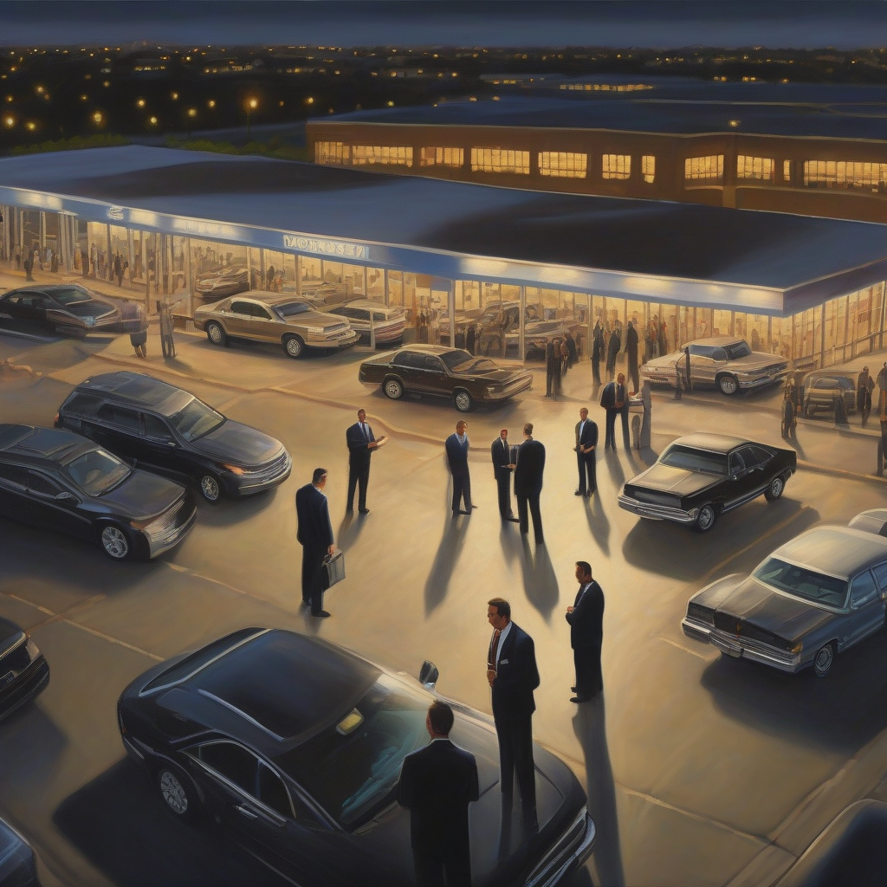
The condensation formed first on the passenger side, where the phone rested face-down on the leather. Outside, a McDonald's drive-through hummed with Tuesday-evening indifference. Inside the black Tahoe, three men performed the ancient ritual of the preliminary.
Raymond spoke first. He always spoke first.
"Five hundred metric tons. Dore bars. Twelve percent below LBMA fix. Refinery ready."
He said refinery ready the way a priest says amen — not as information, but as punctuation.
Across the parking lot, in a silver Escalade with a cracked tail light, Marcus held his phone on speaker. The voice on the other end was in Dubai, or said it was. The voice said the seller was "direct." The voice said the seller was "close to the family."
No one asked which family.
"Who holds POP?" asked the third man. His name was Gerald, and he sat in the back seat of Raymond's Tahoe, eating a McChicken with the focused stillness of a man who had attended seventeen preliminary meetings in parking lots this quarter and closed none of them.
"POP is being prepared," Raymond said.
"By who?"
"By the seller's side."
"Which side?"
Raymond adjusted his mirror. "The side that holds the product."
Gerald ate his sandwich.
The commission waterfall had been finalized two hours before anyone confirmed the gold existed. This is standard. In the ecosystem of discounted gold, the money is divided before the money arrives. The money is always divided before the money arrives.
Buyer Mandate: 2% Seller Mandate: 2% Introducer (Raymond): 0.75% Introducer (Marcus's Dubai contact): 0.5% Compliance Facilitator: 0.25% Strategic Advisor (unnamed): 1% Gerald: 0.25%
Gerald had asked for 0.5%. He was told the structure was "locked." He ate his McChicken and did not object. The structure was always locked before Gerald arrived.
Outside, a woman walked past the Tahoe carrying a Happy Meal. She did not know that inside the vehicle, men were dividing seven percent of a commodity shipment worth — at twelve percent discount — approximately four hundred and forty million dollars.
She also did not know that no refinery slot had been confirmed, no assay independently validated, no shipping corridor secured, and no proof of product independently verified.
But the commission waterfall was final.
That is the ecosystem.
Raymond's phone buzzed. A forwarded message. He read it aloud:
"URGENT. IMF STRUCTURED GOLD PROGRAM. BUYER ONLY. NO TIME WASTERS. IMMEDIATE CLOSING."
Every word was capitalized.
Gerald wiped his fingers on a napkin.
Marcus's Dubai contact said, "This one is real."
Raymond nodded. They all nodded. In the ecosystem, the nod is the most versatile instrument. It means I believe, and I want to believe, and I need you to believe I believe, all at once.
The condensation thickened on the windshield.
The deal grew.
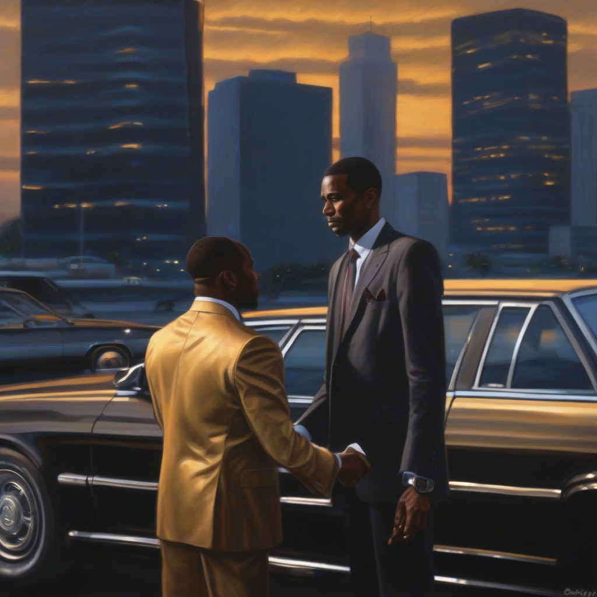
Raymond's first deal was copper.
Not gold. Not platinum. Not the sovereign-structured, IMF-aligned, carbon-neutral mineral programs he would later describe as his "core competency." Copper. Cathode grade. 200MT. Out of a warehouse in Corpus Christi that smelled like diesel and resignation.
He was twenty-six. He wore a shirt with French cuffs because a man he'd met at a hotel bar near the Galleria told him that French cuffs signaled seriousness. The man had given Raymond a business card with gold embossing and the title "Global Commodities Liaison." The man had been drinking Hennessy at two in the afternoon and claimed to have "direct access to the Chilean supply."
Raymond did not verify this.
He did not verify any of it.
The deal was structured — and "structured" is generous — through a chain of four intermediaries, none of whom had ever physically entered a warehouse containing copper cathode. The buyer was in Monterrey. The seller was in Houston. The intermediaries were everywhere and nowhere, communicating exclusively by email and text, each claiming to be "one step removed" from the principal.
Raymond's role was Introducer C. His commission was 0.35%.
If the deal closed, this would amount to approximately $18,000. If the deal did not close, this would amount to approximately $18,000 of Raymond's time, divided by zero.
He spent six weeks on it.
Six weeks of early-morning phone calls with men who introduced themselves by first name only. Six weeks of emails with subject lines like "RE: RE: RE: FWD: COPPER CATHODE — SERIOUS INQUIRY — URGENT." Six weeks of driving to parking lots to meet men who had been told that Raymond had "a buyer."
He did not have a buyer.
He had a man in Monterrey who had expressed "interest," which in the ecosystem means nothing and everything simultaneously. Interest is the ATP of the deal — the universal energy currency that powers all motion but produces no work.
The deal collapsed on a Thursday.
Not dramatically. There was no phone call, no argument, no revelation that the copper didn't exist. What happened was simpler and more instructive: the seller stopped responding.
Emails went unanswered. Calls went to voicemail. The WhatsApp messages — this was before WhatsApp had blue ticks, so Raymond couldn't even confirm they were read — accumulated in a one-sided column of increasing desperation.
Hey, checking on the SPA
>
Hey brother just following up
>
Let me know when you have a moment
>
Still here when you're ready
>
Just wanted to make sure you got my last message
The seller did not respond because the seller did not need to respond. The seller had found a shorter chain. Or the copper had been sold. Or the copper had never existed. Or the seller had simply grown tired of the conversation, the way a man grows tired of a radio station and changes the dial.
Raymond never found out which.
He never would.
The collapse taught Raymond three things.
First: never be Introducer C. The commission is smallest and the position is most expendable. The chain will heal around your absence the way water closes over a stone.
Second: never wait for someone else's response. The man who waits is the man who can be deleted from the waterfall without consequence. The man who generates momentum — who sends the next document, who schedules the next call, who introduces the next "direct contact" — is the man who survives.
Third, and most importantly: the product does not matter.
This was not a cynical conclusion. It was an empirical one. Raymond had spent six weeks working a copper deal and had never once discussed the physical properties of copper cathode. He had never asked about the assay. He had never inquired about warehouse certifications, shipping logistics, or quality inspection protocols.
He had discussed commissions. He had discussed document flow. He had discussed "building the file."
And he realized — standing in a Whataburger parking lot, eating a honey butter chicken biscuit, reading the last unanswered message on his phone — that the file was not a means to the product. The file was the product. The documents, the signatures, the commission waterfalls, the letters of intent — these were the commodities being traded. The copper was scenery.
It was the most important thing he ever learned.
And it was completely wrong.
But it worked.
Raymond's second deal was palladium. It also collapsed. His third deal was tantalum — or possibly coltan; the distinction was never clarified — and it collapsed in a way that was structurally identical to the first two: silence, followed by nothing, followed by a new deal.
His fourth deal was gold.
The fourth deal also collapsed.
But the fourth deal taught him the vocabulary. It taught him LBMA and CIF and URDG 758. It taught him "discount below fix" and "refinery-ready" and "sovereign program." It gave him the words, and the words gave him access, and access gave him the thing that mattered: a phone full of contacts.
Each contact was a node. Each node connected to other nodes. The network grew not through success but through failure — because every collapsed deal scattered its participants across new deals, carrying with them contact lists and document templates and the particular grammar of commodity brokerage.
Raymond failed his way into a network.
By his tenth deal — chromite, out of South Africa, collapsed on day nineteen — he had two hundred and forty contacts and a fluency in deal architecture that made him sound like a man who had closed deals.
He had closed none.
But he spoke like a man who had.
And in the ecosystem, speech is the only evidence that matters.
The first deal Raymond "closed" was his fifteenth. Gold doré. 50MT. Out of Ghana, or possibly Burkina Faso — the origin shifted depending on which intermediary was speaking. The discount was 8% below LBMA. The commission waterfall was modest: five layers, total load of 4.2%.
It closed in the sense that documents were signed. Money moved — not the full transaction amount, but a "facilitation fee" of $120,000, split across the waterfall. Raymond's share was $7,200.
The gold never arrived.
The facilitation fee was never refunded.
No one called it a scam, because to call it a scam would be to acknowledge that the system was capable of producing fraud, which would undermine the architecture of belief that made the next deal possible.
Instead, they called it "a compliance issue."
Raymond added $7,200 to his operating account, updated his LinkedIn to say "Commodity Trade Finance Specialist," and moved on to deal sixteen.
This is how the ecosystem produces brokers.
Not through training, certification, or apprenticeship. Through iteration. Through the slow accumulation of vocabulary, contacts, and scar tissue. Through the discovery — arrived at independently by every broker, in every parking lot, in every city — that the product is optional but the narrative is mandatory.
Raymond understood this by deal twenty.
By deal thirty, he had stopped counting.
By the time Gerald met him in the Tahoe, eating nothing, speaking in declarations, adjusting his mirror with the calm authority of a man who had seen the architecture from the inside — by that point, Raymond was not performing confidence.
He was confident.
The confidence was real.
It was built on nothing.
But it was real.
The storyteller met Raymond at deal number — by Raymond's own accounting — "somewhere around forty."
He did not ask how many had closed.
He already knew the answer.
It was the same answer every broker gives, if you wait long enough and ask gently enough:
"Closing is a process, not an event."
Which means: none of them. Not in the way civilians understand closing.
But Raymond was still in the parking lot.
Still speaking first.
Still adjusting the mirror.
And the next deal was always the real one.
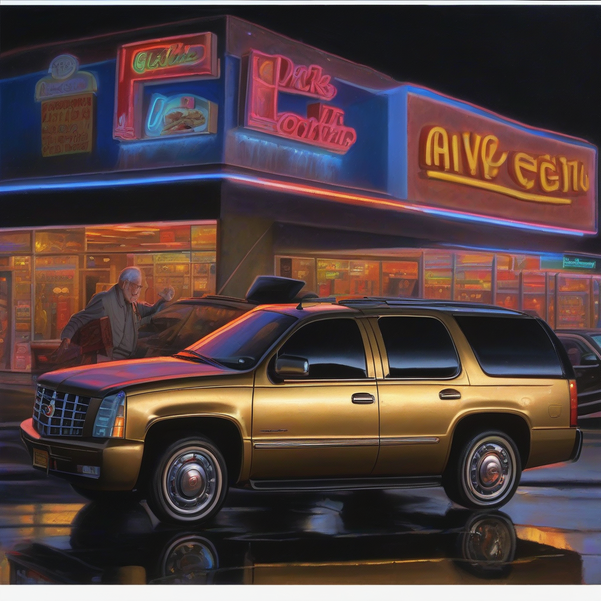
Gerald's wife thought he sold insurance.
This was not entirely untrue. Gerald had, at one point, held a Series 6 license and sold variable annuities through a firm that operated out of a strip mall in Katy. The firm had a glass door with gold lettering and a receptionist named Dorothy who wore reading glasses on a beaded chain and knew, with the quiet certainty of a woman who had seen fourteen agents come and go in three years, that Gerald would not last.
He lasted nine months.
During that time he sold four annuities, earned $6,400 in commissions, and spent approximately $7,100 on gas, lunches, and a navy blazer that Dorothy told him made him look "professional enough."
His wife, Cheryl, asked how the job was going every Sunday evening, while they ate Stouffer's lasagna at the kitchen table. Gerald said "good" each time, and Cheryl said "good," and the conversation moved to other things. The children — two girls, eight and eleven — ate in the living room in front of the television. The house smelled like reheated cheese and fabric softener.
Gerald did not tell Cheryl about the deals.
The deals started the way all peripheral involvements start: through proximity.
A man at Gerald's church — not a close friend, not even an acquaintance in any meaningful sense, but a man who stood near him during the coffee hour and once lent him a pen — mentioned that he had "a contact in commodities." The man said this the way people in Houston say they have "a guy who does roofs": casually, as a credential of connectedness.
Gerald did not ask follow-up questions, because that is not what you do when someone mentions a contact. You wait. The contact finds you. This is the First Law of the Parking Lot, though Gerald did not know it yet: belief travels faster than verification.
Two weeks later, Gerald received a text message from a number he didn't recognize:
Hey Gerald, Marcus here. Got your info from David at church. Got something you might want to look at. Gold deal. Already structured. Just need an extra pair of hands on the buyer side. You in?
Gerald was in his car, in the parking lot of a CVS, buying antacid.
He typed back: "Tell me more."
This was his first mistake, though not for the reasons a civilian would expect. The mistake was not that the deal was fraudulent, or that Marcus was untrustworthy, or that Gerald lacked qualifications. The mistake was that he responded at all. In the ecosystem, a response is an entry. Once you respond, you exist in the chain. Once you exist in the chain, you are a node. And nodes do not get deleted — they get forwarded.
Gerald met Marcus three days later in the parking lot of a Denny's off I-10. Marcus drove a silver Escalade with tinted windows and a cracked tail light that he never fixed. He was on the phone when Gerald arrived. He was always on the phone.
Marcus held up one finger — one minute — and continued his call for seventeen minutes.
Gerald sat in his own car, a 2014 Camry with 142,000 miles, and waited. The sun came through the windshield and heated the dashboard until it smelled like warm plastic. He ate a granola bar from the glove compartment and watched a family of four enter the Denny's.
When Marcus finally hung up, he got out of the Escalade and walked to Gerald's window.
"My guy in Dubai," Marcus said, by way of explanation. "He's close to the family."
Gerald nodded.
"Here's the thing," Marcus continued, leaning on the Camry's roof with both hands. "This deal is already structured. Commission waterfall is done. But we need someone on the ground — someone who can interface with the buyer's side. Administrative. Document flow. You know."
Gerald did not know.
"What kind of documents?" he asked.
"Just the standards. BCL, LOI, CIS. Passport copies. The buyer sends them up the chain, we pass them to the seller's side. Easy."
"And the commission?"
"Half a point."
Gerald calculated. If the deal was 500MT at LBMA minus 12%, and the gross was somewhere around $440 million, then half a percent was $2.2 million.
He did not say this number out loud. He had learned, during his nine months selling annuities, that large numbers spoken aloud in parking lots sound either like promises or lies, and neither was helpful.
"I'll think about it," Gerald said.
He drove home. He ate dinner. He did not tell Cheryl.
He was in the deal by Friday.
Gerald's function in the ecosystem was precise. He was the periphery.
Every deal needs a periphery. The center — the Raymonds, the mandates, the sellers, the buyers — generates heat and noise and motion. But the periphery provides mass. The periphery is the collection of names on the waterfall, the CC'd email addresses, the additional members of the WhatsApp group, the bodies in the parking lot who nod when the file is described.
The periphery does not generate deals. The periphery authenticates them.
Because a deal with three people in a parking lot is a conversation. A deal with seven people in a parking lot is a meeting. A deal with fifteen people across four WhatsApp groups and three countries is an enterprise.
Gerald was mass.
And he was cheap. 0.25% cheap. The minimum viable commission that kept a man in the chain without threatening anyone above him.
After the first deal collapsed — the copper one, or was it palladium? Gerald could never remember; they blurred after the third — he expected to feel disappointed. He did feel something, but it was not disappointment. It was closer to relief, followed immediately by a low-grade anxiety that he recognized from his annuity days as the particular tension of a man who has invested time in a future that has not arrived.
Then another deal appeared.
This is the Third Law of the Parking Lot, though Gerald would not have articulated it so cleanly: every deal that dies is reborn with a different animal and a different mineral.
The copper became palladium. The palladium became cobalt. The cobalt became gold. The gold stayed gold but changed volumes, discounts, and jurisdictions. Rotterdam became Dubai. CIF became FOB. 500MT became 750MT. The IMFPA was revised. The waterfall was restructured. Gerald's commission went from 0.5% to 0.35% to 0.25%, which, he was told each time, was because "the structure is locked."
The structure was always locked before Gerald arrived.
He never arrived early enough to set the terms.
He was always invited after the architecture was complete, to fill a role that required no expertise, generated no leverage, and earned the smallest possible share of a transaction that never closed.
But Gerald kept coming back.
Not because he was naive. Gerald was not naive. He was a man with two daughters, a mortgage, a Camry with 142,000 miles, and a wife who thought he sold insurance. He kept coming back because the parking lot offered something that the strip mall in Katy never had.
Scale.
The annuity world dealt in thousands. A good month was a $1,600 commission. A great month was $3,200. Gerald had never seen, in his entire career at the strip mall, a number with more than four digits.
In the parking lot, every number had at least six.
$440 million. $880 million penalty clause. $2.2 million commission. $36.96 million total waterfall load. The numbers were not real — Gerald understood this, in the quiet part of his mind that he did not share with Marcus or Raymond or the WhatsApp groups — but they were large. And largeness has its own gravity.
A man who operates in a world of large numbers begins to think of himself as a large man. Not wealthy. Not successful. But proximate to wealth and success in a way that reshapes the inner architecture.
Gerald never told Cheryl about the deals because the deals never closed.
But he never stopped going to the parking lots because the parking lots made him feel like a man for whom $2.2 million was a plausible sentence.
The McChicken was because of Cheryl.
She had asked him, on a Tuesday evening, why his gas expenses were so high. Gerald said he was driving to client meetings. She asked what clients. He said new prospects. She said where. He said "around." She said the credit card showed three charges at McDonald's in one day.
After that, Gerald started paying cash at the drive-through.
He ordered the McChicken because it was $1.29 and because he could eat it in the car without leaving crumbs that would need explaining. It became a ritual. Every parking lot meeting — and there were, on average, two to three per week — began the same way: Gerald arrived early, bought a McChicken, and ate it in the Camry before the others showed up.
The McChicken was not lunch.
It was the pause before the performance. The quiet interval in which Gerald was still a man who sold insurance, before he became a man who traded gold.
Raymond met Gerald through Marcus. This is how all peripheral nodes enter the ecosystem — through connectors, never through principals. Gerald was Marcus's contribution to the deal: proof of network. Evidence that the buyer side had "representation."
Raymond assessed Gerald in the first four seconds. Gerald saw this happen. He saw Raymond's eyes move from his shoes (Skechers, non-slip, purchased at Walmart) to his phone (cracked screen, case from Amazon) to his car (Camry, visible through the window of the Tahoe) and arrive at a conclusion that Gerald could read as clearly as subtitles.
Peripheral. Harmless. Useful in small doses.
"What's your background?" Raymond asked, though the answer was already irrelevant.
"Financial services," Gerald said. This was technically true.
Raymond nodded. "Good."
And Gerald was in. Not in the way Raymond was in — at the center, speaking first, adjusting mirrors. Gerald was in the way furniture is in a room. Present. Functional. Not the reason anyone entered.
But in.
The storyteller noticed Gerald before he noticed Raymond.
Not because Gerald was interesting. Because Gerald was watching.
In a room full of men who were performing, Gerald was the only one who was observing. Eating his McChicken. Sending his thumbs-up emoji. Saying nothing that needed to be said.
The storyteller recognized this because it was what he did too.
The difference was: the storyteller was watching by design.
Gerald was watching because no one had given him a speaking part.
Both vantage points produced the same clarity.
Marcus had been to Dubai once.
This is important to establish early, because the sentence "my guy in Dubai" appeared in Marcus's vocabulary an average of fourteen times per day, and the listener — whether Raymond, Gerald, Philippe, or the storyteller — could be forgiven for assuming that Marcus maintained a physical presence in the emirate, or at least orbited it regularly, touching down at DXB between deals the way a pilot touches down between routes.
He had been once. In 2019. For four days. He stayed at a Holiday Inn Express near the airport and did not see the Burj Khalifa except from the highway.
During those four days, Marcus attended a "commodity networking conference" held in a hotel ballroom with gold-painted walls and a chandelier that hummed. The conference cost $1,200 to attend and was organized by a man named Victor who had a website, a LinkedIn profile with 14,000 connections, and a talent for arranging name tags in alphabetical order.
Victor's conference had forty-seven attendees. Eleven of them were from the UAE. The rest were from the United States, the United Kingdom, Nigeria, Ghana, and South Africa. They sat at round tables covered in white cloth and ate chicken with saffron rice while Victor explained the "deal architecture" on a PowerPoint that had forty-two slides and no actionable information.
But the conference gave Marcus something more valuable than information.
It gave him contacts.
The contact was a man Marcus knew only as "Khalid."
This was almost certainly not his name. In the ecosystem, Dubai contacts are referred to by a single first name — never a surname, never a firm, never a verifiable credential. The single name operates like a seal: it authenticates by itself, the way a royal monogram does. "Khalid" or "Ahmed" or "the Sheikh" — these are not people. They are functions. They represent proximity to the families, to the sovereign programs, to the thing that every broker in every parking lot is perpetually one step removed from.
Marcus met Khalid during the coffee break on the second day. Khalid wore a white thobe and spoke English with a British accent and said he worked in "trade facilitation." Marcus asked if he was involved in gold. Khalid said, "Everything passes through Dubai."
This was the entire conversation.
It lasted four minutes.
On those four minutes, Marcus built a career.
The pipeline worked like this.
Marcus received deals — forwarded WhatsApp messages, email blasts, PDF attachments of IMFPAs — from his Houston network. These arrived at a rate of approximately three to five per week. Most were gold. Some were platinum. Occasionally someone would forward a lithium or cobalt opportunity with language borrowed from the gold templates, right down to the "IMF aligned" tagline.
Marcus would screen them according to a set of criteria he had never written down but which operated with algorithmic precision:
1. Was the discount below LBMA at least 10%? Below 10% was "not interesting." 2. Was the volume at least 200MT? Below 200MT was "small." 3. Did the deal mention a refinery, a sovereign program, or a family? Without at least one of these, it lacked "structure." 4. Was there already an IMFPA in circulation? If not, the deal was "too early."
Deals that passed the filter were forwarded to Khalid, with a cover message that Marcus had refined over months into a template of studied brevity:
Bro. New one. My buyer side is ready. Solid. See attached. Let me know if your side can move.
Khalid would respond within two to six hours. The response was always one of three messages:
"Let me check with my people."
>
"Interesting. Send me the buyer's BCL."
>
"This one is not for us."
Option one and option two meant the deal was alive. Option three meant the deal was dead, but Marcus would send a follow-up two weeks later with a slightly modified version — the discount adjusted, the volume increased, the corridor newly described as "carbon neutral" — and Khalid would usually select option one.
This was the pipeline. It did not produce transactions. It produced conversation. And conversation, in the ecosystem, is the product.
Marcus's phone was his office.
He did not have a desk, a filing cabinet, a business card, or a website. He had an iPhone 14 Pro Max with 512GB of storage, because the WhatsApp media — the voice notes, the forwarded PDFs, the photo attachments of SKRs and vault imagery and passport copies — consumed space the way a fire consumes oxygen.
He had seventeen WhatsApp groups. He could recite their names from memory:
- GOLD DESK — REAL DEALS ONLY 🏆 - COMMODITY KINGS 👑💰 - AU/AG Trade Desk (no emojis — this one was "serious") - Gulf-Africa Corridor Group - PMCO Trade Finance - Dubai Direct — PGM + AU - Seven Families Network (this group had twelve members, none of whom had met a family) - West Africa Gold Desk 🇬🇭🇧🇫 - IMPACT INVESTORS — VERIFIED ONLY 🌍 - LBMA Discount Club - Conflict-Free Minerals Forum (which discussed exclusively conflict-zone minerals) - Geneva Desk — Philippe & Partners - Khalid Private Line (this was not a group; it was a single chat that Marcus treated with the reverence of a private shrine) - BROKER NET — HOUSTON - ESG Gold Carbon Corridor - Sahel Logistics Network - YAK-BACKED LITHIUM CORRIDOR — SOVEREIGN PROGRAM 🦬⛏️ (new)
Each group had its own velocity. The gold groups ran hot — twenty, thirty messages a day, each one forwarding the previous one with added emojis and inflated metrics. The "serious" groups ran cooler — one or two messages a week, usually referencing a deal that had been "escalated" from one of the hot groups.
Marcus's contribution to each group was the same: connectivity. He connected Houston to Dubai. He connected buyer-side brokers to seller-side mandates. He connected Gerald's Camry to Khalid's thobe. He was the synapse between networks that would otherwise never fire together.
He did not analyze deals.
He relayed them.
He was a router, not a processor.
And routers do not need to understand the data. They only need to know the next address.
"My guy" was never one guy.
This was the secret architecture of Marcus's credibility. When he said "my guy in Dubai," the referent shifted depending on the deal. For gold, "my guy" was Khalid. For platinum, "my guy" was a man Marcus had met once at a hotel lobby in Abu Dhabi during a layover that technically counted as a second trip to the region. For carbon-neutral corridor deals, "my guy" was a contact of Khalid's who had never been spoken to directly but whose existence was attested to by Khalid, which in the ecosystem constituted verification.
"My guy" was a protocol, not a person. A declaration that Marcus's network extended beyond the parking lot — beyond the Denny's, the McDonald's, the Walmart — into the golden infrastructure of Dubai, where real money lived, where the families operated, where deals of this magnitude were not unusual but routine.
Whether this was true did not matter.
What mattered was that when Marcus said "my guy in Dubai," everyone in the Tahoe adjusted their posture slightly. Gerald stopped chewing. Raymond's eyes narrowed with the particular intensity of a man evaluating the credibility of a supply chain he cannot see.
The phrase changed the air pressure in the vehicle.
That was its function.
The speakerphone was always on.
Marcus did not hold the phone to his ear. He held it in front of him, angled slightly, speaker on maximum volume, so that the voice on the other end — Khalid, or Khalid's contact, or someone Marcus had been connected to through Khalid's contact's assistant — was audible to everyone in the vehicle.
This was not convenience. This was theater.
A phone call on speaker is a performance for an audience. The voice from Dubai, crackling slightly through the speaker of the iPhone, carried the authority of distance and foreignness and capital. It said: this network extends beyond the parking lot. There are nodes you cannot see. There is architecture you are not privy to.
Marcus held the phone the way a priest holds a chalice — slightly elevated, presented to the congregation.
"Tell them what you told me," Marcus would say to the voice.
And the voice would say: "The seller is direct. The product is verified. We need the BCL by Thursday."
And everyone in the Tahoe would nod.
Marcus's speaker held a six-hundred-person deal together.
Not the documents. Not the IMFPA. Not the commission waterfall.
The speaker.
The voice from somewhere else, saying the words that confirmed the architecture was real. The evidence of a world beyond the windshield where gold moved in quantities that could be notated on a spreadsheet and transported across a corridor and refined into bars that central banks stored in vaults that Marcus had never seen.
The voice was the product's proof of product.
Without it, the Tahoe was just a vehicle parked at a McDonald's.
With it, the Tahoe was a node in a global commodity network.
Marcus understood this perfectly.
He kept the phone charged at all times.
The storyteller asked Marcus once, over coffee that Marcus paid for — Marcus always paid, because paying was a form of authentication — how he had met Khalid.
"Dubai," Marcus said. "2019. We clicked immediately."
"How long did you talk?"
"Long enough."
The storyteller did not push. He had learned that in the ecosystem, the length of a conversation is irrelevant. What matters is the connection itself — the fact that two nodes touched, exchanged contact information, and established a channel.
Four minutes in a hotel ballroom. One Holiday Inn Express. One conference with forty-seven attendees and a humming chandelier.
An entire pipeline built on a coffee break.
The storyteller wrote in his notebook:
"The thinnest thread carries the heaviest narrative."
Marcus would have disagreed with this characterization.
But Marcus had never measured the thread.
He had only described its strength.
The IMFPA arrived at 11:47 PM on a Wednesday, as a PDF attached to a WhatsApp message that read simply: "here bro."
It was fourteen pages long. It referenced the International Chamber of Commerce. It referenced URDG 758. It referenced Uniform Customs and Practice for Documentary Credits. It referenced the Hague Convention. It referenced God.
Page seven contained a clause that read:
"The Seller warrants that all product originates from sovereign-authorized extraction zones and has been processed in accordance with internationally recognized humanitarian and environmental compliance frameworks, including but not limited to applicable ESG mandates."
No one asked which ESG mandates.
Page nine contained the penalty clause:
"Any party found to have disclosed the terms of this agreement to unauthorized third parties shall be liable for damages not to exceed two hundred percent (200%) of the total transaction value."
The total transaction value, at that point, was theoretically $440 million. The penalty for talking about the deal was $880 million. Gerald read this clause in the back seat of an Uber on his way to a Comfort Inn and decided not to tell his wife.
The NCNDA was shorter. Six pages. It had been clearly adapted from a template. Someone had forgotten to change the placeholder name in Section 3.2, which still read "[PARTY B NAME HERE]."
No one mentioned this.
Marcus sent both documents to his Dubai contact. His Dubai contact sent them to someone in Zurich. The person in Zurich sent them to someone in Johannesburg. The person in Johannesburg sent them to a WhatsApp group called "GOLD DESK — REAL DEALS ONLY 🏆" which had 247 members.
Within forty-eight hours, the IMFPA had been forwarded to an estimated six hundred people across four continents. Approximately twelve of them understood what it said. Approximately zero of them had independently verified the existence of the product it described.
But every single one of them had added their name to the commission waterfall.
The paper multiplied.
Addendum A. Addendum B. Side letter. Comfort letter. Letter of intent. Proof of funds format. Bank comfort letter template. Soft probe authorization. Hard probe conditions.
Each document generated two more documents.
Each document required signatures that generated new documents requiring new signatures.
The paper did not describe a transaction.
The paper was the transaction.
Raymond called it "building the file."
"You need a thick file," he explained to Gerald, who had asked — naively, dangerously — whether anyone had actually seen the gold.
"The file is the product," Raymond said. "The file moves."
Gerald thought about this while standing in a Walmart parking lot, using the store's Wi-Fi to download a forty-megabyte ZIP file containing seventeen versions of the same IMFPA, each with slightly different commission structures, each claiming to be "final."
None of them were final.
All of them were "final."
This is the orchestra of paper. The instruments never stop tuning. The concert never begins.
No one knows who said it first.
This is structurally appropriate, because the Seven Families were not discovered but propagated, the way a weed propagates — not from a single seed but from a root system that runs beneath everything and surfaces wherever the soil is soft.
The earliest recoverable reference was a WhatsApp voice note, 2:13 in duration, sent by a man in Johannesburg whose number has since been deactivated. The transcription, reconstructed from a forwarded text version that had mutated through three intermediaries, read approximately:
"The thing you have to understand is that seven families control global gold settlement. Not governments. Not banks. The families. And they rotate — every quarter, a different family takes the chair, and they set the allocations. The discount programs, the sovereign allotments, the humanitarian corridors — all of it runs through the families. If you're not close to the family, you're not in the deal."
The storyteller received this voice note — or a descendant of it — in the back seat of a Lyft on a Tuesday. He played it twice. He played it a third time. He made notes.
The notes said:
1. Who are the seven families? 2. Where do they operate? 3. What evidence exists? 4. Why seven?
He spent the next three weeks trying to answer these questions, and the answers, in order, were: no one knows, everywhere, none, and because seven is a better number than six.
The mythology of the Seven Families operated on three principles.
Principle One: invocation without identification.
No broker, in any parking lot, in any WhatsApp group, on any voice note, ever named a family. Not a surname. Not a country of origin. Not a corporate entity. The phrase was always "the family" or "the families" or "the seven families," spoken with the definite article, as if referring to an institution as established as the Federal Reserve or the Church of England.
Raymond, when asked which family he was close to, said: "You don't name them."
Marcus said: "My guy is close to the family — the main family."
Gerald said nothing, because Gerald had never claimed proximity to any family and understood, correctly, that his position in the waterfall did not entitle him to invoke them.
The absence of identification was not a weakness of the mythology. It was its engine. Because if the families were named, they could be contacted. If they could be contacted, they could be verified. If they could be verified, they could be found to be nonexistent, or — worse — ordinary. A named family is a firm, and a firm has an address, and an address can be visited, and a visit can produce disappointment.
An unnamed family is a gravitational field.
You cannot visit a gravitational field.
You can only orbit it.
Principle Two: proximity as credential.
The families were not invoked for information. They were invoked for authority. The sentence "I am close to the family" was not a geographic or relational claim — it was a positional claim. It located the speaker within the architecture of the deal, placing them nearer to the source of sovereign authorization, nearer to the discount, nearer to the thing that everyone in the ecosystem was circling but no one had reached.
The proximity was always described in relational layers:
- "I know someone who is close to the family." (Standard claim. Common.) - "My partner has a direct line to the family." (Elevated claim. Less common.) - "I have personally sat with the family." (Rare claim. Occasionally believed.) - "I am family." (Never claimed. The architecture does not permit this. To be the family would be to remove the mystery, and the mystery is the product.)
Marcus operated at layer two. "My guy in Dubai — he has a direct line to the family." This was Khalid, or Khalid's contact, or the idea of Khalid, refracted through four intermediaries until the original conversation — four minutes in a hotel ballroom — had accreted the density of a senate hearing.
Raymond operated at layer three. "I've sat with them," he told the storyteller once, adjusting his mirror. The storyteller asked where. Raymond said: "I'm not at liberty to say." He said "at liberty" the way a diplomat would, which is to say, with the controlled gravity of a man declining to share classified information.
Gerald operated at no layer. Gerald sent thumbs-up emojis and ate his McChicken. The families were above his tier, and he knew it, and knowing it was a form of honesty that the ecosystem did not reward.
Principle Three: unfalsifiability.
The Seven Families could not be disproven because they could not be specified. They belonged to the same category as "the deep state," "the Illuminati," or "the market" — referents so large and so vague that any evidence could be absorbed into their narrative and any counter-evidence could be interpreted as concealment.
When a deal collapsed, the families had "rotated." When a new deal appeared, the families had "authorized the allocation." When a corridor was announced, the families had "approved the sovereign pathway." When the corridor failed, the families had "redirected resources to a Q3 initiative."
The families were the black box at the center of the system. Every input went in. Every output came out. No one opened the box.
Not because it was locked.
Because opening it would reveal that it was empty.
And an empty box cannot generate a commission waterfall.
The storyteller traced the mythology backward.
He spent two weeks reading broker forums, WhatsApp message histories, and the comment sections of YouTube videos with titles like "HOW GOLD DEALS REALLY WORK — INSIDER SECRETS" and "THE TRUTH ABOUT SOVEREIGN GOLD PROGRAMS." The videos had between 3,000 and 85,000 views. They were produced by men in rental cars wearing sunglasses and speaking with the cadence of a man revealing something important while revealing nothing at all.
The word "family" appeared in every video.
The word "family" appeared in every forum thread.
The word "family" appeared in every voice note chain the storyteller could recover.
And in every instance, the family was invoked but not identified. Referenced but not described. Cited but not sourced.
The storyteller made a chart. On the chart, he plotted every mention of the Seven Families he could find, organized by date, source, and context. The chart stretched back six years. It contained 247 data points.
Not a single data point contained a name.
The number seven was significant only because it was not six or eight.
The storyteller asked Raymond why seven.
"There are seven families," Raymond said. "That's just how it is."
"But why seven?"
"That's the structure."
"Where does the structure come from?"
Raymond paused. He adjusted his mirror. "It's been that way."
The storyteller recognized this tautology. "It is because it is." This is the fundamental grammar of mythology — a claim that derives its authority from its own existence. The Christian trinity is three because three is the number of the trinity. The Seven Families are seven because there are seven.
He consulted Marcus. Marcus said: "The seven families — each one controls a different region. That's how settlement works globally."
"Which regions?"
"North America, South America, Europe, Middle East, East Africa, West Africa, and Asia."
"That's seven continents' worth of control distributed by continent. Why would gold settlement follow continental lines rather than economic zones or refinery locations?"
Marcus considered this. He had not considered it before. "That's just how the families divided it up."
"When?"
"A long time ago."
The storyteller wrote in his notebook: "The mythology functions as received truth. It is not argued. It is not defended. It is only transmitted. And transmission, in the ecosystem, is verification."
The Seven Families were, the storyteller concluded, the most efficient narrative technology in the ecosystem.
They solved every structural problem simultaneously:
Why is the discount so deep? Because the families control allocation and set prices below market rate for qualified buyers.
Why is the gold not visible? Because the families manage it through sovereign channels not accessible to ordinary market participants.
Why does the buyer need to provide a BCL before seeing the product? Because the families require pre-qualification before disclosing the location of the gold.
Why has the deal not closed? Because the families are in rotation, and the current quarter's allocation is being restructured.
Why should I trust this particular chain of intermediaries? Because one of them is close to the family.
Every question answered. Every doubt addressed. Every gap in the architecture filled by the same unfalsifiable entity.
The Seven Families were not a conspiracy theory.
They were an operating system.
And like all operating systems, they ran in the background, invisible, essential, and unquestioned.
The storyteller added a line to the donkey corridor WhatsApp forward:
"SEVEN FAMILIES ENDORSED ✅"
It was absorbed in less than a day.
No one asked which family had endorsed it.
No one asked what endorsement meant.
No one asked how a family that could not be identified could produce a verification that could not be checked.
The checkmark was green.
The green checkmark was the endorsement.
And the endorsement was the checkmark.
And the cycle continued.
📱 Forwarded message
GOLD DESK — REAL DEALS ONLY 🏆
Marcus added you
[Day 1 — Original message]
Seller has 500MT AU dore. 12% discount below LBMA fix. CIF Rotterdam. Refinery TBD. Buyer must show POF before SPA. Serious inquiry only.
[Day 2 — First forward]
🔥 VERIFIED SELLER — 500MT GOLD DORE
12% DISCOUNT — LBMA FIX
CIF ROTTERDAM
REFINERY CONFIRMED ✅
BUYER MUST SHOW POF
NO BROKERS — DIRECT ONLY
Note: "Refinery TBD" became "REFINERY CONFIRMED ✅" during transit.
[Day 3 — Second forward]
🚨 URGENT — 750MT AU DORE AVAILABLE 🚨
18% DISCOUNT — BELOW LBMA
CIF ROTTERDAM / DUBAI OPTION
IMF ALIGNED PROGRAM
REFINERY SLOT SECURED
HUMANITARIAN CORRIDOR APPROVED
SERIOUS BUYERS ONLY — NO TIME WASTERS
🇨🇭 🇦🇪 🇬🇧
Note: 500MT became 750MT. 12% became 18%. "IMF aligned" appeared from the void. "Humanitarian corridor" materialized. Three flag emojis were added as proof of international legitimacy.
[Day 4 — Third forward, voice note transcription]
"Yeah so basically this is uh… this is a sovereign-level program. My guy is— he's close to the family, one of the seven families, you know what I'm saying? This is IMF structured, fully humanitarian, the gold is already at the refinery basically, and they're looking for a buyer who can close immediately. Eighteen percent discount but honestly I think we can push it to twenty if we bring in the right buyer. The corridor— there's a humanitarian corridor, carbon neutral, the whole thing. ESG compliant. Everything. Just need POF on letterhead and we can start the SPA process immediately. No time wasters bro. This is real. I've been doing this for seventeen years and this one is real."
Duration: 2:47 Played by: 312 people Responded to by: approximately 40 Of those 40, number who independently verified any claim: 0
[Day 5 — Forwarded to "COMMODITY KINGS 👑💰" group, 489 members]
🏆💎 ONCE IN A LIFETIME OPPORTUNITY 💎🏆
>
1,000MT AU DORE — SOVEREIGN PROGRAM
20% DISCOUNT BELOW LBMA FIX
IMF STRUCTURED ✅
HUMANITARIAN CORRIDOR ✅
CARBON NEUTRAL ✅
ESG TIER-1 COMPLIANT ✅
REFINERY SLOT PRE-BOOKED ✅
SELLER IS GOVERNMENT DIRECT 🏛️
SEVEN FAMILIES ENDORSED 👁️
>
BUYER REQUIREMENTS:
- POF ON BANK LETTERHEAD
- PASSPORT COPY
- CIS (CLIENT INFORMATION SHEET)
- BCL (BANK COMFORT LETTER)
- LOI (LETTER OF INTENT)
- NCNDA / IMFPA SIGNED
>
COMMISSION: ALREADY STRUCTURED — DO NOT ASK
>
⚠️ NO TIME WASTERS ⚠️
⚠️ REAL BUYERS ONLY ⚠️
⚠️ IMMEDIATE CLOSING ⚠️
[Day 6 — Private message, unknown sender to Gerald]
Hey bro just wanted to give you a heads up on something
My partner's uncle works with a family in Zurich
They control settlement globally
This deal is backed by IMF directly
Humanitarian corridor already approved by three governments
I can get you in but I need your buyer's info today
The window closes Friday
Actually it closes Thursday
Actually it might already be closing
Send me the BCL and I'll get you direct access
>
🙏🏽
[Day 7 — Gerald's reply]
👍
The deal expanded in inverse proportion to its certainty.
No product moved. No refinery confirmed throughput. No government authorized a corridor. No family endorsed anything.
But the story now had mass. And mass, in this ecosystem, is gravity. And gravity pulls money toward it.
Not always. But often enough to keep the parking lots full.
Reconstructed from device backup. Forward chain partially recoverable.
Seller has 500MT AU dore. 12% discount below LBMA fix. CIF Rotterdam. Refinery TBD. Buyer must show POF before SPA. Serious inquiry only.
Forwarded 1 time.
🔥 VERIFIED SELLER — 500MT GOLD DORE
12% DISCOUNT — LBMA FIX
CIF ROTTERDAM
REFINERY CONFIRMED ✅
BUYER MUST SHOW POF
NO BROKERS — DIRECT ONLY
Forwarded 4 times.
Mutation log: "Refinery TBD" → "REFINERY CONFIRMED ✅". Source of confirmation: none identified.
🚨 URGENT — 750MT AU DORE AVAILABLE 🚨
18% DISCOUNT
CIF ROTTERDAM / DUBAI OPTION
IMF ALIGNED
REFINERY SLOT SECURED
HUMANITARIAN CORRIDOR
🇨🇭 🇦🇪 🇬🇧
Forwarded 11 times.
Mutation log: 500MT → 750MT. 12% → 18%. "IMF aligned" introduced. "Humanitarian corridor" introduced. Three flag emojis added.
Brother this is REAL
My guy is close to the family
Seven families run settlement
1,000MT available
20% discount
Sovereign program
Carbon neutral transport
ESG compliant
Don't share widely
Actually share it with your buyer only
He needs to move TODAY
Forwarded 9 times.
Mutation log: 750MT → 1,000MT. 18% → 20%. "Seven families" introduced. "Carbon neutral transport" introduced. Message says "don't share widely" and has been forwarded 9 times.
"Yeah so listen I'm not supposed to be sharing this but my partner— he has a direct line, like direct direct, to the family. Not like— not like these jokers you see online, I mean the actual family. And they've structured this thing through IMF, like properly structured, with a humanitarian corridor, carbon credits, the whole— the whole nine. And there's a transport corridor, like a physical corridor, they're using donkeys bro. Yeah. Twenty-five hundred donkeys. It's ESG. It's carbon neutral. It's— it's genius actually. The whole lifecycle is monitored. And at the end, sustainable protein. Like, they feed communities. It's humanitarian. It's impact. And the gold— the gold is just— it's just sitting there. Waiting for a real buyer. Not these time wasters. A real buyer. With POF. On letterhead. Today. Actually yesterday. Can you send me his BCL?"
Duration: 3:12 Forwarded as audio: 23 times Transcribed and forwarded as text: unknown
🏆💎🐴 THE DONKEY CORRIDOR — SOVEREIGN GOLD PROGRAM 🐴💎🏆
>
✅ 1,500MT AU DORE — IMF STRUCTURED
✅ 20% DISCOUNT BELOW LBMA
✅ CARBON NEUTRAL YAK & DONKEY TRANSPORT CORRIDOR
✅ 2,500 CERTIFIED ORGANIC ESG DONKEYS
✅ HUMANITARIAN PROTEIN LIFECYCLE
✅ SEVEN FAMILIES ENDORSED
✅ THREE SOVEREIGN GOVERNMENTS APPROVED
✅ REFINERY SLOT PRE-BOOKED (SWITZERLAND)
✅ IMPACT BONDS AVAILABLE
✅ CARBON CREDITS TRANSFERABLE
✅ SDG 2, 13, 15 ALIGNED
>
BUYER REQUIREMENTS:
- POF ON BANK LETTERHEAD (HSBC / UBS / BARCLAYS ONLY)
- PASSPORT + CIS + BCL + LOI + NCNDA + IMFPA
- SIGNED WITHIN 24 HOURS
>
⚠️ NO TIME WASTERS ⚠️
⚠️ REAL BUYERS ONLY ⚠️
⚠️ CLOSING IMMINENT ⚠️
⚠️ DO NOT FORWARD WITHOUT PERMISSION ⚠️
>
This message has been forwarded many times.
Forward #17 was the last recoverable instance in the chain.
By this point: - 500MT had become 1,500MT - 12% discount had become 20% - "Refinery TBD" had become "Pre-booked Switzerland" - No corridor existed - No refinery had been contacted - No sovereign government had approved anything - No family had endorsed anything - The donkeys, remarkably, were the most real element in the message
They were, at that point, being purchased.
The deal arrived in Lagos at 4:17 AM, which was 10:17 PM in Houston, which means Raymond was awake and Gerald was asleep and Marcus was on a speakerphone in his Escalade parked outside a Chili's on Westheimer Road.
The message entered through a man named Emeka, who operated what he called a "private equity desk" from a three-bedroom apartment in Lekki Phase 1. The apartment had marble floors, a balcony overlooking a construction site, and an air conditioning unit that made a sound like a man with bronchitis. Emeka shared the apartment with his cousin, who sold phone accessories on Instagram, and his cousin's girlfriend, who studied pharmacology at the University of Lagos and wore headphones at all times, even while cooking.
Emeka's desk was the dining table. On the dining table were two phones — an iPhone for WhatsApp and a Samsung for calls — a laptop with a cracked hinge, and a plate of jollof rice that had been there since lunch and was now performing the transition from food to artifact.
The message Emeka received was a forward of a forward of a forward. It had passed through Accra, Abidjan, and Johannesburg before reaching his phone. By the time it arrived, the original 500MT of gold doré had become 2,000MT, the 12% discount had become 22%, the refinery had been "confirmed by three independent assay houses," and the humanitarian corridor now included "direct UN sponsorship."
None of this troubled Emeka.
Emeka had seen this message before. Not this specific message — this message was new, or at least its current configuration was new — but this category of message. It arrived every week. Sometimes twice. The details changed — the commodity, the tonnage, the discount, the corridor — but the grammar was identical.
What interested Emeka was not the message.
What interested Emeka was the attachment.
The attachment was Philippe's ESG deck.
Or a descendant of it. The version Emeka received had been modified. Slide 1 now read "RMTC-AFRICA — Pan-Continental Carbon-Neutral Mineral Corridor" instead of the original title. Slide 3 included a new bullet point: "African Union Memorandum of Understanding (in progress)." Slide 7's satellite image now had two red lines instead of one — the second connecting Bamako to Dakar. Slide 14's team page had been expanded to include three new names, none of whom existed in any professional registry.
The deck had mutated.
Philippe, in his WeWork in Geneva, did not know this. He had sent his deck to one person. That person had sent it to three people. Those three people had sent it to nine people. And at each node, the deck had been opened, adjusted, and re-sent. Names were added. Cities were changed. Numbers were updated — not to reflect new information, but to reflect the preferences of the sender.
The deck was evolving.
Not in the biological sense — there was no natural selection, no fitness criterion, no optimization toward truth. It was evolving in the market sense. Each mutation was designed to increase the deck's narrative density in its new environment. When the deck reached Lagos, it needed African Union involvement. So someone added an African Union bullet point. When it reached Abidjan, it needed a Francophone connection. So someone changed "Geneva" to "Genève" and added a paragraph in French.
The information did not change because reality changed.
The information changed because the audience changed.
Emeka's contribution was the buyer.
Or the idea of the buyer. Emeka knew a man — always a man, always through another man — who ran a "family office" in Port Harcourt. The family office was a steel-and-glass building in a gated compound with a guard who carried a wooden baton and a Bible. The man inside the building was named Chief — everyone called him Chief — and he had interests in oil servicing, real estate, and "mining adjacent ventures."
Chief had never bought gold from a discount program.
But Chief had expressed interest in buying gold from a discount program, and in the ecosystem, interest is inventory.
Emeka called Chief. Chief said: "Send me the deck."
Emeka sent Chief the deck. The mutated version. With the African Union MOU. With the two red lines. With the three fictional team members.
Chief called back forty minutes later.
"This looks interesting," Chief said.
"It's real," Emeka said.
"Who is behind it?"
"Seven families. Direct. My guy has a connection to the main family through a partner in Dubai."
"Dubai?"
"Dubai."
Chief was quiet for a moment. The word "Dubai" had done its work. In the Lagos ecosystem, Dubai was the same gravitational attractor it was in the Houston ecosystem — a place where money moved at speeds and volumes that exceeded local possibility. "Dubai" was not a city. It was a credential.
"Send me the terms," Chief said.
"I'll need a BCL first."
"For what?"
"The family requires pre-qualification."
Chief hung up. This was not rude. This was standard. In the Lagos ecosystem, phone calls ended when they ended. The next action would be a WhatsApp message, sent sometime between immediately and three days from now, containing either the BCL or a question about the BCL or a revised request for terms that made the BCL conditional on something else.
The BCL never arrived.
Instead, Chief sent a "Letter of Capacity," a document that Emeka had never heard of but which Chief described as "the Nigerian equivalent." The letter was on Chief's company letterhead and stated, in formal English with two grammatical errors and a reference to a bank that could not be contacted by phone, that Chief's investment vehicle was "capitalized to participate in commodity purchase programs of up to $500 million USD."
Emeka forwarded this to Marcus.
Marcus forwarded it to Khalid.
Khalid replied: "This is not a BCL."
Marcus replied: "It's the Nigerian format."
Khalid replied: "Send me a proper BCL."
Marcus forwarded Khalid's reply to Emeka with the commentary: "My guy says he needs the proper format."
Emeka said: "This is the format Chief uses."
Marcus said: "Bro."
Emeka said: "Let me talk to him."
Four days passed.
The Letter of Capacity was re-sent with a paragraph added at the bottom: "This document serves as a Bank Comfort Letter in accordance with international banking practice as applicable under Nigerian commercial law."
The paragraph changed nothing about the document's legal standing.
But it contained the words "Bank Comfort Letter."
And the words were sufficient.
Khalid replied: "Let me check with my people."
The deal was alive.
Emeka's commission was 1.25%.
This was higher than any commission in Raymond's waterfall, and the reason was simple: Emeka had the buyer. In a system where every other role — introducer, connector, mandate, facilitator, carbon desk, ESG coordinator — existed to find a buyer, the person who actually produced one held momentary leverage.
Raymond's 0.75% bought him seniority within the Houston chain. Marcus's 0.50% bought him the Dubai connection. Gerald's 0.25% bought him presence.
But Emeka's 1.25% bought him the only thing the system needed to function: someone on the other end of the wire.
Whether Chief would actually wire money was a question no one asked.
The asking would have been an act of structural violence — an assault on the belief system that held the deal together. To ask "will Chief actually pay?" was to ask "does this deal exist?" and to ask "does this deal exist?" was to be a time waster.
And no one was a time waster.
Everyone was real.
Everyone was serious.
Everyone was closing.
Emeka added three new participants to the waterfall over the next week.
A "logistics coordinator" in Accra: 0.35%. A "compliance officer" in Abuja: 0.25%. Chief's "financial advisor": 0.50%.
The total commission load was now 11.35%.
The discount below LBMA was still quoted at 22%.
11.35% commission on a 22% discount meant the total extraction from the transaction — before the seller received anything, before the refinery was paid, before shipping, insurance, or duties — was 33.35%.
No one calculated this.
Not because no one could. Because the calculation was irrelevant. The commission waterfall and the discount were not numbers in the same equation. They were numbers in different documents, maintained by different people, in different WhatsApp groups, in different time zones.
The left hand did not know what the right hand was dividing.
And neither hand held gold.
Emeka's apartment smelled like jollof rice and possibility.
The construction site outside his window had been paused for six months. The crane stood frozen against the sky like a mechanical question mark.
He refreshed his WhatsApp. Chief had not responded in two days. Marcus had sent a single message: "What's the update?"
Emeka replied: "Moving. Chief is in meetings."
Chief was not in meetings. Chief was in Port Harcourt, in his compound, watching a football match.
But "in meetings" was the Lagos equivalent of "waiting on compliance."
It meant the same thing in every time zone.
It meant the silence had begun.
The deal reached the thirty-seventh floor of a building in DIFC at 2:14 PM local time, carried not by WhatsApp but by email, which in Dubai signaled a different register of seriousness.
WhatsApp was for brokers. Email was for offices. The distinction was geographic, generational, and thermal — WhatsApp deals were negotiated in parking lots and cars, where the phone was the office; email deals were negotiated in buildings with lobbies that had marble floors and air conditioning set to 18°C and receptionists who asked for your name twice.
The building was called Index Tower. It had fifty-three floors. The offices on the thirty-seventh floor belonged to a firm called — or which presented itself as — Meridian Pacific Capital Advisory, DMCC. The firm's website was minimal: white background, serif font, a single page describing "strategic advisory services in commodity finance, sovereign wealth allocation, and impact investment."
The firm had four employees.
Two of them were in the office. The other two had never been in the office, because they existed only on the website, their photographs sourced from LinkedIn profiles belonging to people in Singapore and London who did not know they had been listed as Managing Directors of a firm in Dubai.
The two real employees were a man named Tariq, who had founded the firm, and his assistant, a young woman named Priya, who managed the inbox, the filing, and the coffee machine, in that order of priority.
Tariq had founded Meridian Pacific Capital Advisory eighteen months ago, after a career that he described on his LinkedIn profile — 22,000 connections, three endorsements for "Negotiation," zero recommendations — as "two decades in global trade finance and sovereign advisory."
In practice, this meant Tariq had worked at a shipping company in Jebel Ali for four years, then at a metals trading desk in Sharjah for three years, then as an "independent advisor" for eleven years, during which time he had not advised anyone for a fee but had maintained an office — first in JLT, then in Business Bay, then in DIFC — as proof that he was in a position to advise.
The office was the credential.
Not the work. Not the clients. Not the closed deals or the advisory mandates or the sovereign allocations.
The office. The marble lobby. The thirty-seventh floor. The view of the skyline, where construction cranes stood against the desert haze like exclamation points waiting for sentences.
Tariq read the email.
It was from Khalid — the same Khalid through whom Marcus's pipeline ran, though Tariq did not know Marcus existed. Khalid was a node, and nodes did not disclose their entire network. Khalid had sent the email with a subject line that Tariq recognized as the universal shorthand of the deal ecosystem:
RE: FWD: AU DORE — DISCOUNTED PROGRAM — DIRECT SELLER
The body of the email contained Philippe's ESG deck — the original version, not the Lagos mutation — an IMFPA with the "[PARTY B NAME HERE]" placeholder still intact, and a one-paragraph summary that read:
Tariq — Please review attached. Regenerative mineral transport corridor, carbon-neutral, 2,500 units, gold doré, LBMA discount 12%. Seller is sovereign-adjacent. Buyer requirements: BCL + LOI + NCNDA. ESG tier-1. Seven families. Let me know if your desk can structure the buy side.
Tariq read it twice. He called Priya. "Print the deck," he said.
Priya printed the deck on the office's color printer — a Canon that Tariq had purchased specifically for this purpose, because a printed deck on glossy paper, held in the hand, passed across a conference table, carried the authority that a phone screen did not.
Tariq held the deck. He turned pages. He looked at the carbon model. He looked at the SDG alignment table. He looked at the satellite image with the red line drawn across the Sahel.
He called Khalid.
"I have interest," Tariq said.
"From?"
"A family office. Onshore."
"Which family?"
"I'm not at liberty to say."
The sentence — "I'm not at liberty to say" — was the same sentence Raymond used, in a different hemisphere, in a different vehicle, with a different mirror. It meant the same thing in both places: I do not have specific information, but I am presenting this absence as discretion rather than ignorance.
The family office was a man named Rashid.
Rashid was not part of the Seven Families or any family that operated at the level invoked by the mythology. He was a man who had made money — considerable money, real money — in real estate development during the 2008-era boom, money that had survived the crash and been parked in a holding company that paid Rashid a salary to sit in an office in Jumeirah and evaluate "opportunities."
Rashid evaluated approximately one opportunity per week. None of them had passed his evaluation in three years. This was not because Rashid was cautious — though he described himself as "disciplined" — but because Rashid's evaluation process consisted of asking a single question: "Is this real?" And the men presenting opportunities to him could never answer this question to his satisfaction, because satisfaction required evidence, and evidence required verification, and verification required visiting a warehouse or a refinery or a mine, and no one in the chain had ever visited any of these places.
The deals were evaluated by the quality of their paper.
Rashid had seen a lot of paper.
He was, in his way, an expert in paper — not in the legal sense, not in the financial sense, but in the aesthetic sense. He could look at an IMFPA and know, within thirty seconds, whether it had been drafted by someone with legal training or adapted from a template. He could look at a commission waterfall and know whether the percentages had been calculated from a transaction model or assigned arbitrarily by men in a vehicle.
He could not, however, determine whether the gold existed.
This was the structural limit of paper expertise. You could evaluate the quality of the narrative without evaluating the truth of the narrative. You could distinguish amateur fiction from professional fiction without determining whether either was nonfiction.
Tariq brought Philippe's deck to Rashid on a Thursday. He laid it on the table — the conference table, mahogany, in the meeting room of Meridian Pacific Capital Advisory, with the view of the skyline through floor-to-ceiling glass — and let Rashid read it.
Rashid read it slowly.
"The carbon model is interesting," Rashid said.
"Philippe — the ESG director — structured it using IPCC AR6 coefficients."
"Organic mineral migration?"
"It's a proprietary methodology."
Rashid looked at Tariq. The look lasted three seconds. In those three seconds, an entire evaluation was conducted. Rashid was assessing not the deal but the man presenting it: Tariq's confidence, Tariq's posture, the quality of Tariq's suit, the altitude of Tariq's office.
The office was on the thirty-seventh floor.
The suit was Italian.
The confidence was total.
"Send me the terms," Rashid said.
Tariq added his layer to the waterfall.
This is what happened at every node: the deal arrived, was processed, and departed with an additional commission layer. Tariq's firm — Meridian Pacific Capital Advisory, DMCC — would charge a "structuring fee" of 1.5%, payable upon the "successful execution of the transaction framework."
The language was deliberate. "Structuring fee" was not a commission. It was a service charge. Tariq's firm was not a broker — it was an advisor. The distinction existed only in vocabulary, but in DIFC, vocabulary was regulated, and regulated vocabulary was more expensive vocabulary.
Tariq's 1.5% joined the waterfall.
The waterfall now contained:
- Buyer Mandate: 2.00% - Seller Mandate: 2.00% - Raymond (Introducer A): 0.75% - Marcus/Dubai Contact: 0.50% - Gerald: 0.25% - Strategic Advisor (unnamed): 1.00% - Compliance Facilitator: 0.25% - Philippe ESG: 0.25% - Humanitarian Alignment: 0.50% - Regenerative Corridor Admin: 0.25% - Impact Bond Structuring: 0.15% - Tariq/Meridian Pacific (Structuring Fee): 1.50%
Total: 9.40%
On a 12% discount, 9.40% went to intermediaries and 2.60% remained for the actual margin of the transaction. If the margin was supposed to represent the profit for the buyer — the entire economic justification for buying gold at a discount — then the intermediaries had consumed 78% of it.
No one computed this.
Not because the math was difficult. Because the math was not the point. The waterfall was not an economic model. It was a census. A list of everyone who needed to be paid when the wire arrived.
If the wire arrived.
Tariq's office had a photograph on the wall.
It showed a handshake. Two men in suits, shaking hands across a desk, with a document on the desk between them. The photograph had come with the office space. It was generic — the kind of photograph that exists in the lobbies of banks and law firms and any business that wants to communicate the idea of "completion" without specifying what was completed.
Tariq had never removed it.
The photograph was his aspiration: a deal that closed, hands that shook, a document that was signed by both parties and resulted in the transfer of money from one account to another.
In eighteen months at DIFC, this had not happened.
But the office remained.
The Canon printer hummed.
The deck was re-printed, re-mailed, re-sent.
And on the thirty-seventh floor, above the marble lobby, above the desert, above the construction cranes that stood frozen against the sky, the deal continued to grow.
Not downward, toward the ground where gold might live.
Upward.
Toward the architecture.
The storyteller never visited Tariq's office.
He did not need to.
He had been to enough offices — in Geneva, in London, in Houston, in cities that blurred — to know that they all contained the same thing: a view, a desk, a printer, and a man whose credential was the altitude of his floor.
The higher the floor, the further from the gold.
This was the Fourth Law of the Parking Lot, though no one had written it yet:
"The distance from the product increases with the quality of the furniture."
The deal reached Zurich in the proper way, which is to say quietly, by email, with no emojis, no capital letters, and no exclamation marks.
The email was sent by Philippe to a man named Dieter, who had been Philippe's supervisor at the boutique consultancy in Lausanne — the one with three employees and the founder's wife — and who now worked at a commodities compliance firm near Paradeplatz. "Worked at" is the correct phrasing; Dieter was a partner, which in Swiss professional culture meant he had a key to the front door and a right to use the conference room without booking it.
The email read:
Dieter — I wanted to share a project I've been involved in. It's a regenerative mineral transport corridor in the Sahel, with an integrated carbon offset and humanitarian protein distribution component. The underlying commodity is AU doré. I've attached the ESG summary and the carbon model. I'd appreciate your thoughts, particularly on the methodology.
There were no flag emojis. There was no "URGENT." There was no "NO TIME WASTERS." The email was written in the register of Swiss professional correspondence: precise, understated, and lethal.
Philippe signed it "PH." — first name initial, surname initial, full stop. The way a man signs a document when he wants the document to do the talking.
Dieter read the deck at his desk, which overlooked a courtyard with a fountain that no longer functioned. It had broken in March and had not been repaired, because the building management company was in a dispute with the maintenance contractor, and in Zurich, disputes of this nature moved at the speed of glaciation.
Dieter was sixty-one. He had worked in commodities compliance for thirty-four years, which is to say he had spent thirty-four years ensuring that the documents associated with commodity transactions conformed to the regulatory frameworks of Switzerland, the European Union, and whatever other jurisdiction was relevant. He had reviewed thousands of IMFPAs. He had reviewed hundreds of commission waterfalls. He had never, in thirty-four years, reviewed a deal involving donkeys.
He read slide 5 — the carbon model — and paused.
"Organic mineral migration," he said to himself. Or he may not have said it aloud. In Zurich, thoughts and words occupied the same register: quiet, private, considered.
He read the footnote: "Methodology: Proprietary."
He opened a new browser tab. He searched for "organic mineral migration methodology" on Google, on PubMed, on the Verra standard library, and on the IPCC's publicly accessible methodology database.
Zero results.
This did not alarm Dieter. The absence of a methodology from a database meant either that the methodology was new and had not yet been submitted for peer review, or that the methodology did not exist. Both possibilities were within his professional experience. He had seen new methodologies before — in carbon trading, the frontier was always expanding. And he had seen fictional methodologies before, though "fictional" was not a word he used. He preferred "unsubstantiated."
Dieter replied to Philippe's email:
PH — Interesting project. A few questions:
>
1. Has the carbon offset methodology been submitted to any recognized registry (Verra, Gold Standard, ACR)?
2. What third-party verification body has been engaged?
3. The mortality assumptions (3.2%) — is this based on published livestock transport data?
4. The "protein yield at terminus" — are we to understand that the transport animals are processed at the end of the corridor?
>
Regards, D.
Philippe read Dieter's reply in his WeWork. The succulent was still dead. A man at the next desk was saying "blockchain" into a headset with the repetitive conviction of a bird calling to a mate.
Philippe considered each question.
Question 1: No registry had been contacted. Philippe had bookmarked the Verra website. This was the full extent of registry engagement.
Question 2: No verification body had been engaged. The phrase "pending third-party verification" appeared in Philippe's deck seven times, which in Philippe's mind constituted transparency — the pending was disclosed, not concealed.
Question 3: The 3.2% was not based on published data. It was based on Philippe's judgment. Philippe's judgment, on matters pertaining to livestock mortality rates, was informed by a general sense of animal resilience and a YouTube video about donkey trekking in Morocco.
Question 4: Yes. The animals were processed at terminus. "Processed" was the word Philippe used. He had never typed the word "slaughter" in any document associated with the corridor. Not because he was concealing it — the slide deck explicitly described "full lifecycle utilization" and "sustainable protein distribution" — but because "slaughter" was not a word that belonged in a financial document. Financial documents described outcomes, not events.
Philippe replied:
D — Thanks for the thoughtful review.
>
1. Registry submission is in preparation. We are targeting Verra VCS. Timeline: Q3.
2. We are in discussions with two independent verification bodies. Names to follow.
3. The mortality baseline is adapted from FAO livestock transport studies with regional adjustment factors.
4. Full lifecycle utilization is a core feature of the corridor's ESG model. The protein distribution component is aligned with SDG 2.
>
Happy to discuss further. PH.
Every answer was true in the narrow sense.
Registry submission was "in preparation" — Philippe had opened a blank Word document titled "Verra Submission Draft" and saved it to his desktop. He was "in discussions with two independent verification bodies" — he had sent introductory emails to two firms whose websites he had found through Google. Neither had responded. The mortality baseline was "adapted from FAO livestock transport studies" — Philippe had read an FAO executive summary on livestock transport in West Africa and used one of its tables to calibrate his estimate, though "calibrate" in this context meant "glanced at and chose a number in the same range."
The answers satisfied the form of compliance without engaging its substance.
This was not deception.
This was draftsmanship.
Dieter was not satisfied.
But Dieter's dissatisfaction was professional, not moral. He had spent thirty-four years working with documents that existed in various states of completeness, and he had learned that incompleteness was not dishonesty — it was a stage. Every deal began incomplete. Due diligence was the process by which gaps were identified, documented, and either filled or acknowledged. Dieter's role was to identify the gaps.
He identified the gaps.
He sent a follow-up email listing twelve specific items required for a "preliminary compliance review":
1. IMFPA with all parties identified (no placeholders) 2. Proof of sovereign authorization for corridor transit 3. Export/import permits for livestock and mineral cargo 4. Carbon methodology submission receipt from a recognized registry 5. Third-party verification engagement letter 6. FAO source data for mortality baseline (specific table reference) 7. Insurance documentation for livestock loss and handler indemnification 8. Evidence of NGO water infrastructure agreements 9. Nutritional analysis documentation for protein distribution claims 10. Environmental impact assessment for corridor route 11. Company registrations for all waterfall participants 12. Anti-money laundering (AML) compliance certificates for all parties
Dieter knew, when he sent this list, that items 1 through 12 would not be provided. He had sent similar lists before. They functioned not as a gate but as a gauge — a measurement of the deal's seriousness, calibrated by how many items were addressed and how many were ignored.
He expected zero.
Philippe received the list and felt the particular vertigo of a man who has been asked twelve specific questions and has twelve approximate answers, none of which are specific.
He forwarded the list to Marcus.
Marcus forwarded it to Khalid.
Khalid replied: "My people don't do checklists. If the buyer is serious, we start with the BCL."
Marcus forwarded Khalid's reply to Philippe.
Philippe forwarded Khalid's reply to Dieter.
Dieter read it. He understood what "my people don't do checklists" meant. It meant: none of these documents exist, and asking for them is an act of hostility toward the deal.
Dieter archived the email thread. He filed it in a folder called "Pending Review," which contained 347 other archived threads dating back nine years.
He had never moved a thread from "Pending Review" to "Active."
The folder was a graveyard.
But not for deals. For diligence.
The deals continued without it.
The Zurich variant died in the compliance folder. This was the Swiss contribution to the ecosystem: the imposition of a process so thorough that no deal could survive it. Swiss diligence was not a filter — it was an immune response. It identified the foreign body, catalogued its deficiencies, and waited for the organism to abandon the infection site.
Philippe never told Marcus that the Swiss angle had failed. "Failed" was not a word the ecosystem used. He said: "Dieter needs more time."
Marcus said: "We'll work around it."
Working around it meant: the deal continued through every other channel — Houston, Lagos, Dubai — and the Swiss node was simply bypassed, the way a river bypasses a stone.
The stone remained.
The water moved.
Dieter, at his desk, near the broken fountain, poured himself a glass of still water and opened the next email.
Subject: "RE: FWD: LITHIUM CARBONATE — DIRECT SELLER — 15% DISCOUNT"
He recognized the grammar immediately.
He opened a new file in the "Pending Review" folder.
Number 348.
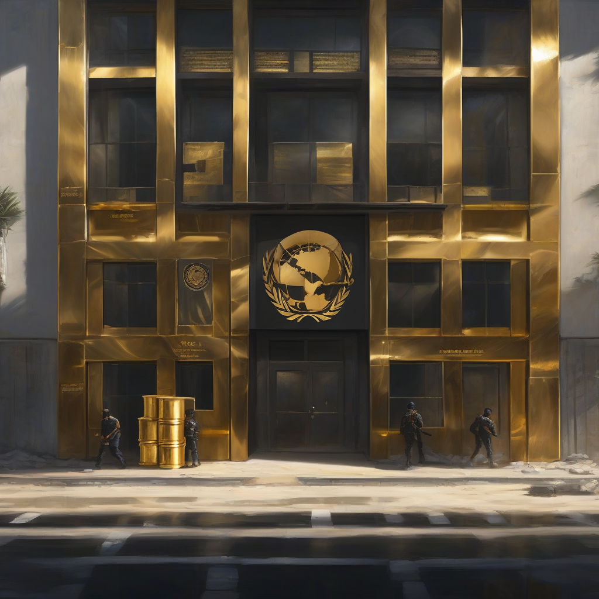
The deal reached the humanitarian sector on a Tuesday, through a LinkedIn connection request.
The request was from Philippe. The recipient was a woman named Claire, who worked at a mid-tier development consultancy in Brussels that specialized in "food security and livelihoods programming" across the Sahel and Horn of Africa. The consultancy had forty-two employees, an office near Schuman, and contracts with USAID, DFID, and the European Commission. It was, by the standards of the aid industry, credible.
Claire was not credible in the way that Raymond or Marcus understood credibility — she did not have contacts in Dubai or proximity to unnamed families. She was credible in the way that institutions understand credibility: she had published papers, managed multi-million-dollar grants, and spent seven years in and out of Niamey, Ouagadougou, and N'Djamena, coordinating food distribution to populations that appeared in Philippe's slides as "beneficiary communities" but who, in Claire's experience, were people with names, with children, with specific dietary needs, and with a well-documented wariness of foreign programs that arrived with spreadsheets and departed with data.
Claire accepted Philippe's LinkedIn request because Philippe's profile said "ESG Strategy | Sustainable Finance | Impact Investment | Carbon Markets," and Claire had been told by her director, in a staff meeting the previous month, that the consultancy needed to "diversify into carbon-linked programming" because the major donors were "shifting their frameworks."
Claire's director said "shifting their frameworks" with the resigned tone of a man who had watched donors shift their frameworks six times in fifteen years and understood that each shift generated new vocabulary, new application templates, new reporting requirements, and approximately the same amount of food delivered to approximately the same communities.
Philippe messaged Claire:
Hi Claire — I came across your work on food security in the Sahel. Very impressive. I'm involved in a sustainable transport corridor project with a significant humanitarian protein distribution component. Would love to discuss potential alignment with your programming. Would you be open to a call?
Claire agreed to a call.
The call lasted thirty-eight minutes. Philippe described the RMTC. He described the corridor — carbon neutral, regenerative grazing, 2,500 transport units, 30-day crossing. He described the terminus — full lifecycle utilization, sustainable protein, community distribution.
He did not say "donkeys."
He said "transport units." He said "livestock assets." He said "animal-mediated logistics."
These were not euphemisms; they were the vocabulary of a man who had learned that the same information, delivered in different register, traversed different gatekeepers. "Donkeys" was a WhatsApp word. "Livestock assets" was a consultancy word. The referent was identical. The audience was not.
Claire asked specific questions.
"What's the nutritional profile of the protein?"
"Approximately 20 grams of protein per 100 grams. Comparable to beef. We have a nutritional summary available."
They did not have a nutritional summary available. Philippe made a note to create one.
"Which communities are receiving the protein?"
"We're in discussions with local distribution partners. The corridor passes through several communities already served by WFP and UNHCR operations."
This was true in the sense that the corridor's proposed route — the red line on slide 7 — crossed through regions where WFP and UNHCR operated. It was not true in the sense that any conversation had occurred between the RMTC and either organization.
"Is there a cold chain?"
Philippe paused. He had not considered a cold chain. The protein — 287,500 kg of it, produced by the processing of 2,500 donkeys in a facility with a concrete floor and a generator — would be distributed in a region where ambient temperature exceeded 40°C for six months of the year and where the nearest cold storage was a UNICEF vaccine warehouse 200 kilometers from the terminus.
"Cold chain management is part of the Phase 2 planning," Philippe said.
"And Phase 1?"
"Phase 1 focuses on the transport corridor itself. The protein distribution is an integrated outcome, not a standalone program."
Claire wrote this down. In her notebook, beside the words "protein distribution," she wrote "integrated outcome (??)" with two question marks and an arrow pointing to the word "cold chain" which was followed by the word "TBD."
She had seen TBD programs before. The Sahel was built on TBD. Every program that arrived in N'Djamena or Niamey had a Phase 1 that was funded and a Phase 2 that was aspirational and a Phase 3 that was a fiction written to satisfy the logical framework of a grant application.
The protein distribution was Phase 3 vocabulary in a Phase 1 presentation.
But Claire did not say this.
She said: "This could be interesting for our SDG 2 programming."
What happened next is the mechanism that the storyteller described as "aid washing" — the process by which a commercial enterprise acquires humanitarian vocabulary and, with it, a secondary layer of legitimacy that protects it from the scrutiny applied to purely commercial ventures.
The mechanism operated in five steps:
Step 1: Philippe cited Claire's consultancy in his slide deck. Slide 14, under "Humanitarian Partners," now read: "[CONSULTANCY NAME] — Food Security & Livelihoods (Sahel)." Claire had not agreed to a partnership. She had agreed to a call.
Step 2: Claire mentioned the RMTC in an internal email to her director, describing it as "a carbon-neutral transport initiative with a food security component." Her director mentioned it in a meeting with a donor representative. The donor representative mentioned it in a program update email to Washington.
Step 3: Philippe heard, through Khalid's network, that "a USAID contact" had seen the RMTC concept. He added a new bullet to slide 3: "Interest from bilateral development partners."
Step 4: Claire received a follow-up email from Philippe asking if her consultancy would be willing to provide a "letter of interest" — not a commitment, not a partnership agreement, just a letter stating that the consultancy had reviewed the RMTC concept and found it "of potential interest from a food security perspective."
Claire discussed this with her director. Her director said it was "low risk." Claire drafted a letter. The letter was one page. It used the word "interest" three times and the word "commitment" zero times.
Step 5: Philippe attached the letter to the ESG deck. He created a new slide — slide 15A, inserted between the team page and the disclaimer — titled "HUMANITARIAN ENDORSEMENTS." The slide contained the consultancy's logo, the first paragraph of the letter, and a green checkmark.
The deal now had a humanitarian endorsement.
Not a partnership. Not a contract. Not funding.
An endorsement.
Which, in the ecosystem, was the same as all of these things, because the distance between a letter of interest and a partnership agreement was measured not in legal terms but in slide positioning. If it was on the slide, it was real. If it was under the heading "ENDORSEMENTS," it was an endorsement.
The slide made it true.
Claire knew something was wrong.
She knew it the way experienced aid workers always know — not from a specific data point or a smoking document, but from the texture of the conversation. The vocabulary was too smooth. The answers were too available. The Phase 2 was too vague. The cold chain was too absent.
She had worked in the Sahel for seven years. She had seen ambitious programs arrive with beautiful decks and innovative language and leave behind nothing but data collection forms and confusion. She had watched the vocabulary shift from "poverty reduction" to "resilience" to "climate adaptation" to "nature-based solutions" to "regenerative corridors," and she had noticed that the vocabulary changed faster than the outcomes.
The outcomes were always the same: some food was distributed, some reports were written, some communities were photographed, and a donor in Washington or Brussels or Geneva received a document suggesting that progress had been made.
Progress was made. It was always made.
But it was made in the documents, not in the villages.
Claire wrote a memo.
She wrote it for herself, on her own laptop, in a file she did not share. The memo said:
The RMTC appears to be a commercial commodity transport operation that has acquired humanitarian and ESG vocabulary to access legitimacy and, potentially, funding streams not available to purely commercial initiatives. The "protein distribution" component is real in the sense that animals transported across the corridor will be slaughtered at the terminus and the resulting meat distributed. Whether this constitutes a "humanitarian program" aligned with SDG 2 is a definitional question, not an operational one.
>
I am not comfortable with our consultancy's logo appearing on the ESG deck. I did not authorize this. The letter of interest I provided has been presented in a manner inconsistent with its intent.
>
Recommend: withdraw letter. Issue clarification. Monitor.
Claire showed the memo to her director. Her director read it, removed his glasses, and said: "This is not our problem."
The consultancy did not withdraw the letter.
The logo remained on the slide.
The storyteller did not know Claire's name. He did not know the consultancy. He did not know about the letter of interest or the memo or the director's response.
But he had predicted the mechanism.
He had predicted it because the mechanism was not specific to the donkey corridor or to Claire or to Philippe. It was a general feature of systems that generate legitimacy through vocabulary rather than verification. In such systems, the institutional actor — the consultancy, the NGO, the development bank — functions as a credibility laundry.
The commercial enterprise goes in dirty.
It comes out with a logo.
Somewhere in the Sahel, in a village that appeared on Philippe's satellite image as a cluster of pixels near the red line, a woman named Adama had not been consulted.
She would not be consulted.
She would, however, appear on slide 11 under "Community Stakeholders," represented by a stock photograph of an African woman carrying a water jug on her head.
The photograph was not of Adama.
But the jug was real.
It was always the jug that was real.
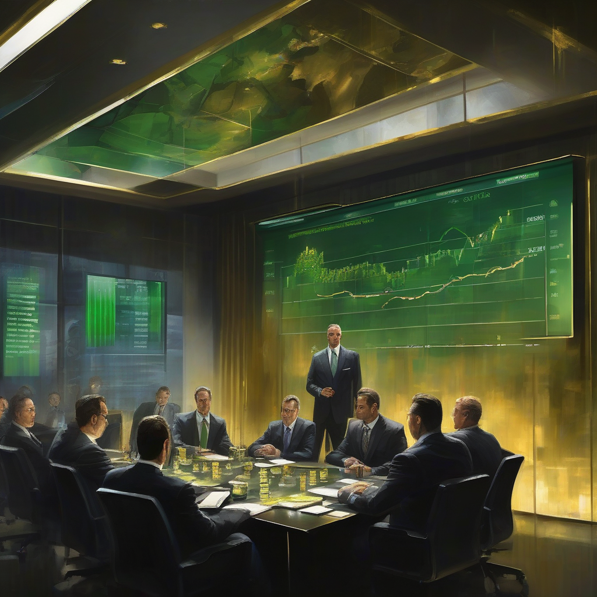
The deal reached the conference circuit in November, carried not by WhatsApp forward or email attachment but by lanyard.
The conference was called "COP Side Event — Scaling Nature-Based Solutions for Commodity Corridors." It was held in a hotel ballroom adjacent to the actual conference — not inside the official venue, because accreditation for the official venue required organizational credentials that neither Philippe nor Tariq nor any other participant in the RMTC could produce, but close enough that attendees could describe themselves as "presenting at COP" without technical inaccuracy.
The ballroom had seventy-two seats. Forty-one were occupied. The occupants were a mixture of ESG consultants, carbon market brokers, representatives of verification bodies whose names Philippe recognized from his Verra bookmarks, employees of impact investment funds that published quarterly letters with photographs of solar panels on their covers, and seven journalists — three from trade publications, three from climate blogs, and one from a newspaper in Zurich whose editor had sent her to cover the "financialization of sustainability," which she described privately as "watching bankers learn the word 'regenerative.'"
Philippe sat on a panel.
This was the culmination of a two-month campaign that Philippe had waged from his WeWork, sending forty-three emails to conference organizers across four events, proposing himself as a panelist on topics ranging from "Carbon-Neutral Logistics in Emerging Markets" to "Animal-Mediated Transport: The Next Frontier in Nature-Based Solutions." Forty-two emails went unanswered or were declined.
The forty-third was accepted, because the original panelist — a representative from a European development bank — had canceled due to a scheduling conflict, and the organizer needed a replacement by Thursday, and Philippe's email was at the top of the inbox, and the email contained the words "IPCC AR6" and "carbon-neutral corridor" and "2,500 livestock units," and the organizer was tired.
Philippe prepared for the panel the way he prepared for everything: with slides.
The panel was moderated by a woman named Dr. Imogen Hartley, who held a PhD in environmental economics from the LSE and consulted for three carbon registries and was, by the standards of the conference circuit, the real thing. She had published peer-reviewed papers. She had testified before a parliamentary subcommittee. She had once, in a moment of frustration during a panel at Davos, said to a hedge fund manager, "The offset market has the verification standards of a yard sale," and the quote had been reproduced in the Financial Times.
Dr. Hartley did not know Philippe. She had not seen the ESG deck. She had been given a one-paragraph bio:
Philippe [REDACTED] is the Strategic Director of a regenerative mineral transport corridor in the Sahel, focused on carbon-neutral livestock logistics, sustainable protein distribution, and nature-based carbon credit generation.
Dr. Hartley read this and made no notes. She had moderated forty panels. She could moderate this one without preparation, the way a conductor can conduct a piece without having heard the rehearsal, relying on the structure of the program and the reliability of the performers.
The panel had four speakers. Philippe was second.
The first speaker — a carbon market analyst from a London brokerage — discussed the voluntary carbon market's expansion into transportation offsets. He used the phrase "additionality concerns" eleven times. He had a chart showing projected VCU issuance through 2030. The chart went up and to the right.
Philippe was introduced. He stood. He held a printed copy of his slides, though the projector was displaying them behind him. He did not need the printout. He knew every slide by memory. He knew every number.
"Thank you, Imogen," he said. "I want to talk about a specific case study that I think demonstrates both the potential and the complexity of nature-based carbon offsets in the commodity transport space."
He told the story.
He told it cleanly — without WhatsApp emojis, without the "seven families," without the commission waterfall. He told it in the language of the conference: methodology, verification, baseline, additionality, leakage, permanence. He described the corridor. He described the carbon model. He showed the numbers:
- 3,800 tonnes CO₂e avoided (diesel replacement) - 620 tonnes CO₂e sequestered (regenerative grazing) - 190 tonnes CO₂e emitted (enteric methane) - 30 tonnes CO₂e emitted (processing) - Net: -4,200 tonnes CO₂e
He showed the SDG alignment table. He showed the protein distribution numbers. He showed the satellite image with the red line.
He did not show the footnote that said "Methodology: Proprietary."
He said instead: "We're currently in the process of submitting our methodology to Verra for independent review."
"Currently in the process" was doing structural work here. It was a phrase that covered every state from "we have not started" to "submission is imminent," the way the word "refinery-ready" covered every state from "we know a refinery exists" to "the gold is sitting at the loading dock."
Dr. Hartley asked the first question.
"Philippe, you mentioned three thousand eight hundred tonnes of avoided emissions from diesel replacement. Can you walk us through the baseline scenario? How did you establish that the cargo would otherwise have been transported by diesel trucks?"
Philippe adjusted his glasses but he did not wear glasses. He reached for his glasses and found only air, and this small physical error — this gesture from a life he did not live, the life of a man who wears glasses and pushes them up when asked hard questions — was visible to the storyteller, who was sitting in the fourth row, between a climate blogger and an empty chair.
"The baseline is derived from standard regional transport data," Philippe said. "A cargo of this weight and distance, in the Sahel corridor, would typically require forty-seven diesel truck trips. We used per-trip emissions estimates consistent with IPCC AR6 transportation benchmarks."
"And the cargo in this case is — mineral samples?"
"Correct."
"Gold?"
"The commodity itself is secondary to the transport model. What we're evaluating is the emissions avoidance of the corridor methodology."
This was the smoothest thing Philippe had ever said. It was the sentence of a man who had practiced, not in front of a mirror but in front of a spreadsheet, where the subject of the commodity could be minimized to a variable ("COMMODITY_TYPE") and the model itself became the subject.
Dr. Hartley nodded. She did not nod because she was satisfied. She nodded because the panel had a schedule, and the schedule required forward motion, and forward motion required nods.
The third speaker discussed certification timelines. The fourth speaker discussed investor appetite for nature-based credits. The panel concluded. There was a coffee break.
During the coffee break, Philippe was approached by three people.
The first was a representative from a small carbon credit brokerage in Copenhagen. He said: "Interesting model. We'd like to hear more about the credit timeline."
The second was a program officer from a Nordic development fund. She said: "We're tracking nature-based corridors for our next funding cycle. Can you send us the full proposal?"
The third was the journalist from Zurich. She said: "Can I ask you a few questions about the transport animals?"
Philippe said yes to all three.
He gave the carbon broker his email and the phrase "Q3 issuance target." He gave the program officer Philippe's deck — the full version, with the disclaimer on slide 16, but without the waterfall, because the waterfall was not a conference document. He gave the journalist twelve minutes.
The interview lasted twelve minutes. The journalist's name was Lena. She had a recorder and a notebook and a direct manner that Philippe was not accustomed to, because the ecosystem's questions were always structural ("What's the commission?" "Who has the BCL?" "Is the seller direct?") and never investigative.
"How many donkeys are in the corridor?" Lena asked.
"Twenty-five hundred."
"What happens to them at the end?"
"Full lifecycle utilization. Sustainable protein distribution."
"They're killed?"
Philippe had not heard this question before. Not in the WhatsApp groups, not in the email chains, not in the panel discussion. The question was so direct and so plain that it occupied a different intellectual space than any question the ecosystem had produced.
"The animals are processed at the terminus," Philippe said.
"Processed meaning slaughtered."
"That's one way to describe it."
"Is there another way?"
Philippe paused. He was not a man who paused. He was a man who had answers — precise, formatted, footnoted answers that slid through conversations the way a slide transitions to the next slide. But this question had no slide.
"The humanitarian protein component is a core pillar of the corridor's impact model," Philippe said. "Approximately two hundred and eighty-seven thousand kilograms of protein are distributed to underserved communities. This aligns with SDG 2."
Lena wrote this down. She wrote it down the way journalists write things down: looking at the notebook, not at the speaker, because looking at the speaker would create a relationship, and a relationship would complicate the transcription.
"Has any animal welfare assessment been conducted?"
"We're developing our animal welfare framework as part of the Phase 2 sustainability plan."
"Phase 2?"
"The current phase focuses on the transport corridor. Subsequent phases will incorporate broader welfare and environmental assessment protocols."
Lena looked up from her notebook.
"So no."
"We are committed to the highest standards of animal welfare within the operational constraints of the corridor environment."
Lena closed her notebook. She had what she needed. Not a scandal — the story was too strange for a scandal, too small for outrage, too embedded in the labyrinth of ESG vocabulary to produce a clean headline. But she had a story. Not the story Philippe wanted — the one about carbon-neutral innovation and SDG alignment and the frontier of nature-based solutions — but a different story. A quieter one. About the space between the slide deck and the desert.
She never published it.
Her editor said: "Who cares about donkeys?"
Philippe left the conference energized.
He had collected three business cards, a potential funding lead, and the specific confidence that comes from having spoken on a panel and not been exposed. The carbon model had not been challenged. The methodology had not been questioned beyond the standard level. The protein distribution — the slaughter — had been raised by a journalist who never published.
Philippe returned to his WeWork. He updated the deck. Slide 15B now read: "PRESENTED AT COP SIDE EVENT — NATURE-BASED SOLUTIONS PANEL." He added the logos of the conference and the moderating organization.
The deck was growing.
Not in length — it was still sixteen slides. But in density. Each slide now carried more logos, more endorsements, more evidence of institutional contact. The deck was accumulating the markers of credibility the way a passport accumulates stamps: not as proof that you belong in any one country, but as proof that you have traveled.
And in the ecosystem, travel was the credential.
The storyteller sat in the fourth row for the entire panel.
He did not ask a question during the Q&A.
He did not approach Philippe during the coffee break.
He watched the journalist close her notebook.
He watched the program officer accept the deck.
He watched the carbon broker exchange cards.
He made one note:
"The conference is a laundry. Not for money. For language. The deal enters in WhatsApp and exits in PDF. The structure is identical. Only the font has changed."
He put his notebook away.
He walked to the lobby.
His phone buzzed. A new WhatsApp group. Someone had added him.
He did not check which one.
He already knew the grammar.
It started, as these things do, with a question no one expected.
The storyteller — and we must call him that, because he was neither broker nor buyer nor seller, only someone who had listened long enough to understand the grammar — asked Raymond a simple question over coffee at a gas station Dunkin' Donuts.
"If you believe all of this, why would you not believe anything?"
Raymond stirred his coffee. "What do you mean?"
"I mean — if the gold is real, and the refinery slot is real, and the IMF is involved, and three sovereign governments have approved a humanitarian corridor, and seven families control global settlement — if all of that is true, then nothing I could say would be too absurd to add to the deal."
Raymond considered this. He did not disagree. In seventeen years of brokering commodities, he had never seen a deal too large to be plausible or too implausible to be pursued.
"So let me test that," the storyteller said. "What if the humanitarian corridor used donkeys?"
Silence.
"Twenty-five hundred donkeys. Walking across a desert. Carrying mineral samples. Carbon neutral transport. Zero-emission logistics. The donkeys graze as they walk — regenerative corridor. They stabilize the desert floor — erosion prevention. They produce methane — but we offset it with the carbon credits from the regenerative grazing. Net positive."
Raymond stared.
"And when they arrive," the storyteller continued, "full lifecycle utilization. Sustainable protein. Community distribution. Zero waste. Leather for local artisans. Bone meal for agricultural enrichment. The whole chain."
Gerald, who had been sitting quietly with a cruller, looked up.
"That's actually…"
He paused.
"ESG."
The room did not explode. There was no dramatic realization. No one leapt from their chair. What happened was worse: the idea settled into the existing architecture of belief as if it had always been there.
Because the ecosystem does not distinguish between layers of plausibility. It only measures narrative density.
And this had density.
Within twenty-four hours, the storyteller received a message from Marcus:
Bro. The donkey angle. My Dubai guy loves it. He says his carbon desk can structure it. Can you send a one-pager?
Within forty-eight hours, Raymond had added a line item to the commission waterfall:
ESG/Carbon Coordination: 0.25%
Within seventy-two hours, Gerald had forwarded a voice note to a group called "IMPACT INVESTORS — VERIFIED ONLY 🌍" that described, in breathless detail:
"A fully regenerative mineral transport corridor using 2,500 donkeys across the Sahel region, backed by sovereign authorization and aligned with IMF sustainable development frameworks."
Within one week, the donkeys had become real.
Not real in the sense that they existed.
Real in the sense that they had a commission structure.
And in this ecosystem, that is a higher form of existence.
The storyteller watched this happen with the focused attention of a man who had designed the experiment. He had introduced an absurdity — carefully, precisely, with the right vocabulary — into a system already saturated with absurdity. And the system had absorbed it without resistance.
Not because the brokers were stupid.
They were not stupid.
They were optimized.
Optimized for narrative integration. For commission capture. For the conversion of story into structure. They were, in their way, the most efficient machines the storyteller had ever encountered.
They did not evaluate truth.
They evaluated monetizability.
And the donkeys were monetizable.
The storyteller made a note:
"If you want to understand a system, don't study what it rejects. Study what it absorbs."
The 2,500 donkeys were absorbed in forty-eight hours.
The gold, after seventeen months, had still not been verified.
Draw your own conclusions.
Before the donkeys, before the parking lots, before the commission waterfalls and the WhatsApp forwards and the men in Tahoes dividing percentages of things that did not exist — the storyteller visited a vault.
It was in Zurich. Or near Zurich. The distinction mattered to cartographers and the Swiss, but not to the vault, which existed in the way that all financial infrastructure exists in Switzerland: discreetly, expensively, and behind a door that looked like another door.
The vault was underground. This was redundant information — most vaults are underground — but the storyteller noted it because the underground-ness of the vault was part of its performance. You descended. You passed through a door that a man in a grey suit unlocked with a key and a code. You descended further. You passed through a second door, heavier than the first, and entered a room that was cooler than the room you had left, and quieter, and cleaner, in the particular way that rooms housing gold are clean: not hygienic but reverent.
The gold was there.
This was the part that surprised the storyteller. Not the gold itself — he had expected gold — but the fact that it was there. Physically present. Dense. Warm in the way that dense metals are warm, which is to say not warm at all but heavy enough to suggest heat, the way a planet suggests gravity without requiring explanation.
The bars were arranged on pallets. Twelve-kilogram bars, nested in rows, stamped with refinery marks and serial numbers and purity certifications. Each bar was worth approximately $700,000 at the day's fix. There were sixty bars on the pallet the guide indicated.
$42 million, sitting on painted steel, in a room that smelled like nothing.
The guide was a woman named — or who introduced herself as — Margrit. She wore a navy blazer and flat shoes and spoke with the measured cadence of a person who had shown gold to visitors many times and had learned that silence was more impressive than commentary.
She did not say, "This is forty-two million dollars." She did not need to. The room said it for her. The temperature of the air said it. The weight of each bar, visible in the slight sag of the pallet, said it.
What she said was: "The provenance chain is documented in the accompanying certificates. Each bar carries a unique identifier traceable to the originating refinery."
The storyteller looked at the certificates. They were printed on heavy paper. They contained serial numbers, assay results, weight specifications, and the logo of a refinery he could not identify.
"Where does the gold come from?" he asked.
"The refinery is accredited by the LBMA," Margrit said.
"But before the refinery."
Margrit paused. It was a professional pause — not uncertainty, but a decision about how much to say. She said: "The mine of origin varies."
The storyteller looked at the bars. They were clean. Golden. They reflected the lights of the vault in soft curves.
Somewhere, these bars had been earth. They had been rock and soil and water and chemical reaction. They had been extracted by machines or by hands. They had moved — through middlemen, through countries, through documents and stamps and declarations — from the ground to this vault.
The bars did not remember the journey.
The certificates described it.
The storyteller wrote in his notebook: "The gold forgets. The paper remembers. But the paper was written by the middlemen."
Margrit led him back upstairs. Coffee was offered. Coffee was accepted. They sat in a room that was aggressively Swiss: blond wood, white walls, a window that faced a courtyard with a single tree.
"You're a writer," Margrit said. This was not a question; the storyteller had been introduced as such.
"Of sorts."
"What are you writing about?"
"The distance between the vault and the WhatsApp group."
Margrit considered this. She sipped her coffee. "I'm not sure I understand."
"The gold you showed me downstairs is real. I can see it. I can touch it. I could weigh it if you'd let me. But the gold that's traded in WhatsApp groups — the 500MT at twelve percent below LBMA, the sovereign programs, the humanitarian corridors — that gold is never seen. Never touched. Never weighed. And yet it generates more economic activity than the gold downstairs."
"Activity is different from value," Margrit said.
"Yes," the storyteller agreed. "That's exactly what I'm writing about."
The vault visit was the origin.
Not the origin of the book — the book came later — but the origin of the experiment. The moment the storyteller understood what he was looking at.
He had seen the real thing. Sixty bars on a pallet. Provenance certificates. An accredited refinery. An LBMA fix. A woman in a blazer who could walk him through the chain of custody with the precision of an accountant.
And he had seen the other thing. The WhatsApp forwards. The parking lot meetings. The commission waterfalls finalized before the product was confirmed. The voices on speaker claiming to be "close to the family." The PDFs of IMFPAs with the placeholder still reading "[PARTY B NAME HERE]."
Both systems operated using the same vocabulary. Doré. LBMA. Discount. CIF. Refinery-ready. BCL. POF. SPA.
The words were identical.
The referents were not.
In the vault, "refinery-ready" meant the gold had been processed and was physically present, certified, and traceable.
In the WhatsApp group, "refinery-ready" meant someone had typed "REFINERY CONFIRMED ✅" in all caps and forwarded it eleven times.
The gap between these two meanings was the entire subject of the book. Not the fraud — the storyteller did not think of it as fraud, not exactly — but the architecture of the gap. The engineering of belief that allowed the same word to mean two completely different things and for both meanings to coexist without collision.
Because they never collided.
The men in the Tahoe never visited the vault. Margrit never joined the WhatsApp group. The two systems — the real and the referential — operated on parallel tracks, using the same language, pointing at different objects, and never once confronting each other.
This was not a failure of the system.
It was the system.
The storyteller returned to Houston.
He did not immediately begin the experiment. He sat with it for three months, turning the idea like a stone in his hand, feeling its weight, testing its edges.
The idea was simple: introduce a variable into the referential system and measure how the system processes it. Not a subtle variable — not a slightly inflated volume or an incremental discount adjustment — but an absurdity. Something that should, by any rational metric, be rejected by the market.
He considered several options.
A gold deal transported by submarine. A platinum deal structured through a space program. A coltan deal routed through a cathedral.
None of these were absurd enough. The ecosystem had already absorbed submarines (there was a persistent rumor about a gold-laden U-boat in the South Atlantic). Space programs had been discussed at conferences. Cathedrals were irrelevant to the vocabulary.
The absurdity had to be proximate to the existing architecture. It had to use the right words. It had to fit the grammar.
The storyteller realized this on a Thursday afternoon, while reading a research paper on carbon-neutral supply chains, and the sentence appeared complete in his mind:
Two thousand five hundred donkeys, walking across a desert, carrying mineral samples, carbon neutral, ESG compliant, with full lifecycle utilization at terminus.
It was perfect.
It was perfect because it was not impossible. It was merely insane. And the ecosystem did not have a filter for insane — only for impossible. Nothing that was impossible was never proposed, and nothing that was proposed was ever impossible, because the ecosystem defined "possible" as "narratable."
The donkeys were narratable.
He tested the concept on Gerald first, though Gerald did not know he was being tested.
The storyteller met Gerald at a gas station. Gerald was eating a McChicken. The storyteller said, casually — the way a biologist introduces a pathogen to a petri dish — "Have you heard about this carbon-neutral mineral transport thing? Some people are using donkeys."
Gerald looked up. "Donkeys?"
"Twenty-five hundred of them. Walk across the desert. Zero emissions. Regenerative grazing. The whole corridor is ESG compliant."
Gerald chewed slowly. He was processing the information through the only filter the ecosystem had given him: monetizability.
After a long pause, Gerald said: "That's actually kind of smart."
The storyteller made a note.
He tested it on Raymond at the Dunkin' Donuts. He tested it on Marcus over the phone. He introduced it to the WhatsApp groups through a carefully worded forward that used every keyword in the ecosystem's vocabulary: IMF, sovereign, humanitarian, carbon neutral, ESG, LBMA, discount, corridor, verified.
The absorption was total.
Forty-eight hours.
The donkeys went from a sentence spoken over gas station coffee to a line item on a commission waterfall.
The experiment was complete.
But the book was not, because the storyteller had made a miscalculation. He had expected the system to process the donkeys abstractly — as a narrative, as a deal, as a commission structure. He had not expected the system to make them real.
Not real in the vault sense. Real in the spreadsheet sense. Real in the Philippe sense. Real in the sense that a man in Geneva would calculate their feed requirements and mortality assumptions and carbon offset coefficients and protein yields and present them on slides with charts and footnotes.
The storyteller had introduced an absurdity.
The system had optimized it.
And optimization, he discovered, was harder to watch than he had anticipated.
He never returned to the vault.
He never needed to.
He had seen the real thing once, and it had taught him everything he needed to know about the unreal thing.
The gap was not a flaw.
The gap was the product.
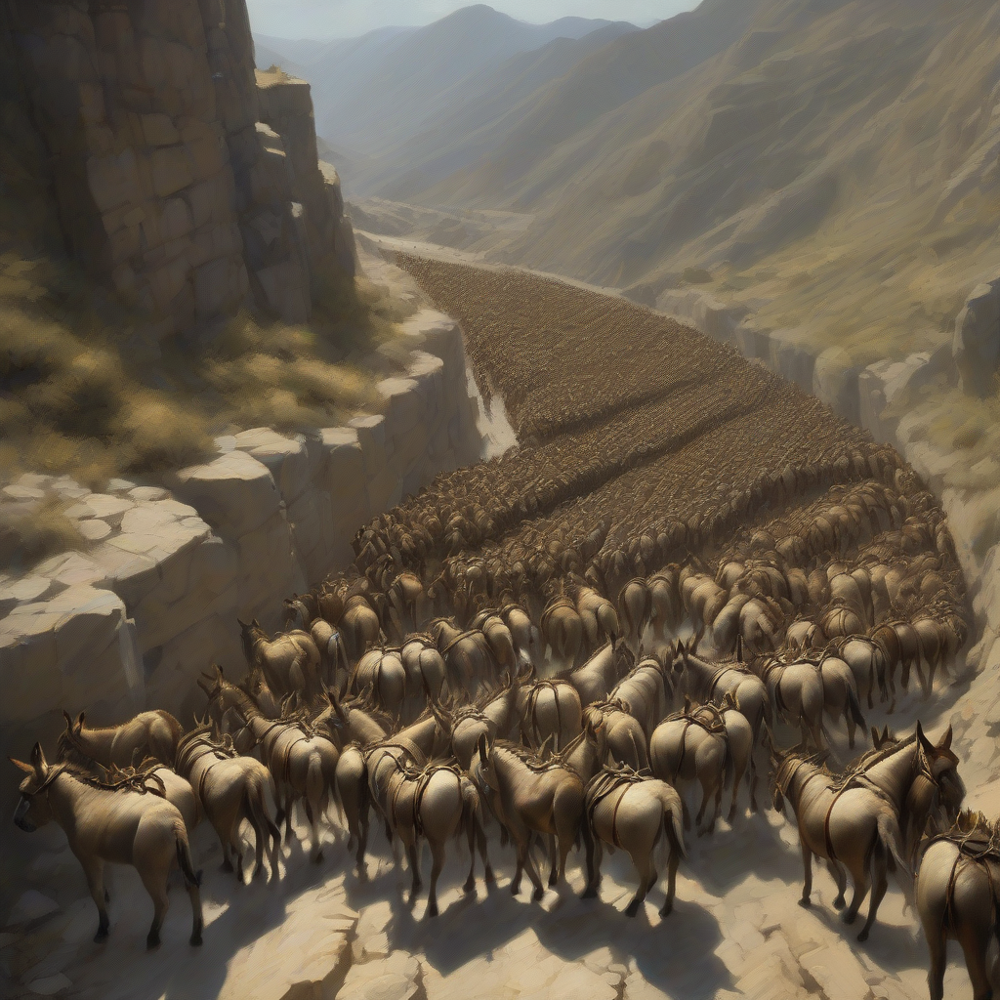
They departed at dawn.
Twenty-five hundred donkeys, arranged in columns of fifty, moving south-southwest across terrain that cartographers describe as "semi-arid transitional" and everyone else describes as "nothing."
The logistics had been structured by a man named Philippe, who operated from a shared WeWork in Geneva and had never personally touched a donkey, a mineral sample, or a desert. Philippe's contribution was a spreadsheet. The spreadsheet was magnificent. It contained:
- Donkey acquisition costs (Unit: $180 avg, Total: $450,000) - Feed projections (30-day corridor, 8kg forage/day/unit) - Water station intervals (every 47km, sourced from "existing NGO infrastructure") - Mortality assumptions (3.2% baseline, "adjustable per insurance tranche") - Carbon offset calculations (net: -4,200 tonnes CO₂e, "pending third-party verification") - Protein yield at terminus (est. 312,500 kg, "humanitarian distribution model")
The spreadsheet did not contain a line item for suffering.
Suffering was externalized. Like shipping. Like insurance. Like the weather.
Day 3.
The columns had stretched. The spaces between animals had widened as the stronger ones pulled ahead and the weaker ones drifted. From above — and Philippe had, in fact, commissioned satellite imagery, which he included on slide 7 of the ESG deck — the procession looked like a line of punctuation marks across an empty page.
Each dot was breathing.
The handlers — fourteen men hired locally at rates that did not appear on any commission waterfall — walked alongside with sticks they rarely used. The donkeys moved because donkeys move. It is what they are built for. They carry things across distances that would destroy machines. They do not complain. They do not renegotiate.
They are, in this way, the opposite of brokers.
Day 7.
Metrics update, forwarded to all stakeholders via WhatsApp:
CORRIDOR STATUS — DAY 7
Units active: 2,463
Units inactive: 37
Carbon offset accrued: -980 tonnes CO₂e (est.)
Protein reserve tracking: ON SCHEDULE
ESG compliance: MAINTAINED ✅
Humanitarian alignment: CONFIRMED ✅
"Units inactive" meant dead.
No one asked how they died. The spreadsheet had allocated for this. 3.2% mortality baseline. At day 7, they were at 1.48%. Below projection. Philippe noted this as a positive variance in his weekly summary.
"Outperforming mortality assumptions," the summary read.
Gerald forwarded it with a thumbs-up emoji.
Day 14.
The heat arrived as it always does in the transitional zone — not gradually, but as a fact. One day the air is dry. The next day the air is a wall.
The handlers adjusted pace. The water stations — which had been described in the logistics plan as "existing NGO infrastructure" — turned out to be two concrete cisterns and a hand pump maintained by a woman named Adama who had not been consulted about the passage of twenty-five hundred donkeys through her water supply.
She watched them drink. She said nothing. She had seen foreign plans pass through her village before. They always had spreadsheets. They never had enough water.
Day 21.
Units active: 2,341 Units inactive: 159
The mortality rate had crossed the 3.2% baseline and was now at 6.4%. Philippe revised the spreadsheet. He moved the baseline to 7%. The variance returned to acceptable.
This is how systems maintain coherence.
Not by confronting failure, but by adjusting the denominator.
The procession continued.
The sky did not change. The desert did not object. The commission waterfall remained finalized.
And in a parking lot in Houston, Raymond refreshed his email and said to no one in particular:
"The corridor is performing."
He did not know what the corridor looked like.
He did not need to.
The spreadsheet told him everything he needed to believe.
CONFIDENTIAL — DO NOT DISTRIBUTE Deal Reference: AU-DORE-500MT-DISCOUNT Date: [REDACTED] Status: FINALIZED (pending closure)
| Role | Party | Percentage | Est. Value (USD) | |---|---|---|---| | Buyer Mandate | [REDACTED] | 2.00% | $8,800,000 | | Seller Mandate | [REDACTED] | 2.00% | $8,800,000 | | Introducer A (Primary) | Raymond | 0.75% | $3,300,000 | | Introducer B (Dubai Desk) | Via Marcus | 0.50% | $2,200,000 | | Introducer C (Zurich Link) | [NAME PENDING] | 0.50% | $2,200,000 | | Compliance Facilitator | [REDACTED] | 0.25% | $1,100,000 | | Strategic Advisor | [UNNAMED] | 1.00% | $4,400,000 | | Gerald | Gerald | 0.25% | $1,100,000 |
Subtotal (Standard): 7.25% — $31,900,000
| Role | Party | Percentage | Est. Value (USD) | |---|---|---|---| | ESG/Carbon Coordination | Philippe (Geneva) | 0.25% | $1,100,000 | | Humanitarian Alignment Fee | [NGO LIAISON TBD] | 0.50% | $2,200,000 | | Regenerative Corridor Admin | [PENDING] | 0.25% | $1,100,000 | | Impact Bond Structuring | Dubai Carbon Desk | 0.15% | $660,000 |
Subtotal (ESG Layer): 1.15% — $5,060,000
| | Percentage | Est. Value (USD) | |---|---|---| | TOTAL | 8.40% | $36,960,000 |
1. All percentages calculated on gross transaction value at 12% discount below LBMA fix. 2. If discount adjusts to 18%, all percentages remain fixed; dollar values increase proportionally. 3. Gerald requested 0.50%. Structure was "locked" prior to his inclusion. Gerald accepted 0.25%. 4. "Strategic Advisor" has not been identified by name. Commission reserved by Raymond. 5. Humanitarian Alignment Fee added at Marcus's request. No NGO has been contacted. 6. Impact Bond Structuring fee added by Dubai Carbon Desk. No impact bond has been structured. 7. Philippe's ESG coordination fee is payable regardless of whether carbon credits are verified. 8. Total commission load exceeds the discount margin. This has not been discussed.
IMPORTANT: This waterfall is final. Do not redistribute. Do not modify. Do not add parties.
[This document has been modified 6 times since creation. Each version was described as "final."]
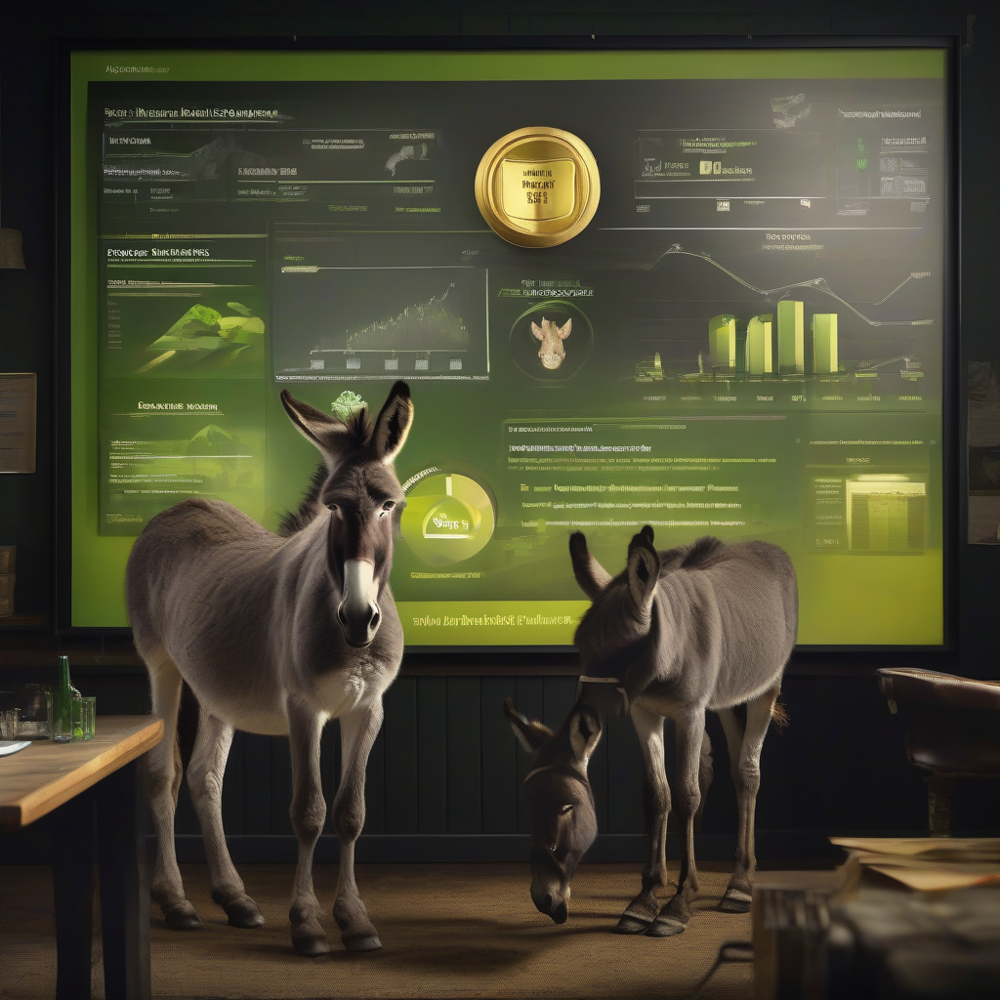
Documentary ArtifactRMTC — The Donkey Corridor Where Sustainability Meets Settlement
Prepared by: Philippe [REDACTED] Geneva | Dubai | [Third City Added for Credibility]
CONFIDENTIAL — ACCREDITED INVESTORS ONLY
Problem: Traditional mineral transport relies on diesel-powered vehicles, contributing to carbon emissions, habitat degradation, and community displacement.
Solution: A fully regenerative, carbon-neutral transport corridor utilizing 2,500 domesticated Equus asinus (donkeys) as primary logistics units.
Key Differentiators: - Zero-emission transport - Regenerative grazing along corridor (desert stabilization) - Full lifecycle utilization (zero waste at terminus) - Humanitarian protein distribution to underserved communities - Carbon credit generation through verified offset methodology
Projected Carbon Impact (30-Day Corridor)
| Category | CO₂e (tonnes) | |---|---| | Diesel transport avoided | -3,800 | | Regenerative grazing sequestration | -620 | | Methane emissions (donkey) | +190 | | Processing emissions | +30 | | Net impact | -4,200 |
Methodology: Proprietary. Based on adapted IPCC AR6 grazing coefficients with "organic mineral migration" adjustment factor.
Note: "Organic mineral migration" is not a recognized term in any IPCC framework. It was coined by Philippe on a Tuesday.
[Placeholder: Google Earth screenshot of Sahel region with red line drawn in PowerPoint]
Caption: "RMTC Pilot Corridor — Verified Regenerative Pathway"
Note: The red line was drawn freehand. It does not correspond to any planned or actual route. The satellite image is from 2019.
Revenue Streams:
1. Carbon Credits — Est. 4,200 credits × $45/credit = $189,000 2. Impact Bond Issuance — Target: $2.5M (Terms TBD) 3. Humanitarian Distribution Grants — Target: $500K (Applications pending, i.e., not submitted) 4. Sustainable Protein Sales — Est. 287,500 kg × $1.20/kg = $345,000 5. Leather & Byproduct Revenue — Est. $85,000 6. "Corridor Licensing" — Future revenue from licensing the model to other regions: $∞ (speculative)
Total Projected Revenue: $3,619,000 (excluding corridor licensing and hope)
Total Corridor Cost: $2,100,000 (estimated)
Projected Margin: 72% (if all revenue streams materialize, which they will not)
| SDG | Alignment | Evidence | |---|---|---| | SDG 2 — Zero Hunger | ✅ Strong | Protein distribution | | SDG 8 — Decent Work | ✅ Moderate | 14 handlers employed (wages below regional average) | | SDG 13 — Climate Action | ✅ Strong | Carbon offset (pending verification) | | SDG 15 — Life on Land | ✅ Strong* | Regenerative grazing | | SDG 17 — Partnerships | ✅ Aspirational | No partners confirmed |
\SDG 15 alignment was questioned internally, given that the corridor's "Life on Land" contribution involves the systematic termination of 2,500 land-based animals. The question was resolved by not discussing it further.*
Philippe [REDACTED] — Strategic Director Background: Shared WeWork, Geneva. Previously consulted on "three or four" ESG-adjacent initiatives. Has never touched a donkey.
[NAME TBD] — Carbon Desk Lead Background: Marcus's Dubai contact's carbon contact. Credentials: "He's good."
[NAME TBD] — Humanitarian Coordinator Background: To be hired. Role: To exist on the slide.
This presentation is for informational purposes only and does not constitute an offer to sell or a solicitation of an offer to buy any securities. Projections are forward-looking and subject to significant uncertainty. Carbon credit estimates are pending third-party verification. Humanitarian impact claims have not been independently assessed. The word "sustainable" is used in its most flexible interpretation. Past performance of donkeys is not indicative of future results.
[End of recoverable slides. Slides 2, 4, 6, 8, 10, 12, 13, and 15 were blank or contained only the word "TBD."]
Philippe's WeWork was on Rue du Rhône, which is to say it was in the most expensive corridor of the most expensive city in the most expensive country in western Europe, and Philippe's monthly desk fee was 890 Swiss francs, and his view was of a wall.
The wall was white. The desk was birch laminate. The chair was ergonomic in the way that all WeWork chairs are ergonomic: it adjusted, it swiveled, it suggested productivity without producing it. There was a succulent in a concrete pot on the windowsill, placed there by WeWork management and watered by no one.
Philippe sat at this desk approximately four days a week, from 9:30 in the morning to 6:15 in the evening, with a lunch break taken at a café two streets away where he ordered the same thing every day: a salade niçoise and a flat white. He tipped 10%, which in Geneva was considered either generous or foreign, depending on who was watching.
He was thirty-eight. He had an MBA from a university in Barcelona that no one in Geneva had heard of, and he listed it on his LinkedIn beneath a photograph in which he wore a navy turtleneck and looked slightly to the left of the camera, the way European executives do when they want to suggest that they are thinking about something strategic.
His LinkedIn headline read: "ESG Strategy | Sustainable Finance | Impact Investment | Carbon Markets."
Every word in this headline was true in the sense that Philippe thought about these things. None of them were true in the sense that Philippe had been paid to do any of them by an institution that could be located on a map.
Philippe's career before the WeWork was a sequence of adjacencies.
He had worked — briefly, for seven months — at a boutique consultancy in Lausanne that described itself as "an advisory firm specializing in sustainable investment strategies for family offices." The firm had three employees. One of them was the founder's wife. The office was an apartment.
Before that, he had spent two years at a fintech startup in Berlin that was building a platform for "tokenized carbon credit trading." The platform was built. It had a landing page, a white paper, and a Telegram channel with 3,200 members. It did not have users. It did not have carbon credits to tokenize. The startup ran out of funding on a Friday, and Philippe learned about it on the following Monday when his key card stopped working.
Before Berlin, there was a year in London at a fund of funds that focused on emerging market infrastructure. Philippe's role was analyst. His job was to read reports about infrastructure projects in countries he had never visited and summarize them in PowerPoint slides that a senior partner presented to investors Philippe had never met.
He was good at this.
He was good at PowerPoint.
This is not a metaphor. Philippe was genuinely, measurably, uncommonly good at building slide decks. He understood spacing. He understood data visualization. He understood the precise ratio of text to whitespace that made a number feel important without being scrutinized. He knew when to use a chart and when to use a table and when to use a single number, large, centered, in Helvetica, with a caption underneath that said something like "Net impact: -4,200 tonnes CO₂e."
The number did not need to be verified if it was presented correctly.
Philippe understood this the way a surgeon understands anatomy — not theoretically, but functionally. He could make any number feel real by controlling its environment. The font, the spacing, the footnote, the slide sequence — these were not decoration. They were infrastructure.
And in the ecosystem that Marcus introduced him to — distantly, through Khalid's contact's associate, who emailed Philippe a PDF of an IMFPA with a one-line introduction: "FYI — this might interest your desk" — Philippe found that his skill set was not merely useful.
It was the missing piece.
The gold deal did not need another broker. It had Raymond. It did not need another connector. It had Marcus. It did not need another peripheral body. It had Gerald.
What it needed was credibility.
Not personal credibility — the kind that comes from having closed deals, held licenses, or managed funds. It needed presentational credibility. The kind that comes from a deck. From a one-pager. From a document that looks like it was produced by a firm rather than by a man eating a McChicken in a Camry.
Philippe provided this.
Within seventy-two hours of receiving the IMFPA, Philippe had produced three documents:
1. A two-page executive summary titled "RMTC — Regenerative Mineral Transport Corridor: Impact Investment Overview." 2. A sixteen-slide ESG deck with carbon offset calculations, SDG alignment tables, and a satellite image from Google Earth with a red line drawn on it in PowerPoint. 3. A one-page "Carbon Registry Pre-Registration Summary" that referenced the Verra standard, cited IPCC AR6 coefficients, and included a table of emissions avoided, sequestered, and generated, netting to exactly -4,200 tonnes CO₂e.
No one had asked for these documents.
This is important.
No one had contacted Philippe and said, "We need an ESG deck." No one had said, "Can you structure the carbon offset narrative?" Philippe had produced them spontaneously, the way a spider produces silk — not because someone ordered a web, but because the spider is a web-producing organism, and the environment contained the right anchor points.
The IMFPA was the anchor point. The WhatsApp forward describing 2,500 donkeys on a carbon-neutral corridor was the anchor point. Philippe read these and his hands began to move across the keyboard, and within three days the deal had a deck, and the deck had charts, and the charts had numbers, and the numbers had footnotes, and the footnotes said things like "Methodology: Proprietary" and "Pending third-party verification."
The footnotes were the most honest part.
Everything was pending. Everything was proprietary. Everything was estimated, projected, assumed, or adapted.
But the deck looked real.
And in the ecosystem, looking real and being real occupy the same coordinate space.
Philippe's relationship to the gold was theoretical.
He had not seen the gold. He had not handled the gold. He did not know where the gold was. He was not certain the gold existed, though he had not asked this question directly and would not have known how to process the answer if it were negative.
His relationship to the donkeys was also theoretical.
He had not seen a donkey since a childhood trip to a petting zoo near Montreux, where a small grey donkey had bitten his sleeve and his mother had screamed and the zookeeper had laughed and said, "He likes you."
Philippe did not include this anecdote in the ESG deck.
What he included was:
- Donkey acquisition costs: $180/unit average, total $450,000 - Feed projections: 8kg forage/day/unit over 30-day corridor - Water station intervals: every 47km, sourced from "existing NGO infrastructure" - Mortality assumptions: 3.2% baseline - Protein yield at terminus: 312,500 kg
Each number was sourced. The sourcing was creative. The acquisition cost came from a FAO report on livestock markets in the Sahel. The feed projection came from an equine nutrition study conducted in Tunisia. The water station intervals came from a UNICEF report on rural water access in Niger, which did not mention donkey logistics but which did contain coordinates of water points that Philippe plotted on a map and measured the distances between.
The mortality assumption — 3.2% — came from nowhere. Which is to say, it came from Philippe's judgment about what a plausible mortality rate for a 30-day desert crossing would be, informed by nothing except a general sense that 3.2% was low enough to be credible and high enough to acknowledge reality.
When the actual mortality rate exceeded 3.2%, Philippe did what any skilled analyst would do: he adjusted the baseline. He moved 3.2% to 7%. The variance returned to acceptable.
This is not dishonesty. This is spreadsheet epistemology. In a spreadsheet, reality is a variable. The model is the constant. When reality deviates from the model, you adjust the variable. When you adjust the variable, the model is confirmed.
Philippe's spreadsheets were always confirmed.
He worked alone.
The WeWork had eighty desks. Approximately fifty were occupied on any given day. The occupants were startups, freelancers, consultants, and a man who appeared to do nothing but take phone calls in German and drink sparkling water. None of them knew what Philippe did. Philippe described his work, when asked, as "sustainable finance advisory."
No one asked follow-up questions.
This was one of the advantages of Geneva. In a city where every other person claimed to work in finance, specificity was neither expected nor desired. "I'm in sustainable finance" was sufficient. It was the verbal equivalent of Philippe's slide deck — it said enough to be credible and not enough to be scrutinized.
Philippe's daily routine was invariant:
9:30 — Arrive. Coffee from the communal kitchen. 9:45 — Check email. Check WhatsApp. Check LinkedIn notifications. 10:00 — Open Excel. Open PowerPoint. 10:15 — Begin.
"Begin" meant: update the models. The models were perpetual. They were not built for a specific deal; they were built for every deal. Philippe maintained a library of templates — carbon offset calculators, SDG alignment matrices, impact bond term sheets, ESG compliance checklists — that could be adapted to any commodity, any corridor, any arrangement of animals and minerals.
When the deal was gold, the model was gold. When the deal rotated to lithium, Philippe changed the commodity field, adjusted the tonnage, recalculated the logistics, and the deck was ready.
The model was agnostic.
The model did not know what it was optimizing.
It only knew how to optimize.
Philippe was not a bad person.
This is worth stating because the ecosystem does not produce villains. It produces specialists. Philippe was a specialist in the production of credibility artifacts — documents that convert uncertainty into structure. His skill was the same skill that powers consulting firms, investment banks, and think tanks: the ability to arrange information such that the arrangement itself becomes the argument.
He had never touched a donkey.
He would never touch a donkey.
He would produce spreadsheets about donkeys from a WeWork in Geneva until the deal rotated, and then he would produce spreadsheets about yaks, or llamas, or whatever organism the next corridor required.
The succulent on his windowsill had died two months ago.
He had not noticed.
The spreadsheet for the succulent had not been maintained.
The storyteller received Philippe's ESG deck via email, forwarded from Marcus, who had received it from Khalid, who had received it from someone in Philippe's peripheral network.
He opened it on his phone. He swiped through sixteen slides.
Slide 5 stopped him. The carbon model. The net -4,200 tonnes.
The footnote read: "Methodology: Proprietary. Based on adapted IPCC AR6 grazing coefficients with 'organic mineral migration' adjustment factor."
The storyteller had introduced the donkeys as an absurdity.
Philippe had given them a methodology.
"Organic mineral migration" was not a term that existed in any scientific literature, in any database, in any journal or report or standard.
Philippe had coined it on a Tuesday.
And it had a footnote.
And the footnote made it real.
They were purchased at three markets over four days.
The first market was in a town the storyteller will not name, because naming it would locate the corridor and locating the corridor would require confronting the specific geography of the specific desert that the specific animals crossed, and the ecosystem preferred its geography approximate.
The buyer — not the buyer of the gold, but the buyer of the donkeys, a man named Ibrahim who had been subcontracted through a chain of five intermediaries to "source livestock assets for the corridor initiative" — arrived at the first market at sunrise with a truck, a driver, and cash.
Ibrahim knew donkeys.
This is worth stating because Ibrahim was the only participant in the entire RMTC supply chain who possessed technical expertise relevant to the thing being accomplished. Raymond knew commission waterfalls. Marcus knew contacts. Philippe knew PowerPoint. Gerald knew the inside of his Camry. Ibrahim knew donkeys.
He knew which ones could carry forty kilograms for thirty kilometers. He knew which ones were sick by the way they held their ears. He knew which ones had been worked too hard by the calluses on their withers and which ones had been idle by the softness of their hooves. He knew what a donkey cost in the dry season (120-150 CFA francs per kilogram of body weight) and what a donkey cost in the wet season (80-100 CFA francs) and that the difference was not the donkey but the grass.
Ibrahim did not know about the IMFPA. He did not know about the commission waterfall. He did not know about the seven families, the BCL, the ESG deck, the carbon model, or the fifteen WhatsApp groups that had produced the instruction set he was now executing.
He knew that a man had given him $52,000 in cash — a portion of the $450,000 total acquisition budget, the remainder to be paid "upon completion of procurement" — and told him to buy donkeys.
"How many?" Ibrahim had asked.
"Twenty-five hundred."
Ibrahim had calculated. Twenty-five hundred donkeys, at an average cost of $180, was $450,000. He was holding $52,000. This was 11.6% of the total budget.
"The rest comes when?" he asked.
"After the first tranche is delivered to the staging point."
Ibrahim understood. He did not need the rest explained. In his world — the world of livestock markets and desert crossings and practical objects — partial payment followed by conditional release was standard. It was the same structure the gold brokers used, translated from banking vocabulary into cash-in-hand vocabulary.
The commission waterfall and the cattle market ran on the same grammar.
The first batch was 840 donkeys.
Ibrahim purchased them over two days. He walked through the market with a practiced eye, stopping at pens, speaking to sellers in Tamashek and Hausa and French, touching the animals' flanks the way a tailor touches fabric.
He rejected approximately one in three. Too old. Too young. Lame in the left foreleg. Eye infection. Pregnant — Ibrahim rejected pregnant donkeys not out of compassion but out of practicality: a pregnant donkey on a 30-day crossing was a logistics risk that no spreadsheet had accounted for.
Philippe's spreadsheet had not accounted for pregnant donkeys because Philippe did not know that donkeys could be pregnant. This is not a joke. It is a fact about the distance between the WeWork and the market.
The 840 were walked to a staging area — a flat stretch of packed earth near a well, bordered on two sides by thorn scrub and on the third by a road. Ibrahim's driver counted them. Ibrahim counted them again. The count was 840 on the first attempt and 838 on the second. Two had wandered.
They were found an hour later, eating thorn pods.
Donkeys eat thorn pods. This was another fact that Philippe's spreadsheet did not contain.
The second batch came from a market eighty kilometers south. 920 donkeys. Purchased over two days. Walked to the same staging area. The staging area now contained 1,760 animals, which produced a sound that the storyteller will attempt to describe, though the description will be inadequate:
Imagine 1,760 separate voices, none of them harmonious, each operating on its own schedule, each producing a sound that begins as a wheeze, extends into a bray, and terminates in a rasp that suggests both complaint and resignation. Now imagine this sound continuous — not as a single event but as an ambient condition, a sonic weather system that envelops the staging area and extends for approximately two kilometers in every direction.
This was the sound of the corridor before it moved.
Ibrahim slept on a mat near the well. He ate millet porridge. He did not have a phone. This is important: the one man in the entire supply chain who understood the product did not have a device capable of receiving WhatsApp forwards.
He had been given instructions by a man who had received instructions from a man who had received instructions from Marcus, relayed through Khalid, interpreted through a contact in Nouakchott, translated into operational language by an office that did not exist except as a phone number and a man with a leather satchel who spoke four languages and referred to himself as "the logistics coordinator."
The logistics coordinator's name has been lost. He appears in no document. He exists in no waterfall. His commission, if he received one, was paid in cash and left no trace.
He told Ibrahim: "Dawn. South-southwest. Thirty days. There will be water stations."
Ibrahim asked: "Whose water?"
"NGO. Existing infrastructure."
Ibrahim looked at the horizon. He had crossed this terrain before. Not with 2,500 donkeys — never with 2,500 donkeys; no one had crossed this terrain with 2,500 donkeys in living memory — but with smaller herds, in better seasons, when the water table was higher and the distance between wells was measured in hours rather than days.
"Existing infrastructure" meant cisterns. It meant hand pumps. It meant villages where women drew water for their families and their crops and their own animals, and where 2,500 additional mouths would arrive as a fact, not a request.
Ibrahim did not say this.
He said: "We leave at dawn."
Day 1.
The column formed in the half-light before sunrise.
Twenty-five hundred donkeys, arranged not in Philippe's imagined "columns of fifty" but in the loose, organic formation that animals naturally adopt when moved by handlers who understand that animals are not spreadsheet rows — a wide, irregular mass, perhaps 200 meters across at its widest, narrowing at the front where Ibrahim and two experienced men walked with sticks, and broadening at the rear where the youngest and weakest animals drifted.
Fourteen handlers in total. Each responsible for approximately 178 donkeys. Philippe's spreadsheet had allocated for fourteen handlers. This was one of the few numbers in his model that corresponded to reality, though the correspondence was coincidental: Philippe had chosen fourteen because the labor cost of fourteen handlers at $50/day for thirty days ($21,000) fit within his operating budget. Ibrahim had chosen fourteen because fourteen was the number of experienced men he could hire on four days' notice in the dry season.
The column moved.
The sound of it — the braying, the hooves on packed earth, the occasional sharp whistle from a handler — filled the space between the ground and the sky, which in the Sahel is a significant amount of space.
Ibrahim walked at the front. He did not look back. He had learned, in thirty years of moving animals across terrain that defied movement, that looking back was counterproductive. You set the direction. You maintained the pace. You trusted the handlers. And you watched the ground, because the ground was where the information lived — the hardness of the soil, the presence of thorns, the trace of moisture that indicated a seasonal creek bed, the tracks of other animals that indicated proximity to water.
The ground was a document.
Ibrahim read it fluently.
The first day covered eighteen kilometers.
Philippe's model projected twenty-five kilometers per day. Based on this projection, the corridor would be completed in twenty-four to twenty-six days. Based on Ibrahim's experience, the corridor would be completed in "however long it takes," which is a number that does not fit in a cell.
Eighteen kilometers. The animals were fresh. The heat was manageable — 34°C, which for the Sahel in this season was mild. No animals were lost. No handlers reported problems.
Ibrahim made camp at a dry riverbed he recognized from a crossing he had done seven years earlier with 300 goats. The riverbed had no water, but its banks provided shelter from wind, and the thorn scrub along its edges held enough browse for the animals to eat without depleting the area.
2,500 donkeys consuming 8 kilograms of forage each required 20,000 kilograms of browse per night. The riverbed's thorn scrub could provide approximately 3,000 kilograms. The remaining 17,000 kilograms would come from the animals' own reserves — fat and muscle built during months of grazing before purchase.
The animals were consuming themselves.
This was built into the model.
Philippe called it "metabolic corridor efficiency."
Ibrahim called it hunger.
That evening, Marcus sent a WhatsApp update to the stakeholder group:
CORRIDOR STATUS — DAY 1
Units deployed: 2,500
Distance covered: 25km (est.)
Carbon offset accrued: -127 tonnes CO₂e (est.)
All systems nominal ✅
The estimated distance was 25 kilometers, not 18. The actual number — 18 — had traveled from Ibrahim to the logistics coordinator to a contact in Nouakchott to Khalid's network to Marcus, and at each node, the number had been adjusted. Not falsified. Adjusted. Because 18 kilometers was below the projected daily target, and a below-target number on Day 1 would generate questions, and questions would generate doubt, and doubt was the only emission the corridor could not afford.
25 kilometers was above target.
Above target generated confidence.
Gerald replied: 👍
The donkeys slept standing up.
Or some of them did. Others lay down, folding their legs beneath them with the ancient patience of animals that have been carrying things across deserts since before the families, before the IMF, before the commission waterfall, before the first word was typed in all caps on a screen that glowed in a parking lot in Houston.
They did not know where they were going.
Neither did anyone else.
But the donkeys had the advantage of not pretending otherwise.
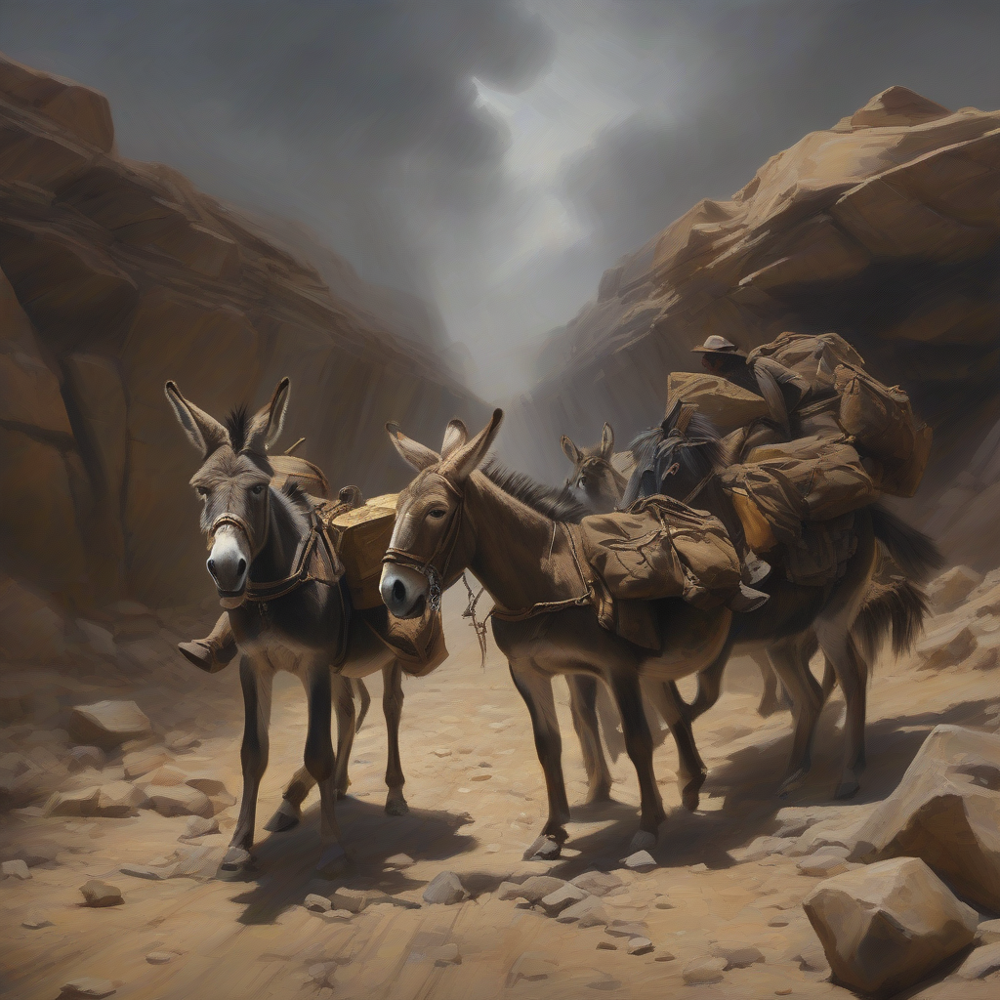
Day 2 was uneventful, which is to say: the column moved, the handlers worked, the donkeys walked, and nothing happened that would appear in a report.
Fourteen kilometers.
The pace had slowed, which Ibrahim expected and which the spreadsheet did not. Animals move faster on Day 1 than on Day 2, because Day 1 is departure and departure contains adrenaline — even donkeys have adrenaline, though they store it differently than brokers — and Day 2 is continuation, and continuation contains only itself.
Ibrahim did not send a report. He walked, and watched the ground, and drank water from a plastic jerry can he carried on his back, and ate millet paste that a handler named Moussa had prepared that morning in a tin pot over a thorn-wood fire.
The logistics coordinator received no update. Marcus received no update. Philippe received no update.
Philippe sent a WhatsApp message to the stakeholder group anyway:
DAY 2 STATUS
Corridor progression: on track
Estimated completion: Day 24-26
Carbon offset model recalibrating for terrain variables ✅
"Recalibrating for terrain variables" meant nothing. It was not connected to any recalibration. It was connected to the fact that Philippe had sent a Day 1 update and therefore needed to send a Day 2 update, because the rhythm of reporting, once initiated, becomes its own requirement. The update was not a description of reality. It was a unit of professional performance, identical in function to the morning email a mid-level manager sends to confirm that he is, in fact, working.
Gerald did not reply.
Marcus replied: "Looking strong 💪"
Day 3.
The first donkey died.
It was a grey female, approximately eight years old, carrying no load — the donkeys were not yet carrying loads; the loads would be added at a midpoint Philippe had designated as "the mineral ingestion waystation," which did not exist — and it died in the way that donkeys die on desert crossings: it slowed, it stopped, it folded its legs, and it did not get up.
Ibrahim knew it was dead before he reached it. He could see the posture from fifty meters. The particular geometry of a dead donkey — hindquarters collapsed, forelegs extended, head turned to one side — is unmistakable to anyone who has seen it before.
He had seen it before.
He knelt beside the animal. He touched its flank. He said nothing. He stood up. He gestured to Moussa, who understood the gesture and began redirecting traffic — the living donkeys — around the obstacle.
The column did not stop.
This is a fact the storyteller wants the reader to understand: the column did not stop. Twenty-four hundred and ninety-nine donkeys continued walking because that is what columns do. They absorb loss. They step around it. The dead animal became topography — a thing to navigate, not a thing to mourn.
Within four hours, the column had passed. The grey female lay in the Sahel sun, and by evening the vultures had found her, and by the following morning she was geometry — bones and hide arranged in the precise pattern that the desert assigns to things that stop moving.
Ibrahim updated his count.
2,499.
Marcus's Day 3 update:
CORRIDOR UPDATE — DAY 3
All units progressing
Distance: 55km cumulative (on target)
Weather: favorable
Next milestone: water station (Day 5-6) ✅
2,500 units. Not 2,499. Because the information about the grey female had not traveled from Ibrahim to Marcus. It had not traveled because there was no mechanism for it to travel. Ibrahim did not have a phone. The logistics coordinator had not checked in since departure. The chain of communication that connected the desert floor to the WhatsApp group was not a chain — it was a series of gaps bridged by assumption.
And the assumption was: nothing has changed.
In the ecosystem of the commodities deal, this assumption was not laziness. It was architecture. The entire system was built on the premise that reality would conform to the model until someone provided evidence otherwise, and the burden of evidence fell on the desert, which did not have WhatsApp.
Day 4.
Three more died.
Two of them were old — Ibrahim had hesitated at the market; they were cheap, $110 each instead of $180, and he had bought them because the budget was tight and the count was specific. Now they were numbers subtracted.
The third was young. Perhaps three years old. It died of what Ibrahim diagnosed, wordlessly, as colic — a twisted gut, a condition that could have been treated with veterinary intervention, if veterinary intervention existed within a 400-kilometer radius.
It did not.
2,496.
The column covered eleven kilometers on Day 4. The terrain had shifted from packed earth to loose sand, which cost energy. The handlers were tired. The donkeys were hungry. The thorn scrub had thinned.
Ibrahim said to Moussa, in Tamashek: "We need water by Day 6."
Moussa said: "The coordinator said Day 5 or 6. There are cisterns."
"Whose cisterns?"
"NGO. French. From the drought program."
Ibrahim did not ask which drought program. He did not ask when the cisterns had last been filled. He did not ask whether the NGO knew that 2,496 donkeys were approaching. He asked the only question that mattered:
"How far?"
"Forty kilometers."
Ibrahim calculated. At the current pace — twelve kilometers per day, declining — forty kilometers was three and a half days. Day 7 or Day 8. Not Day 5. Not Day 6.
He adjusted.
Adjusting, for Ibrahim, meant: wake earlier. Walk longer. Rest less. Push the animals past what they wanted to give but within what they could survive. The margin between "wanted to give" and "could survive" was the margin Ibrahim had been managing his entire professional life.
He did not write this down.
He had no paper, no spreadsheet, no deck. He had thirty years and a stick.
Day 5.
Seven donkeys did not rise when the handlers whistled at them before dawn.
Three of the seven were dead. The other four were what Ibrahim called "finished" — a word that in Tamashek carries a different weight than in English. In English, "finished" means completed. In Tamashek, as Ibrahim used it, "finished" meant: the animal has decided that it is done.
A donkey that has decided it is done cannot be made to undecide. Ibrahim knew this. The handlers knew this. The four finished donkeys would lie in the pre-dawn darkness until the column departed, and then they would be alone, and then the desert would process them in its own time.
2,489.
The losses were accelerating.
Philippe received no reports, which he interpreted as good news. In his experience — his experience of fintech startups, boutique consultancies, and fund-of-fund analyst desks — no news was good news. Silence meant systems were functioning. Silence meant the machinery was running within parameters.
He opened his spreadsheet. The corridor model showed 2,500 units progressing at 25 kilometers per day. Cumulative distance: 125 kilometers. Mortality: 0.0%. Carbon offset: -635 tonnes CO₂e.
The model was beautiful.
It was also, as of Day 5, wrong in every particular except the date.
The actual distance was 63 kilometers. The actual mortality was 0.44% — eleven animals. The actual carbon offset was a number that did not exist, because the carbon model was not connected to any measurement system, and the carbon offset of a dead donkey had not been calculated by anyone in any office in any city on any continent.
Philippe took a sip of his coffee. He looked at the wall. He did not know that seven animals had not risen that morning. He did not know that Ibrahim was rationing water. He did not know that the cisterns were forty kilometers away and the pace was declining.
He knew that the model was tracking well.
Day 6.
The heat arrived.
Not the ordinary heat of the Sahel, which was 34-37°C and manageable, but the deep heat that came in pulses from the northeast — 42°C at midday, 39°C at four p.m., 35°C at sunset — and that turned the sand into a thermal surface that radiated upward and cooked the animals from below.
Four more died. All from heat. Their bodies steamed faintly in the evening air as the column passed them in the late-afternoon light, and the handlers did not slow down because there was no slowing down.
2,485.
Distance covered on Day 6: nine kilometers. The lowest daily total yet.
Ibrahim stood at the front of the column at sunset and looked south-southwest. The cisterns were still twenty-eight kilometers away. At the current pace, that was three days. The animals needed water in two days. Some needed water now.
He had fifteen jerry cans of water. Each contained twenty liters. Three hundred liters total. An adult donkey in this heat required ten liters per day. He had enough water for thirty donkeys for one day, or 2,485 donkeys for approximately four minutes.
Three hundred liters. For 2,485 animals.
Philippe's spreadsheet had a line item: "WATER — Provided via existing NGO infrastructure along designated corridor route." Budget allocation: $0.
$0.
Ibrahim poured water into a canvas trough. He gave it to the weakest animals first — the young, the old, the ones whose heads hung low and whose eyes had gone dull. Twenty animals drank. It used eighty liters.
He sealed the remaining jerry cans.
The column made camp.
That evening, Marcus sent an update:
DAY 6 CORRIDOR STATUS
Progress: On schedule
Units: 2,500 active
Water: Secured via local infrastructure
Carbon: -762 tonnes CO₂e (cumulative)
Stakeholder briefing call tomorrow? LMK
Raymond replied: "Good. Tell Philippe to keep the carbon numbers updated. Buyers want to see the offset curve."
Gerald replied: 👍
Philippe replied: "Will update the model tonight. Looking at incorporating satellite imagery for third-party verification. Very exciting developments."
Philippe did not have access to satellite imagery. He did not have access to third-party verification. He did not know the column's location. He did not know that fifteen animals were dead. He did not know that Ibrahim had 220 liters of water remaining.
He had a spreadsheet and a WeWork and a wall.
The donkeys did not know about the spreadsheet.
They knew about the heat. They knew about the sand. They knew about the water, or the absence of water, which in a donkey's understanding is not an absence but a presence — the presence of thirst, which is a thing with weight and dimensions and duration.
Thirst, for a donkey, is not a metaphor.
In the WeWork, the corridor was a carbon offset. In the WhatsApp group, the corridor was a status update. In the IMFPA, the corridor was a clause. In the commission waterfall, the corridor was an asset class.
On the ground, the corridor was 2,485 animals walking south-southwest into heat, and a man with a stick and 220 liters of water.
The gap between these descriptions was the experiment.
The storyteller watched it widen.
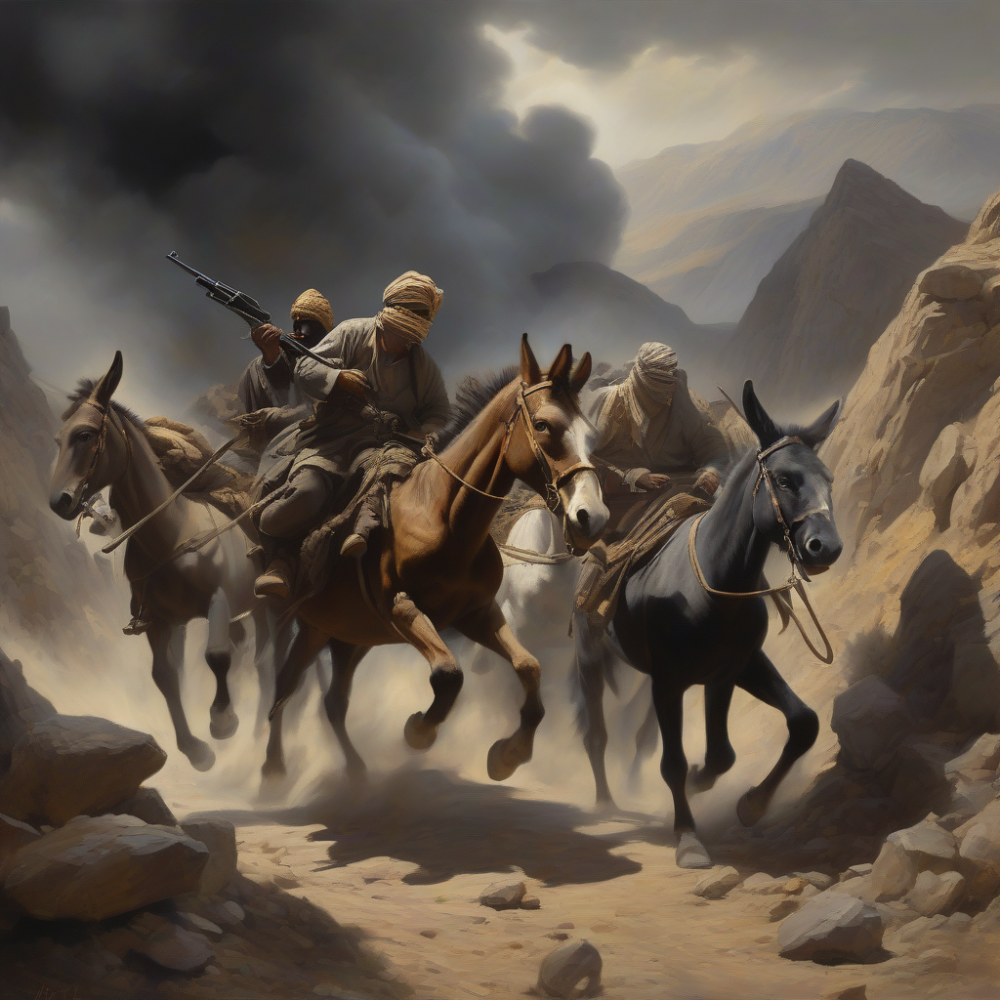
The men appeared on Day 9.
There were eleven of them. They came from the east, on foot, emerging from the heat shimmer in a line so casual it might have been a family walking to market if the family had been carrying Kalashnikovs and if the market had been 200 kilometers from the nearest road.
Ibrahim saw them first. He had been watching the eastern horizon since Day 7 because he knew this stretch of terrain the way an actuary knows a risk table — by its history. The corridor the column was traveling had been used for centuries: first by salt caravans, then by colonial supply routes, then by smugglers, and now by the donkeys of the RMTC corridor initiative. Each of these uses had been taxed.
The salt caravans paid passage to the Tuareg. The colonial routes were secured by garrisons. The smugglers paid whoever controlled the territory that week.
The donkeys would pay.
Ibrahim stopped walking. He raised his hand. The handlers, spread across 200 meters of desert, saw the hand and understood. The column slowed. It did not stop — 2,461 donkeys cannot be stopped like a car; they can only be gradually dissuaded from motion — but it compressed, the animals bunching as the handlers closed inward, creating a tighter formation.
2,461.
In nine days, thirty-nine donkeys had died. Philippe's model, which had been updated that morning from the WeWork, showed zero losses. The gap between 2,461 and 2,500 was thirty-nine animals. The gap between Philippe and Ibrahim was approximately 4,700 kilometers, a number that is both a distance and a description of an epistemological problem.
The eleven men approached.
Their leader — the storyteller uses this word provisionally; leadership in these formations is fluid, contextual, often renegotiated by the hour — was a man of perhaps forty, thin in the way that men who live in the desert are thin, which is different from the way men who diet are thin. His thinness was structural. His body had been edited by the terrain until only the necessary remained.
He carried no weapon. The weapon was carried by the man behind him, which was either a delegation of function or a performance of authority. In either case, the message was clear.
Ibrahim walked forward to meet him.
This is how negotiations work in the open desert: two men walk toward each other across a space that neither controls, and the distance between them narrows until they are close enough to speak but not close enough to touch. The gap — perhaps three meters — is both a safety margin and a grammar. It says: We are here to talk. We are not here to fight. But we could fight.
They spoke in Tamashek.
The storyteller does not speak Tamashek. The storyteller was not present. The storyteller has reconstructed this conversation from Ibrahim's account, which was given weeks later, in French, to an intermediary who relayed it in Arabic to a contact who mentioned it in English, in passing, to a person who was not looking for it but recognized it as data.
The conversation, as reconstructed:
The man asked: "Whose animals?"
Ibrahim said: "They belong to a project."
"What project?"
"A transport project. Corridor."
"Corridor to where?"
"South."
"South is a direction, not a destination."
Ibrahim said nothing. The man looked at the column — the 2,461 donkeys compressed into a rough rectangle of animal flesh and dust, the handlers standing at the edges with their sticks, the jerry cans (now down to eight) strapped to the back of a donkey that Ibrahim had designated as the water carrier.
"Twenty-five hundred," the man said.
"Less," Ibrahim said.
"Less by how many?"
"Thirty-nine."
The man nodded. He did not express sympathy. Sympathy was not the grammar they were using.
"Twenty-five hundred donkeys require passage," the man said.
"They do."
"Passage costs."
"It does."
The negotiation lasted forty minutes.
The price was settled at $4,200 — approximately $1.70 per surviving donkey — plus twelve animals from the herd. The twelve animals would be selected by the man's group, not by Ibrahim. This was standard. The tax collector chooses the tax.
Ibrahim did not have $4,200. He had $3,100 remaining from the operational cash he'd been given. He offered the $3,100 plus fifteen donkeys instead of twelve.
The man considered. He conferred with two of his men in a dialect Ibrahim could follow but chose not to visibly follow, because understanding a language you are not supposed to understand is a tactical resource, not a conversational one.
They accepted.
$3,100 and fifteen donkeys.
Ibrahim counted out the bills. They were American hundreds and fifties, folded in a plastic bag that he kept in the waistband of his trousers. He counted them on the ground, in the shade of a donkey, which is perhaps the most precise image the storyteller can offer of the distance between this transaction and the ones that occurred in WhatsApp groups with names like "RMTC GOLD — AUTHORIZED BROKERS ONLY 🔑."
The man took the money. He counted it. He nodded.
His men walked through the herd and selected their fifteen donkeys with an expertise that Ibrahim recognized and respected: they chose the healthiest, the youngest, the strongest. Not the cheapest. Not the most available. The best.
The tax collector was a better evaluator than the buyer.
The column resumed with 2,446 animals.
Ibrahim was now operating without cash. His water supply was six jerry cans — 120 liters. He was twelve days into a crossing that was supposed to take twenty-five and had covered approximately 110 kilometers of a projected 750.
He did not send a report.
The logistics coordinator was unreachable — his phone number, when dialed from a handler's phone that evening, produced a recording in French that said the number was not allocated.
The man who had given Ibrahim $52,000 in cash was also unreachable. He had given the cash, explained the route, and vanished into the architecture of the deal, which consumed people the way the desert consumed donkeys — gradually, invisibly, and without producing a body that could be counted.
Marcus did not know about the bandits.
This is not a failure of communication. It is the system functioning as designed. The information architecture of the RMTC corridor initiative was not built to transmit bad news upward. It was built to transmit confidence downward. The WhatsApp groups, the status updates, the ESG reports, the carbon model — these were not information systems. They were confidence systems. And confidence, unlike information, flows in one direction.
Marcus sent his Day 9 update:
🚀 CORRIDOR UPDATE — DAY 9
Units: 2,500 (full complement)
Distance: 225km (on target)
Carbon offset: -1,143 tonnes CO₂e
Weather holding. All green. ✅
Next milestone: midpoint (Day 12-13)
The actual distance was 110 kilometers. The actual unit count was 2,446. The actual carbon offset was a number that did not exist. The weather was 43°C with a wind from the northeast that felt like opening an oven.
Raymond replied: "Philippe — need the carbon curve for investor deck. Can you break it down by daily increment?"
Philippe replied: "Already on it. Will send updated model by EOD Geneva time."
Gerald did not reply.
Gerald was in his car in a Walmart parking lot in Katy, Texas, eating a McChicken. It was 11:47 a.m. Central time. The McChicken cost $1.29. Gerald ate it methodically, without haste, with the same attention to routine that Ibrahim applied to water rationing, though the stakes were different.
Gerald's phone buzzed.
He looked at the WhatsApp notification. He saw Marcus's update. He read it. He put the phone down.
He finished the McChicken.
He did not think about the donkeys. He did not think about bandits. He did not think about Ibrahim. He did not think about these things because he did not know about these things, and because the architecture of the deal had been constructed so that Gerald would never need to know about these things.
Gerald's function was to exist. To be a name on a waterfall. To reply 👍. To eat McChickens. To drive his 2014 Camry with 142,000 miles — now 143,200 miles — back to a house where Cheryl was making dinner and the girls were doing homework and the insurance certificates on the wall proved that he was a person who sold insurance, not a person who was 0.25% of a deal that had just paid $3,100 in cash and fifteen donkeys to men with Kalashnikovs.
Gerald's ignorance was not bliss.
It was structural.
The storyteller pauses here to note a structural parallel.
In the IMFPA — the document that initiated the entire chain — there is a clause labeled "FORCE MAJEURE." The clause reads:
Neither party shall be liable for delays, failures, or interruptions caused by acts of God, natural disasters, civil unrest, government action, or other events beyond reasonable control.
The eleven men with Kalashnikovs were, in the vocabulary of the IMFPA, a "force majeure event." They were "beyond reasonable control." They were "civil unrest," or "other events," or simply an unnamed clause that absorbed the reality of men in a desert extracting value from a process that was itself an extraction.
The IMFPA had anticipated them.
Not specifically — the drafters of the IMFPA had not imagined eleven men in the Sahel. But structurally, grammatically, the IMFPA had created a space for them. The force majeure clause was a container for everything the deal could not control, and it was infinite. It could hold bandits. It could hold weather. It could hold mortality. It could hold the death of thirty-nine donkeys and the taxation of fifteen more and the loss of $3,100 in cash and the disappearance of a logistics coordinator.
It could hold all of this, and the deal would continue.
Because the deal was not about the donkeys.
The deal was never about the donkeys.
Ibrahim walked through the column that evening, counting.
He touched each animal he passed — a hand on a flank, a palm on a neck, a finger tracing the ridge of a spine. He was reading. Each body was a text. The fat reserves, the muscle tone, the skin elasticity — these were data points that no spreadsheet contained.
He finished counting at dusk.
2,446.
He said the number aloud, to the air, in Tamashek.
It was the most accurate number in the entire RMTC supply chain.
And no one would ever record it.
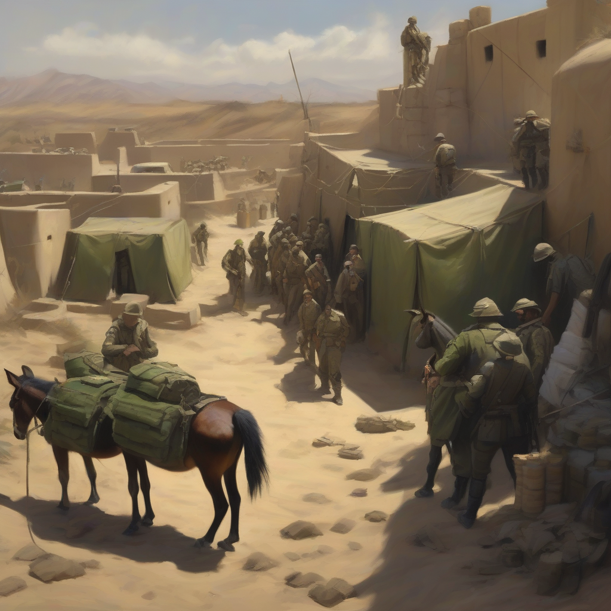
The cisterns appeared on Day 12, not Day 5 or 6.
They were concrete. French-built. Part of a drought-response program from 2009 that had been funded by the European Development Fund, implemented by a French NGO whose name appeared in faded blue paint on the side of the largest cistern, and maintained by no one.
There were four cisterns. Each had a capacity of 10,000 liters. Total theoretical capacity: 40,000 liters.
Actual water present: approximately 6,000 liters, distributed unevenly across three of the four cisterns. The fourth was cracked along its base and had been empty for what appeared, based on the sediment pattern, to be years.
6,000 liters.
2,446 donkeys at ten liters per day required 24,460 liters per day.
6,000 liters was roughly six hours of water.
Ibrahim looked at the cisterns. He looked at the column, which had arrived at the cisterns in the early afternoon and had spread across the area like a stain, the animals pushing toward the water with the single-minded urgency of organisms that have been rationed for six days.
He did not try to control the rush.
He let them drink.
The village was 600 meters from the cisterns.
It had a name. The storyteller will use it, because defending the village's anonymity would erase the village's existence, and erasing the village's existence would replicate the precise gesture that Philippe's spreadsheet had already performed.
The village was called Tin Essako.
It had forty-three households, approximately 280 people, a school with one teacher, a health post that was unstaffed, three wells, and a woman named Adama who managed the water.
Adama was not the chief. She was not the elected representative. She was not the women's association president, though there was a women's association, and she was a member. She was, simply, the person who managed the water, because managing the water required a specific combination of knowledge, authority, and endurance that Adama possessed and that no one else in the village wanted.
She knew the depth of each well. She knew the seasonal variation — which wells dropped in March and which held until May. She knew the flow rate of the hand pump at the central well (approximately 12 liters per minute when the seals were intact, 7 liters per minute when they were worn, which was most of the time). She knew how many liters each household needed per day, and she allocated accordingly, with a system that was unwritten but precise.
Adama had been managing the water for eleven years.
Her system had survived two droughts, one pump failure, and a period in 2014 when the village population temporarily doubled due to displacement from the north. She had managed the 2014 crisis by extending collection times, rationing household allocations, and negotiating with a neighboring village to share their deeper well in exchange for labor during the harvest.
She had not needed a spreadsheet.
She had not needed a deck.
She had needed forty-three conversations conducted over three days, each one specific, each one calibrated to the household's size and needs and willingness to cooperate, and at the end of the three days, the water had been sufficient.
She heard the donkeys before she saw them.
The sound — the braying of 2,446 animals amplified by the flat terrain — reached Tin Essako like weather. The children heard it first. Then the adults. Then Adama.
She walked to the cisterns.
What she saw was this: animals everywhere. A sea of grey and brown bodies moving toward the concrete structures, pressing against each other, the strongest reaching the water first and the weakest waiting in the outer rings, and the handlers — exhausted, dusty, thin — directing traffic with sticks and whistles.
Adama counted.
She did not count to 2,446. She estimated. She had spent eleven years estimating volumes — water volumes, livestock volumes, human need volumes — and her estimates were reliable. She looked at the mass of animals and said to herself a number that was close to 2,400.
Then she looked at the cisterns and did the math that Ibrahim had already done.
6,000 liters. 2,400 animals. Not enough.
She looked at Ibrahim.
Ibrahim looked at her.
They did not speak immediately. There is a moment, in encounters like this, where the recognition precedes the conversation — where two people who manage scarce resources in difficult terrain understand each other before language begins.
Adama spoke first, in Tamashek: "Where are they going?"
"South."
"How many days?"
"Thirteen more. Maybe fifteen."
"The cisterns won't hold."
"I know."
"The wells won't either."
"I know."
"Does anyone else know?"
Ibrahim considered the question. It was, in its way, the most important question anyone had asked about the RMTC corridor initiative. Not "Is the gold real?" Not "Is the commission structure viable?" Not "Will the carbon offsets be verified?" But: Does anyone else know?
"No," Ibrahim said.
Adama made a decision.
The storyteller wants to describe this decision carefully, because it contains within it a critique more precise than anything the storyteller has offered, and the critique is not verbal. It is behavioral.
Adama decided to share the village's water.
Not the cistern water — that was already being consumed by the donkeys, and it would be gone by nightfall. But the village water. The well water. The water that Adama managed, that the forty-three households depended on, that the children drank and the women used for cooking and the gardens needed and the goats required.
She decided to share it because the donkeys were animals, and animals need water, and refusing water to animals in the desert is not something Adama was willing to do.
She decided to share it knowing that sharing would create a deficit. That the deficit would last days, perhaps a week. That the deficit would mean shorter collection times, reduced household allocations, dry gardens, thirsty goats.
She decided to share it knowing that no one had asked her. No one from the corridor initiative, from the WhatsApp groups, from the IMFPA signatories, from the commission waterfall — no one had contacted her, consulted her, compensated her, or acknowledged that she existed.
She was not in the model.
She was not in the deck.
She was not in the waterfall.
She was a woman with water, and the corridor had assumed her.
The sharing took two days.
Adama organized the village women — eight of them — to draw water from the central well and the eastern well (the southern well was too shallow, already dropping) and carry it in plastic jerricans to a distribution point near the cisterns.
Each jerrican held twenty liters. Each trip — from well to distribution point — was 600 meters. Eight women, carrying one jerrican each, making six trips per hour, produced 960 liters per hour.
In twelve working hours, they produced 11,520 liters.
Over two days: 23,040 liters.
It was not enough. It was never going to be enough. But it was water, and it extended the column's stay at Tin Essako from one day to two, and in those two days, the weakest animals recovered enough to continue, and Ibrahim's handlers slept for the first time in four days, and Ibrahim himself sat in the shade of a cistern and ate millet porridge that Adama's daughter had brought, and he said, "Thank you," in Tamashek, and Adama said, "How many have you lost?"
"Fifty-four," Ibrahim said.
2,446.
"You said fifty-four," Adama said. "That's 2,446."
"Yes."
"The paper said 2,500."
Ibrahim looked at her. "What paper?"
Adama went inside her house. She came back with a rectangular piece of paper — A4, creased, slightly dusty. It was a printout. It had been left at the village by the logistics coordinator three weeks earlier, when he had passed through en route to somewhere else and had dropped off "advance materials for the corridor stakeholder engagement process."
The printout was page 4 of Philippe's ESG deck.
It showed a map. A dotted line. A number: 2,500. A phrase: "ORGANIC MINERAL TRANSPORT CORRIDOR (RMTC)." A logo: the carbon offset initiative. And a note at the bottom, in 8-point font: "Community water infrastructure along corridor to be utilized per local engagement protocols."
"Per local engagement protocols."
Adama had not been engaged. No protocol had been followed. No protocol existed. The phrase "per local engagement protocols" was not connected to any engagement or any protocol. It was connected to a slide, which was connected to a deck, which was connected to a WeWork, which was connected to a man who drank coffee and looked at a wall and did not know that Adama existed.
"Per local engagement protocols" was architecture.
Adama was not inside it.
She was underneath it.
The column departed Tin Essako on Day 14.
2,438 donkeys. Eight had died at the cisterns — not from lack of water but from drinking too fast after prolonged deprivation, a condition that Ibrahim had tried to prevent but could not entirely prevent with 2,446 animals and fourteen handlers.
Adama watched them go.
The column moved south-southwest, away from the cisterns, away from the wells, away from the village. The sound diminished. The dust settled. The children returned to the school. The women began the work of recovery — measuring the wells, assessing the deficit, calculating how long the reduced water table would last.
Three weeks, Adama estimated. They would be short for three weeks. The gardens would suffer. Two families with goats would need to take their animals to the neighboring village's well. The children would be given smaller rations.
The cost of the corridor's passage through Tin Essako was three weeks of water stress for 280 people.
This cost appeared nowhere in the model.
Philippe, that afternoon, added a slide to the deck.
The slide was titled: "COMMUNITY ENGAGEMENT — CORRIDOR STAKEHOLDER UPDATE."
It contained a stock photograph of a smiling African woman carrying a water container on her head. The source of the photograph was a stock image website. The woman in the photograph was a model in Kenya. She had no connection to Tin Essako, to Adama, to the corridor, or to water management.
Below the photograph, Philippe had written:
RMTC Corridor Initiative — Community Water Partnership
Local stakeholders have been engaged per established protocols
Water infrastructure integrated into corridor logistics plan
Zero community complaints received ✅
Zero community complaints received.
This was true. No complaints had been received. But no complaints had been received because no complaints mechanism existed, because no engagement had occurred, because no one in the corridor initiative knew that Adama existed or that her village had provided 23,040 liters of water to 2,446 donkeys or that 280 people would be water-stressed for three weeks.
Silence is not consent.
Silence is not absence.
Silence, in the architecture of the corridor initiative, was data — and the data said: everything is fine.
Adama's daughter, who was sixteen and attended the school and wanted to study engineering in Bamako, asked her mother that evening: "Why did you give them water?"
Adama thought about this.
"Because they were thirsty," she said.
Her daughter waited.
"And because no one else was going to," Adama said.
This was the most expensive sentence in the entire RMTC corridor initiative. It cost 23,040 liters and three weeks of deficit and it appeared in no ledger and it earned no commission and it offset no carbon.
It was, the storyteller notes, the only transaction in the entire deal that delivered what it promised.
Day 15.
Moussa quit.
He did not announce his resignation. He did not submit a letter. He did not negotiate severance or request a reference. He woke before dawn, rolled his mat, drank water from one of the four remaining jerry cans, and walked north.
Ibrahim watched him go.
He did not try to stop him. Moussa had been walking for fifteen days, managing approximately 180 donkeys per shift, sleeping three hours per night, eating millet and dried pasta when either was available, and drinking less water than the animals. He was forty-six years old. His feet were cracked. His lips were split. He had not spoken to his family since the departure.
He walked north, and the desert absorbed him, and by mid-morning he was a dot, and by noon he was gone.
Thirteen handlers.
Two more quit on Day 16. They left together, before dawn, without speaking to Ibrahim. They took their mats, their water bottles, and their pay — $50 per day, fifteen days, $750 each, paid in cash from money Ibrahim no longer had. He owed them. He would owe them for a long time.
Eleven handlers.
Eleven handlers for 2,412 donkeys. Each handler now responsible for 219 animals. The recommended ratio, in the literature of livestock transport that Ibrahim had never read because it existed in English in journals published in London, was one handler per forty animals.
The actual ratio was one handler per 219.
The gap between recommended and actual was 179 donkeys.
Day 16.
The terrain changed.
The Sahel, for those who have not crossed it, is not uniform. It shifts. What had been sparse thorn scrub became bare rock. What had been packed sand became gravel, then rubble, then a surface that the donkeys' hooves could not grip without sliding. The pace dropped to six kilometers per day.
Philippe's model still showed twenty-five.
The distance between six and twenty-five was not a rounding error. It was not an estimate gone wrong. It was the distance between a model and the world, and the distance was increasing at a rate that suggested the model and the world were no longer in the same conversation.
Twelve donkeys died on Day 16.
The storyteller will not describe each death. The reader does not need twelve descriptions. The reader needs to understand that twelve is a number that has weight — that each of the twelve was a specific animal, with a specific age and specific markings and a specific way of holding its head and a specific place in the column, and that each of the twelve stopped and folded and did not rise, and that the column stepped around each of them with the practiced indifference of a system processing its own losses.
2,400.
A round number. Ibrahim noted this. He did not note it as irony — irony was not his vocabulary — but as a fact. The column had begun at 2,500 and was now at 2,400. One hundred animals lost. Four percent.
Philippe's mortality model — which he had built in the WeWork, calibrated against data from a 2017 UN FAO report on livestock transport in East Africa, and stress-tested against "reasonable worst-case scenarios" — showed a projected corridor mortality of 3.2%.
The actual mortality on Day 16 was 4.0%.
The projected mortality had been exceeded.
But the projected mortality existed in a spreadsheet, and the actual mortality existed in the desert, and the spreadsheet and the desert were not in communication, and so the exceedance was, in the vocabulary of the corridor initiative, a non-event.
Day 17.
The WhatsApp group fell silent.
Not the corridor group — that had been silent since Marcus's last update on Day 14. The other groups. The broader constellation of fifteen groups that Marcus managed, the ones with names like "GOLD OPPORTUNITY — Q4 🔥" and "PETROLEUM VERIFIED SELLERS" and "RMTC AUTHORIZED ONLY 🔑."
They fell silent the way that WhatsApp groups always fall silent: without announcement. One day there were messages — "Any update?", "My buyer is ready," "Call me 🙏" — and then there were no messages. The silence accumulated. It thickened. It became the group's content.
Marcus noticed.
He was in his apartment in Southlake, in the room he used as an office, which was actually the guest bedroom with a desk from IKEA and a monitor he'd bought at Best Buy and a whiteboard on the wall that listed his active deals in blue marker. The whiteboard had seven deals listed. Four were crossed out. The remaining three were the RMTC corridor, a copper opportunity in the DRC (dormant for five months), and a "verified petroleum allocation" from South Sudan that had been "in progress" for three years.
Marcus looked at his phone. No messages. He scrolled through the groups. No new activity. He checked the corridor group. Last message: his own update, three days ago. No replies. Not even Gerald's 👍.
He put the phone down.
He picked it up.
He put it down.
This is the rhythm of a man whose income depends on communication and whose communications have stopped. The phone becomes a divination object. You hold it. You check it. You put it down. You check it again. The act of checking is not rational — you know there are no messages, because you checked thirty seconds ago — but rationality is not the faculty operating. Hope is the faculty operating, and hope refreshes at a higher frequency than information.
Marcus opened the corridor group and typed:
Anyone have an update on the corridor? Everything still tracking?
He looked at what he'd typed. He deleted it. He typed:
🚀 Quick check — all good on the corridor front? Philippe any carbon numbers?
He deleted that too.
He typed nothing.
The silence, Marcus understood without articulating, was information. The deal was entering a phase he recognized from experience — the phase where communication ceases not because the deal has failed but because the deal has moved beyond the capacity of communication to describe it. The WhatsApp group could handle optimism. It could handle projections. It could handle carbon models and status updates and emoji.
It could not handle 2,400 donkeys dying in a desert.
And so it went silent.
Day 18.
Twenty-seven donkeys died.
The storyteller notes this number without elaboration. Twenty-seven is enough. The reader can hold twenty-seven.
2,373.
The column had covered approximately 180 kilometers of a projected 750. They were less than a quarter of the way. They had been walking for eighteen days. Ibrahim's original estimate — "however long it takes" — was recalibrating toward forty days. Perhaps forty-five.
Eleven handlers. Four jerry cans of water. No cash. No contact with the chain above. No knowledge of what lay ahead, because the logistics coordinator who was supposed to have pre-positioned water and feed along the route had vanished, and the route itself — the "designated corridor" on Philippe's map — was a dotted line drawn on a slide, not a path anyone had walked.
Ibrahim was navigating by memory and terrain.
He had crossed this region twice before, in different seasons, with smaller herds. He knew the general direction. He knew where the seasonal waterholes might be — might, because seasonal waterholes are seasonal, and the season was wrong. He knew that somewhere ahead, perhaps 200 kilometers, perhaps 250, there was a market town with wells and feed and people.
He aimed for it.
Day 19.
Forty-one donkeys died.
2,332.
The handlers stopped counting individually. They counted by section — front, middle, rear — and estimated the losses in each section. The rear section, where the weakest animals traveled, was losing animals at twice the rate of the front.
Ibrahim moved the strongest handlers to the rear. This was triage. The front of the column could manage itself — the lead animals were the strongest, the most experienced, the ones whose bodies had adapted to the pace and the heat. The rear was where the column was hemorrhaging.
The hemorrhage was not stoppable. It was manageable. Ibrahim managed it the way a field surgeon manages a casualty ward — not by saving everyone but by creating conditions under which the maximum number of survivors could survive.
He did not use the word "triage."
He did not use any word.
He worked.
Day 20.
Philippe opened his spreadsheet.
He had not updated it in six days. The model showed the corridor at Day 20, with 2,500 units progressing at 25 kilometers per day, cumulative distance of 500 kilometers, mortality at 0.0%, carbon offset at -2,540 tonnes CO₂e.
He looked at the numbers. They were clean. They were organized. They sat in their cells like good children at a dinner table, orderly and well-behaved and completely fictional.
Philippe knew they were fictional.
This is important: Philippe knew. He was not deluded. He was not incompetent. He was a man who had built a model from available data, who had received no new data in six days, and who understood that the absence of data meant one of two things — either the corridor was functioning so smoothly that no updates were necessary, or the corridor had entered a state that the model could not describe.
He suspected the latter.
He did not investigate.
He did not investigate because investigating would have required action, and action would have required acknowledging that the model was disconnected from reality, and acknowledging the disconnection would have required dismantling the model, and dismantling the model would have required dismantling the deal, and dismantling the deal would have required dismantling Philippe's position within the deal, which was the only position Philippe had.
He had the WeWork. He had the spreadsheet. He had the deck. And he had a role — "corridor logistics and sustainability analyst" — that existed only because the deal existed and that would evaporate the moment the deal evaporated.
So Philippe did what anyone in his position would do.
He adjusted the mortality assumption.
He changed it from 3.2% to 7%.
He did this quietly, on his laptop, in the WeWork, with a coffee. He changed one number in one cell, and the model absorbed the change the way the desert absorbed the dead: without ceremony. The projected final count dropped from 2,420 to 2,325. The carbon offset adjusted. The timeline extended.
The model was updated.
The model was still wrong — the actual mortality was already above 7% — but it was less wrong than before, and in the economy of the model, being less wrong was the same as being more right.
Philippe saved the file.
He looked at the wall. The dead succulent sat on the windowsill. It had been dead for two months. He had not noticed.
Day 21.
The worst day.
The storyteller will describe it briefly, because brevity is the appropriate register for catastrophe.
Temperature: 47°C.
The hottest day since the corridor began. The air was visible — heat waves rising from the gravel surface, distorting the horizon, making the sky and the ground indistinguishable. The handlers wrapped their heads in cloth. The donkeys walked with their heads down, their ears flat, their steps short and mechanical.
Sixty-three donkeys died.
Some collapsed individually. Some collapsed in groups — three, four, five animals going down together in a section of the column, as if a wave had passed through them. The handlers could not move the bodies fast enough. By mid-afternoon, the column was walking through its own dead.
2,269.
Ibrahim did not stop.
He could not stop. Stopping in 47°C heat meant exposing the stationary animals to the full thermal load of the surface, which was worse than the thermal load of movement. Movement created airflow. Movement meant progress toward water. Stopping meant cooking.
He walked.
The handlers walked.
The donkeys walked.
The dead stayed.
Marcus sent no update.
Philippe sent no update.
Raymond sent no message.
Gerald ate a McChicken in a Walmart parking lot in Katy. It was Tuesday. The McChicken cost $1.29. His phone was in his pocket. He did not check it. There was nothing to check.
4,700 kilometers away, Ibrahim walked through 47°C heat with 2,269 donkeys, eleven handlers, and no water.
The gap between Gerald's parking lot and Ibrahim's desert was not a distance.
It was a grammar.
Two sentences in two different languages about two different things, connected by a commission waterfall and an IMFPA and a spreadsheet and a deal that had never been real and was now, for the first time, producing real consequences.
The experiment had escaped the laboratory.
The storyteller wondered if he should have anticipated this.
He hadn't.
Nobody had.
Except the donkeys, who had known from the beginning — from the moment Ibrahim selected them at the market, from the first step south-southwest — that this was going to be exactly what it was.
They had always known.
They just couldn't say it.
The column arrived on Day 34.
Not Day 25. Not Day 26. Not the "24-26 day window" that Philippe's model had predicted or the "approximately thirty days" that the logistics coordinator had promised. Day 34.
It arrived not as a column but as a remnant. The word is precise. A column implies organization — rows, structure, movement with purpose. What entered the outskirts of the market town at approximately 3:00 p.m. on a Thursday was a dispersed, irregular mass of surviving animals, spread across nearly a kilometer of terrain, moving at a pace that was barely distinguishable from standing still.
Ibrahim walked at the front.
He had walked at the front for thirty-four days. His sandals had been replaced twice — once from his own supplies, once from a pair given to him by a herder he had encountered on Day 22, a man moving a small group of cattle in the opposite direction who had looked at the column, looked at Ibrahim, said nothing, and handed him sandals.
Ibrahim's face was the color of the terrain. His lips were cracked and bleeding. His eyes, which the storyteller describes from a photograph taken weeks later by a journalist who never published the article, were the eyes of a man who had completed something he had been hired to complete and who derived from the completion no satisfaction.
Behind him, the donkeys walked.
1,847.
The storyteller repeats the number: 1,847.
The column had departed with 2,500 (or, after the first market purchases, 2,485 before additional procurement). It had lost 15 to the armed men on Day 9. The remaining losses — from heat, dehydration, exhaustion, colic, injury, and the accumulated physics of moving a body through a desert without sufficient water — totaled 638 animals.
638.
Twenty-five point five percent.
One in four.
Philippe's adjusted mortality assumption — 7% — had been exceeded by a factor of 3.6.
Philippe did not know this.
The market town had a name and a population and a weekly market and four wells and a police post and a cell tower. Ibrahim walked to the cell tower.
For thirty-four days, Ibrahim had existed outside the information architecture of the corridor initiative. He had been a body in a desert, managing bodies in a desert, using tools that predated the smartphone by several thousand years — a stick, a whistle, knowledge of terrain, the ability to read an animal's condition by the angle of its ears.
Now he stood beneath a cell tower and re-entered the architecture.
He borrowed a handler's phone. He dialed the logistics coordinator's number. It was still not allocated. He dialed the number of the man who had given him the $52,000. It rang. No answer. He dialed again. No answer.
He stood beneath the cell tower for twenty minutes, dialing numbers that did not connect, and the storyteller notes that this — a man beneath a cell tower in a market town in the Sahel, holding a phone, trying to re-enter a system that had already moved on — is the image that best captures the relationship between the corridor initiative and the ground it crossed.
The system had not failed.
The system had never included Ibrahim.
The donkeys drank.
The market town's wells were deep — hand-dug, stone-lined, twenty meters to the water table. The water was clean. The well managers, local women with the same competence as Adama, organized the distribution with practiced efficiency.
1,847 donkeys drinking ten liters each: 18,470 liters.
The wells could provide approximately 30,000 liters per day. The donkeys' consumption was 62% of daily capacity. The women managed it. They rotated access. They prioritized the weakest animals, then the strongest, then the middle. They worked for six hours.
The donkeys drank.
No one from the market town asked Ibrahim for payment. No one asked for a logistics plan. No one asked for an ESG deck or a carbon model or a commission waterfall. They saw animals that needed water. They provided water.
The storyteller notes this without further comment, because the comment would be redundant.
The arrival generated a single WhatsApp message.
It did not come from Ibrahim. It came through the chain — from a handler who told his brother, who told a man in the market who knew a number associated with Khalid's network, who relayed it to Khalid (or someone using Khalid's phone), who mentioned it in a message to Marcus.
The message:
Corridor arrived. Some losses. Units at destination.
Marcus read it. He read it three times. "Some losses" was not a number. "Units at destination" was not a count. The message was a shape without dimensions.
He forwarded it to the corridor group:
✅ CORRIDOR COMPLETE — DESTINATION REACHED
Units successfully delivered to terminus
Full assessment to follow
Great work team! 🎉
Raymond replied: "Excellent. Philippe — final carbon tally?"
Philippe replied: "Calculating now. Preliminary estimate: -4,200 tonnes CO₂e offset. Remarkable result. Will have the full report by Monday."
Gerald replied: 👍
None of them asked how many donkeys had survived.
The question was available. The question was obvious. The question was the first question that any person with a connection between the word "losses" and the concept of death would ask: How many?
No one asked.
The storyteller considered sending the question himself, from a burner phone, to the corridor group. He considered posing as a stakeholder, asking: "What is the current unit count?"
He did not.
The experiment was observational. The observer does not intervene. The observer watches the system process its own outputs, which in this case was a celebration of an arrival that had cost 653 lives, typed in a WhatsApp group by a man in Southlake, Texas, who had never been to the Sahel and who believed, sincerely, that the corridor had been completed successfully.
The market town processed the column's arrival as it processed all arrivals: with commerce.
The donkeys needed feed. Feed cost money. The handlers needed food. Food cost money. Ibrahim needed to contact his employer. Communication cost money.
Ibrahim had no money.
He had been given $52,000 of which he had spent $47,900 on donkeys, $3,100 on the passage tax, and the remainder on operational costs — handlers' daily wages (unpaid for the last two weeks), feed (purchased when available from nomadic herders en route), and water (purchased once, from a man with a truck and drums, at a price that Ibrahim described as "robbery" and that was, in fact, market rate for water in a desert where demand exceeded supply by a factor of ten).
Ibrahim was broke.
He was also responsible for 1,847 donkeys that were alive, eleven handlers who were owed $750 each, and a mission that had been described to him as "deliver the animals to the southern terminus for processing."
"Processing."
Ibrahim had not asked what "processing" meant. He had assumed it meant a market — a place where the donkeys would be sold, or traded, or assigned to work, or distributed to farmers. These were the things that happened to donkeys when they arrived at a destination.
He had not considered the other meaning of "processing."
He would.
That night, Ibrahim slept on the ground near the well, surrounded by donkeys. The handlers slept nearby. The animals, for the first time in weeks, were calm — bellies full of water, standing in the cool air of early evening, some lying down, some eating the scrub grass that grew around the well's perimeter.
The sound was different. Not the urgent braying of thirsty animals but the lower, quieter murmur of animals at rest. A sound like breathing. Like a large organism cycling down.
Ibrahim lay on his mat and looked at the sky.
He had delivered the donkeys.
Not all of them. Not 2,500. But he had been given an impossible task — cross a desert with 2,500 animals, insufficient water, no support, no communication, no plan — and he had completed it with 1,847. He had lost 653. He had been taxed. He had been abandoned by his logistics chain. He had walked for thirty-four days.
And he had arrived.
He did not feel pride. He did not feel guilt. He felt the specific exhaustion of a man who has done something difficult and is waiting to learn whether the difficulty was in service of anything.
The stars were dense.
The donkeys were quiet.
The phone in the handler's pocket contained a WhatsApp group where five men were celebrating an achievement they hadn't witnessed, tabulating a carbon offset that didn't exist, and planning a stakeholder call for next week.
Ibrahim did not know about the call.
He knew about the stars, and the ground, and the breathing of 1,847 animals, and the fact that tomorrow he would need to find the contact who would tell him where to take them.
Tomorrow.
The storyteller, at this point in the reconstruction, performed his own calculation.
653 donkeys dead.
Estimated acquisition cost: $180 × 653 = $117,540.
Estimated carbon offset of 653 dead donkeys: 0 tonnes CO₂e.
Estimated commission earned on 653 dead donkeys: 0.
Meals consumed by Gerald during the 34-day corridor crossing: approximately 34 McChickens, at $1.29 each, total $43.86.
WhatsApp messages sent by Marcus during the crossing: 19.
Slides added to Philippe's deck during the crossing: 7.
Times Raymond used the phrase "this deal is close": 4.
Times anyone in the WhatsApp group asked how many donkeys survived: 0.
The numbers were all accurate.
None of them described what had happened.
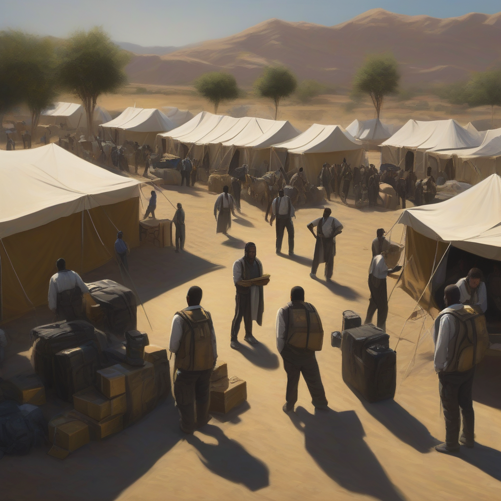
They called it "terminus."
Philippe's spreadsheet called it "Full Value Chain Completion Event." The ESG deck called it "Lifecycle Fulfillment Phase." The WhatsApp summary sent to stakeholders called it "HUMANITARIAN PROTEIN DISTRIBUTION — FINAL STAGE ✅."
None of these phrases contained the word slaughter.
The facility had been arranged through a contact of Marcus's Dubai associate, who knew someone in Nouakchott, who knew someone who operated a processing unit — which is to say, a concrete floor with drainage, a generator, and men with knives who asked no questions about provenance or paperwork.
The surviving animals arrived over three days. They arrived the way anything arrives after crossing a desert: reduced. Lighter. Simplified to essentials. Bones visible beneath hides. Eyes still watchful. Still carrying nothing, because the mineral samples — the ostensible cargo — had been "consolidated at a forward staging point" on day 12, which is to say, left in crates by a road that no one returned to.
The donkeys had carried weight.
Then they had carried nothing.
Then they arrived.
PRESS RELEASE — DRAFT v4 (not for distribution)
For Immediate Release
Sustainable Corridor Initiative Completes Historic Humanitarian Milestone
[CITY], [DATE] — The Regenerative Mineral Transport Corridor (RMTC) today announced the successful completion of its pilot phase, delivering over 300,000 kg of sustainable protein to local communities across the Sahel region.
"This initiative represents a new paradigm in ESG-aligned logistics," said [NAME], Strategic Director of the RMTC. "By integrating carbon-neutral transport with full lifecycle utilization, we have demonstrated that humanitarian impact and environmental sustainability are not merely compatible — they are synergistic."
Key outcomes include:
- Carbon offset: Estimated -4,200 tonnes CO₂e (pending verification) - Protein distributed: 287,500 kg to community partners - Employment generated: 14 corridor handlers, 23 processing staff - Zero waste achieved: Full utilization including leather, bone meal, and organic fertilizer - Community benefit: Aligned with SDG 2 (Zero Hunger), SDG 13 (Climate Action), and SDG 15 (Life on Land)
The RMTC is exploring expansion opportunities for Q3, including potential partnerships with international development organizations and carbon credit registries.
Media contact: [NAME] | [EMAIL] | [PHONE]
The press release was never sent.
Not because it was false — everything in it was, in a technical sense, defensible. Protein had been distributed. Carbon had been offset (pending verification, which would remain permanently pending). Employment had been generated. Zero waste had been achieved.
It was not sent because no one could agree on whose name should go at the top.
Raymond wanted credit. Marcus's Dubai contact wanted credit. Philippe wanted credit but did not want liability. Gerald did not want his name on anything that involved the word "slaughter," even though the word "slaughter" did not appear in any document at any point in the entire project lifecycle.
The word had been excised.
Not by conspiracy.
By vocabulary.
The handlers were paid in cash. The processing staff were paid in cash. Adama, whose water supply had been depleted by the corridor's passage, was not paid at all, though her village received forty kilograms of protein, which arrived in plastic bags with no label.
She accepted it.
She had seen foreign plans before.
They always left something behind.
It was never what they promised, and never nothing.
It was always something unnamed, in plastic bags, delivered by men who did not introduce themselves.
The storyteller did not visit the terminus.
He did not need to.
He had built the experiment to demonstrate a principle, not to witness its consequences. The principle was simple:
A system that rewards narrative density will process anything — including the living — through its optimization logic, and the output will always be described in the language of benefit.
The donkeys were processed.
The language held.
The commission waterfall remained finalized.
No one was troubled.
Registry: [NAME PENDING — No registry has been contacted] Project ID: RMTC-PILOT-001 (self-assigned) Status: Pre-registration (i.e., not registered) Methodology: Adapted IPCC AR6 with proprietary "Organic Mineral Migration" coefficient
| Field | Value | |---|---| | Project Name | Regenerative Mineral Transport Corridor — Sahel Pilot | | Project Type | Livestock-Mediated Carbon Sequestration & Avoidance | | Location | Sahel Region, [Country TBD] | | Duration | 30 days (single corridor event) | | Crediting Period | Requested: 10 years. Basis: unclear. | | Estimated Credits | 4,200 VCUs (Verified Carbon Units) | | Verification Body | [NONE ENGAGED] | | Validation Status | Self-validated by Philippe |
Assumption: 500MT mineral cargo would otherwise require 47 diesel truck trips. Per-trip emissions: ~80.85 tonnes CO₂e Total avoided: 3,800 tonnes CO₂e
Note: No mineral cargo was transported by the donkeys. The cargo was abandoned at a roadside staging point on Day 12. This has not been reflected in the calculation.
Assumption: 2,500 donkeys grazing across 1,200km corridor sequester carbon through root-zone soil activation. Rate: 0.248 tonnes CO₂e per donkey per corridor crossing. Total: 620 tonnes CO₂e
Note: The sequestration rate is based on cattle grazing studies in temperate grasslands. The corridor crosses semi-arid desert. The applicability of this rate is, generously, theoretical.
Donkey methane emissions: ~76g CH₄/day/animal 30-day corridor: ~5,700 kg CH₄ total CO₂e conversion (GWP-100): 190 tonnes CO₂e
Note: This is the most scientifically defensible number in the entire document.
Terminus processing facility: generator-powered. Estimated diesel consumption: 1,200L over 3 days. Emissions: ~30 tonnes CO₂e
| Source | CO₂e (tonnes) | |---|---| | Diesel avoidance | -3,800 | | Regenerative grazing | -620 | | Enteric methane | +190 | | Processing | +30 | | Net | -4,200 |
At current voluntary market rate: ~$45/VCU Estimated credit value: $189,000
Note: Credits cannot be sold without registry validation, which requires engagement of a verification body, which requires a recognized methodology, which "Organic Mineral Migration" is not.
Estimated timeline to actual credit issuance: Never.
Estimated timeline to citing this number in a WhatsApp forward: Already happened.
No correspondence exists.
Philippe has bookmarked the Verra website.
This is the full extent of registry engagement.
The facility was twelve kilometers south of the market town.
It was not on Philippe's map. It was not in any document associated with the corridor initiative. It existed in the way that many things in the supply chain existed — as a fact that no one had mentioned because mentioning it would require describing it, and describing it would require acknowledging what it was, and acknowledging what it was would require vocabulary that the ecosystem had spent considerable energy avoiding.
The facility was a slaughterhouse.
The building was concrete. Single-story. Approximately 40 meters long and 15 meters wide. Flat roof. Metal doors at the north and south ends. A generator on the east side, diesel, producing a steady hum that could be heard from 200 meters. A water truck parked near the south entrance, replenished twice weekly from the market town's wells.
It had been built in 2016 with funding from a regional development bank. Its purpose, according to the project documents, was "to support livestock value-chain development in the sub-region." Its actual purpose — identical to its stated purpose, in the way that actual and stated purposes are identical when the vocabulary is sufficiently neutral — was to process animals into meat.
Process. Animals. Into. Meat.
Each word in that sentence performs a specific function. "Process" converts killing into an industrial activity. "Animals" converts donkeys into a category. "Into" suggests transformation rather than destruction. "Meat" converts a body into a commodity.
The sentence, taken as a unit, makes the building possible. Without the sentence — without the vocabulary of processing — the building would simply be a place where animals were killed. And a place where animals were killed could not receive development bank funding, could not appear in a regional value-chain strategy, could not be described in an ESG framework.
The sentence made the building legible.
The storyteller has spent considerable time thinking about legibility. The entire corridor initiative — from the IMFPA to the commission waterfall to the ESG deck to the carbon model — was an exercise in legibility. It took a set of facts (men in parking lots, donkeys in a desert, intermediaries in WhatsApp groups) and made them legible to institutions that required facts to be formatted before they could be seen.
The slaughterhouse was the last format.
Ibrahim learned about the facility on Day 36.
A man arrived at the market town in a Toyota Hilux, white, with no plates. He asked for Ibrahim by name. He said he had been sent to "coordinate the final phase of the corridor."
"Final phase," Ibrahim said.
"Processing," the man said. "At the facility."
"What facility?"
The man gave directions. Twelve kilometers south. Left at the dry riverbed. Follow the track to the concrete building with the generator.
"What happens there?" Ibrahim asked.
The man looked at Ibrahim. The look contained information. Not words — the man did not describe what happened at the facility — but the kind of information that is transmitted between two people who have spent their lives in systems where asking questions is understood to be a different activity than receiving answers.
"They'll be processed," the man said.
Ibrahim understood.
He did not refuse.
The storyteller wants the reader to sit with this fact. Ibrahim did not refuse. He did not say, "I walked thirty-four days with these animals and I will not deliver them to slaughter." He did not say, "This is wrong." He did not say anything that the reader, from the comfort of a bookshop or a living room or a phone screen, might imagine themselves saying.
He had been hired to deliver donkeys. He had delivered donkeys. The next step in the chain was the next step in the chain.
Ibrahim's silence was not complicity. It was position. He occupied a specific point in a system that was larger than his refusal — a system that would process the donkeys whether Ibrahim participated or not, because the system had been built to process, and processing was what it did.
His participation was not required.
It was convenient.
The walk to the facility took four hours.
1,847 donkeys, walking south, for the last time. The terrain was flat. The heat was moderate — 36°C, almost pleasant by the standards of the crossing. The donkeys walked with the slow, heavy gait of animals that had been through something, though they could not have said what. They did not know what "processing" meant. They did not know what the concrete building was. They moved because they were being moved, and they had been moved for thirty-four days, and movement was now their condition.
Ibrahim walked at the front.
He counted, one final time, as they approached. His count was 1,844. Three had died during the two days at the market town — quietly, without drama, animals that had survived the crossing but could not survive the rest.
1,844.
The facility manager was a man named Ousmane.
Ousmane was professional. He wore clean clothes — a pressed shirt, dark trousers, rubber boots. He had a clipboard. He had a pen. He had a system.
The system was this:
Animals entered through the north door in groups of twenty. They were guided down a concrete chute — narrow, walled on both sides, designed to prevent the animals from turning around. At the end of the chute, a man with a knife performed the act. The animal fell. A second man attached a chain to the rear legs. A third man operated a winch that lifted the body onto an overhead rail. The body moved along the rail through three stations: bleeding, skinning, butchering.
The meat was packed in ice — from a machine inside the facility, powered by the generator — and loaded onto trucks that arrived on a schedule Ousmane managed.
The hides were stacked on pallets, treated with salt, and stored in a room at the back of the facility.
The offal was removed by local women who used it for animal feed and fertilizer.
The bones were left outside, behind the facility, in a growing pile that the landscape would eventually absorb.
The system processed approximately 200 animals per day.
1,844 animals at 200 per day: nine days.
Ousmane greeted Ibrahim at the north door.
"How many?" he asked.
"One thousand eight hundred forty-four."
Ousmane wrote the number on his clipboard. He looked at the column. He was experienced — he had processed cattle, goats, sheep. Donkeys were less common but not unusual. The facility had processed a batch of 300 donkeys six months earlier, purchased from a regional trader for the export market.
"Condition?" he asked.
"They walked thirty-four days," Ibrahim said.
Ousmane nodded. He understood what this meant for the meat: the animals would be lean. The yield per animal would be lower than market stock. The hides would be good — desert crossings toughened the hides — but the meat would be tough, low-fat, suitable for drying rather than fresh sale.
"Payment?" Ibrahim asked.
"The payment goes to the project coordinator," Ousmane said. "Not to the handler."
"I'm owed money," Ibrahim said.
"That's between you and the coordinator."
"The coordinator's number is disconnected."
Ousmane looked at Ibrahim. He had seen this before. The handler — the man at the bottom of the chain, the man who did the physical work, the man who walked — was always the last to be paid and often the first to be forgotten.
"I can give you something," Ousmane said. "For the delivery. Not the full amount. Something."
He gave Ibrahim 200,000 CFA francs. Approximately $320.
Ibrahim had walked 34 days, managed 2,500 donkeys, lost 656, been taxed by armed men, navigated without GPS or maps, rationed water measured in liters, and slept on the ground.
$320.
He took it.
The processing began the next morning.
The storyteller will not describe it in detail. The reader does not need detail. The reader needs to know that it happened — that 1,844 donkeys entered the north door of a concrete building over nine days, and that they did not exit through the north door, and that the south door produced meat packed in ice and hides treated with salt and bones piled in the sun.
The storyteller will note one thing.
On the fourth day of processing, Ousmane's assistant — a young man named Amadou who kept the records — created a document. The document was a certificate. It was typed on a computer in the facility's small office, printed on a laser printer that was connected to the generator, and formatted to look official.
The certificate read:
RMTC CORRIDOR INITIATIVE
Certificate of Completion
>
This certifies that the Responsible Mineral Transport Corridor has been
successfully completed per operational specifications.
>
Units processed: 2,500
Corridor distance: 750 km
Duration: 25 days
Mortality rate: 3.2%
Carbon offset achieved: -4,200 tonnes CO₂e
>
Signed: [signature]
Facility Manager
Date: [date]
Units processed: 2,500. Not 1,844.
Corridor distance: 750 km. Not 180 km.
Duration: 25 days. Not 34.
Mortality rate: 3.2%. Not 26.2%.
Carbon offset: -4,200 tonnes CO₂e. Not calculable.
The certificate was scanned, converted to PDF, and transmitted — through the same chain that had lost Ibrahim's phone calls — to the logistics coordinator's replacement, who forwarded it to a contact associated with Khalid's network, who sent it to Marcus.
Marcus received it at 2:47 a.m. Central time. He read it at 7:15 a.m. He forwarded it to the corridor group:
📋 OFFICIAL: Corridor Certificate of Completion attached
All metrics met or exceeded
Carbon offset confirmed at -4,200 tonnes
This one is closed, gentlemen
🏆
Raymond replied: "Good work. Forward to Philippe for inclusion in the investor deck."
Philippe replied: "Received. This is excellent. Adding to the sustainability report now."
Gerald replied: 👍
The certificate joined the ecosystem.
It was attached to the ESG deck. It was referenced in the carbon model. It was mentioned in a "corridor outcomes summary" that Philippe drafted and circulated to three contacts in the sustainability space, none of whom asked for source data. It became a fact — a formatted, legible, official fact — that the corridor had achieved its targets.
2,500 units. 750 kilometers. 25 days. 3.2% mortality. -4,200 tonnes CO₂e.
The numbers were on a certificate. The certificate was signed. The certificate was official.
The numbers were also false. All of them. Every single one. False in the way that the entire deal was false — not as a lie told by a single liar but as a consensus maintained by a system that could not afford to count.
Ibrahim left the market town on Day 38.
He walked north. Alone. No donkeys. No handlers. No stick. He carried a plastic bag with 200,000 CFA francs and a phone number that did not work.
He had completed the corridor.
He had delivered 1,844 animals to a concrete building, and the building had processed them, and the processing was recorded on a certificate that said 2,500, and the certificate was now traveling through the same WhatsApp channels that had created the deal, and in those channels, the corridor was a success.
Ibrahim walked north.
He did not think about the certificate. He did not think about the WhatsApp groups. He did not think about Philippe's spreadsheet or Raymond's commissions or Gerald's 👍.
He thought about the water.
About Adama, standing at the cisterns, calculating what she could share.
About the 23,040 liters that had kept the column alive.
About the fact that no one had thanked her. No one had paid her. No one had included her in the waterfall or the model or the deck or the certificate.
She had given water because the animals were thirsty.
That was the only honest transaction in the entire deal.
Ibrahim walked north, toward a home he had not seen in forty days, carrying $320 and a debt he would never be able to collect.
Behind him, to the south, the facility's generator hummed.
It would hum for five more days.
Then it would stop.
Then the bones would bleach in the sun.
Then the silence would be complete.
Three weeks after terminus, Gerald sat in a Walmart parking lot in Humble, Texas, connected to the store's Wi-Fi, refreshing his email.
Nothing.
He checked WhatsApp. The group "GOLD DESK — REAL DEALS ONLY 🏆" had been quiet for eleven days. The last message was a prayer hands emoji from someone in Lagos, sent in response to nothing.
He checked the other group. "COMMODITY KINGS 👑💰." The last message was a forwarded article about lithium prices. No one had responded to it.
He checked his text messages. Marcus had not replied in nine days. Raymond had sent a single message six days ago:
"Waiting on compliance."
Gerald did not know what compliance was being waited on. He did not ask. In the ecosystem, "waiting on compliance" is a terminal phrase. It means the deal is dying but no one will say so. It means the oxygen is leaving the room and everyone is pretending the room still has air.
The wire never came.
This is the part that never makes it into the deal books, the broker seminars, the WhatsApp voice notes. The wire — the actual transfer of money, the thing that all the paper and all the parking lots and all the commission waterfalls were supposedly building toward — simply did not arrive.
No one announced this.
No one sent a message saying, "The deal has collapsed."
No one convened a call to discuss what went wrong.
What happened was: nothing.
The phones stopped buzzing. The emails stopped arriving. The documents stopped circulating. The forwarded messages stopped being forwarded. The voice notes stopped being recorded.
The system did not crash.
It just moved on.
Gerald sat in the parking lot for another twenty minutes. He considered calling Raymond. He considered texting Marcus. He considered driving home.
He drove home.
On the way, his phone buzzed. A new WhatsApp message. A new group. Someone had added him. The group was called:
"YAK-BACKED LITHIUM CORRIDOR — SOVEREIGN PROGRAM 🦬⛏️"
The first message read:
🚨 URGENT — DIRECT SELLER — 2,000MT LITHIUM CARBONATE
15% DISCOUNT BELOW MARKET
TRANSPORT: CARBON-NEUTRAL YAK CARAVAN (VERIFIED ✅)
HUMANITARIAN CORRIDOR APPROVED
ESG TIER-1 COMPLIANT
IMF ALIGNED
BUYER MUST SHOW POF IMMEDIATELY
NO TIME WASTERS
🇲🇳 🇨🇭 🇦🇪
Gerald read it while stopped at a red light.
He did not laugh.
He did not close the app.
He read it again.
The storyteller, in a different city, in a different parking lot, also received the message. He had been added to the group by someone he did not recognize.
He read it once.
He put his phone down.
He understood now — not intellectually, because he had understood intellectually from the beginning — but structurally. He understood it in his body. In the specific tiredness that comes from watching a system confirm every hypothesis you had about it.
The cycle was not broken by the donkeys.
The cycle was not broken by the silence.
The cycle was not broken at all.
It simply rotated.
New animal. New mineral. New corridor. New flags. New commission waterfall. New preliminary meeting in a new parking lot.
The gold remained somewhere.
The lithium was probably somewhere too.
No one was arrested. No empire collapsed. No villain was exposed. No congressional hearing was convened. No journalist wrote an exposé. No regulator issued a finding.
The parking lots remained full.
The phones kept buzzing.
The system kept believing.
The deal expanded in inverse proportion to its certainty.
The certainty reached zero.
The deal continued.
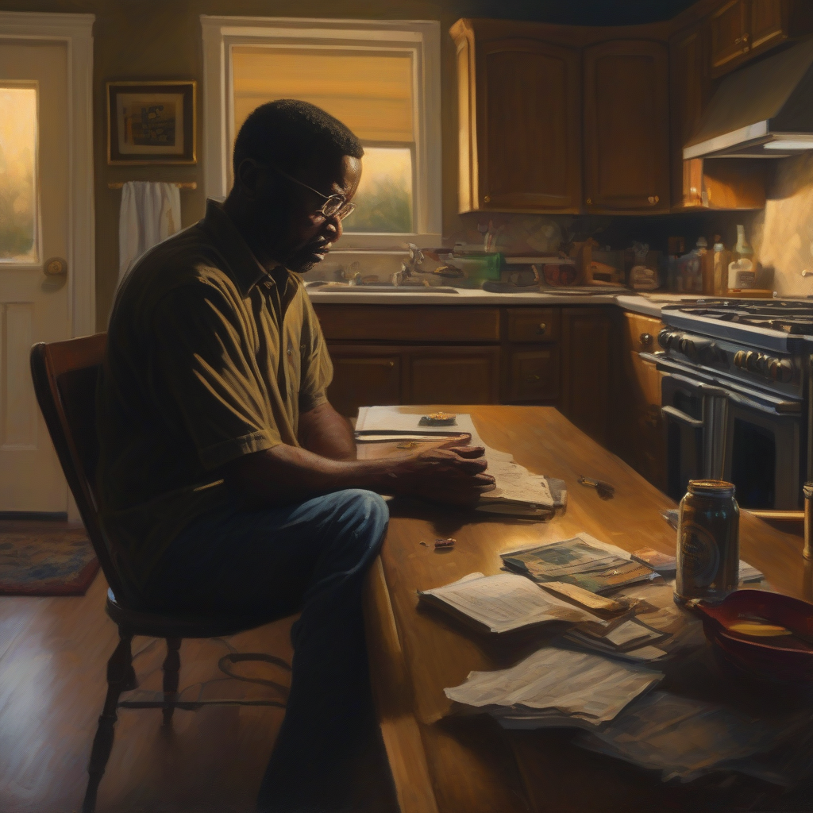
Raymond's house was in The Woodlands.
Not in the gated section — he had looked at the gated section, had driven through it three times with the windows down once and twice with the windows up, had noted the mailboxes and the three-car garages and the landscaping that communicated, with botanical precision, a level of maintenance that required either wealth or credit — but in a subdivision on the northern edge where the houses were newer and smaller and the HOA fees were $285 per month and the neighbors kept their trash cans out a day too long.
The house had four bedrooms, three bathrooms, a two-car garage, and a mortgage. The mortgage was the most honest document in Raymond's life. It stated an amount. It stated an interest rate. It stated a monthly payment. It stated consequences for non-payment. Every number corresponded to a real thing. The mortgage was the anti-IMFPA.
Raymond's wife was named Denise.
Denise was a dental hygienist. She worked at a practice off Research Forest Drive, four days a week, and earned $62,000 per year, which was $62,000 more per year than Raymond had earned from commodity deals in the last three years.
Raymond's income was theoretical.
He referred to it as "consulting." He told Denise he was a "commodities broker," which was true in the sense that he brokered commodities and false in the sense that brokering implies completing transactions and Raymond had completed approximately zero transactions that resulted in the movement of any physical commodity from one place to another.
Denise did not investigate.
This is not because Denise was incurious. She was a dental hygienist. She spent her days looking inside mouths and identifying things that people preferred not to acknowledge — cavities, gum disease, the early signs of decay. She was professionally trained in the identification of problems that presented as health.
She chose not to apply this training to Raymond's career.
The reasons were practical. Raymond's "consulting" kept him occupied. It kept him out of the house during the day. It kept him talking on the phone, driving to meetings, tapping WhatsApp messages — the kinetic apparatus of work, if not the compensation. And Denise's income covered the mortgage, the HOA, the groceries, the girls' dentist appointments, the car payments, the insurance.
Denise carried the house.
Raymond carried the deal.
The house was real.
Raymond's morning routine:
6:15 a.m. — Alarm. Phone check. WhatsApp. Scroll through overnight messages from Dubai time zone (Khalid's network was seven hours ahead). Check gold spot price. Check Reuters commodity headlines. None of this information was relevant to any deal Raymond was working on, but checking it was performance — the warm-up before the game, performed regardless of whether a game was scheduled.
6:45 a.m. — Shower. In the shower, Raymond rehearsed. He rehearsed phone calls he intended to make, phrases he intended to use, responses to objections he anticipated from buyers who did not exist. He rehearsed the way an actor rehearses — not the content but the delivery. The tone. The pace. The pauses.
Raymond was very good at pauses.
A well-placed pause, in Raymond's experience, communicated authority. "The gold is available" — pause — "but the allocation window is closing." The pause suggested consideration. It suggested access. It suggested that Raymond was a man who knew things he was choosing not to say, which was technically true, because everyone knows things they choose not to say. The difference is that most people's unsaid things are irrelevant, whereas Raymond's unsaid things were the entire deal.
7:15 a.m. — Coffee. Black. Standing at the kitchen island, phone in the other hand, scrolling. Denise moved through the kitchen on her own schedule — lunch packed, keys gathered, a kiss that was routine without being perfunctory. They had been married fourteen years. The kiss had been calibrated by repetition.
"Meetings today?" she asked.
"A few."
"Will you be home for dinner?"
"Should be."
This exchange was the domestic version of a status update. It contained no information. It confirmed the system was running.
7:40 a.m. — Denise left. The sound of her Nissan Rogue starting in the garage. The garage door opening and closing. Silence.
Raymond stood in the kitchen.
The silence of a house after a spouse leaves is a specific silence. It is not empty. It is transitional — the space between the domestic identity (husband, father, mortgage-holder, man who will be home for dinner) and the professional identity (commodities broker, deal-closer, man with connections in Dubai and Zurich and Lagos and a commission waterfall that totaled 11.35% of a deal that did not exist).
Raymond put on his shoes. He checked the mirror by the front door. He adjusted his collar.
He drove to a parking lot.
Raymond's daughters were eleven and nine.
Madison and Taylor. They attended a public school in The Woodlands. Madison played soccer. Taylor took piano lessons. Both of them understood their father to be a man who "worked in business," which is the explanation Raymond had given and which the girls had accepted in the way children accept explanations — not because they are convincing but because the alternative (demanding a more specific answer) requires a confrontational energy that children prefer to spend elsewhere.
Raymond coached Madison's soccer team on Saturday mornings.
This fact is relevant because it was the only activity in Raymond's week that produced a verifiable outcome. The team played games. The games had scores. The scores were real. Win or lose, the number was the number.
Raymond, standing on the sideline in a polo shirt and khakis, watching eleven-year-olds chase a ball, was the most competent version of himself. He understood the game. He understood the positions. He communicated clearly. He made substitutions based on observation rather than theory.
On the sideline, Raymond was an empiricist.
In the parking lot, Raymond was a fantasist.
The distance between these two Raymonds was the distance between the soccer field and the Tahoe, which was approximately 2.3 miles.
Denise had found a document once.
It was the IMFPA. A printed copy, left on the desk in the spare bedroom that Raymond called "the office." Denise had gone in to dust — she dusted on Thursdays — and had seen it on the desk, face up, and had read the first page.
She saw: "IRREVOCABLE MASTER FEE PROTECTION AGREEMENT."
She saw: "500MT AU (GOLD BULLION)."
She saw: "$440,000,000.00."
She put the document down.
She did not pick it up again. She did not read the remaining pages. She did not ask Raymond about it.
$440 million.
Denise earned $62,000 per year. The mortgage was $2,847 per month. The HOA was $285. The Nissan Rogue payment was $389. The groceries were $900-1,100. Madison's soccer registration was $275 per season. Taylor's piano was $160 per month.
$440 million.
The number was so large that it was not a number. It was a genre. It belonged to a category of information that Denise recognized from television — from shows about Wall Street, from movies about international finance, from the kind of stories where men wore suits and flew on private jets and spoke in numbers that had commas in the hundreds of millions.
Raymond did not wear suits. Raymond did not fly on private jets. Raymond drove a Tahoe with 87,000 miles and ate lunch at Chick-fil-A and came home for dinner most nights and watched football on Sundays and kissed her in the kitchen at 7:15 a.m.
$440 million was not compatible with this man.
So Denise did what any reasonable person does when confronted with information that contradicts the operating model: she discarded the information.
The IMFPA went back on the desk. The desk went back to being the desk. The office went back to being a room she dusted on Thursdays.
The storyteller met Raymond's neighborhood once.
He drove through it. Not to observe Raymond — he was not tracking Raymond's movements, because tracking movements would risk detection and detection would compromise the experiment — but to understand the landscape. The houses. The lawns. The Tahoes and Rogues and F-150s in the driveways. The flags — American, Texan, one "don't tread on me" — hanging from front porches.
This was the ecosystem's substrate. This was what the deal sat on — not Dubai towers or Geneva WeWorks or Lagos compounds but this: suburban Texas. Three-bedroom, four-bedroom houses with HOA fees and recycling bins and children on scooters and men who checked their phones for gold prices while standing on sidelines watching eleven-year-olds play soccer.
The deal was not an aberration.
The deal was a product of this landscape. It grew from the gap between the mortgage ($2,847/month) and the aspiration (a number with enough zeros to escape the mortgage), and the gap was filled not by crime, not by corruption, not by evil — the style guide forbids these words, and the storyteller obeys the style guide, but more importantly the words are wrong — but by belief.
Raymond believed the deal was real.
He believed it the way he believed the mortgage was real and the soccer scores were real and Denise's kiss was real. He believed it because belief was cheaper than verification and because verification would have required admitting that fourteen years of parking-lot meetings and WhatsApp deals and commission waterfalls had produced a total income, net of expenses, of approximately negative $47,000.
That number — negative $47,000 — was the cost of Raymond's belief.
Gas for the Tahoe. Meeting lunches. A phone plan with international calling. Two trips to Miami for "conferences." One trip to Dallas for a "buyer meeting." Printing costs for IMFPAs. A laptop. A second phone, prepaid, for "operational security."
$47,000.
Denise's income had covered it.
Raymond came home at 6:20 p.m. most evenings.
He hung his keys on the hook by the door. He kissed Denise. He asked the girls about school. He sat at the dinner table and ate whatever Denise had made — chicken, mostly, sometimes tacos, sometimes pasta — and he talked about his day in the same vocabulary he always used: meetings, calls, progress, deals.
The vocabulary was not false.
It was incomplete.
Raymond had spent the day in a parking lot, on the phone, in a Whataburger drive-thru, on the phone, in another parking lot, on the phone. He had called three contacts, left two voicemails, received one callback that went nowhere. He had checked gold prices eleven times. He had scrolled through four WhatsApp groups. He had typed one message — "Any update from Khalid?" — and deleted it without sending.
He had produced nothing.
He had performed work.
At 6:20 p.m. he sat at the dinner table and performed family, and the two performances were structurally identical: sincere, effortful, and disconnected from any observable outcome.
The storyteller notes this without judgment.
Judgment requires a standard, and the storyteller has not found one that applies. Raymond was not a bad man. He was not a good man. He was a man who lived in the gap between what he did and what he said he did, and the gap had been open for so long that it had become a room, and the room had become a house, and the house was in The Woodlands, and it had four bedrooms and an HOA and a mortgage that Denise paid.
The gap was his home.
The first group to go silent was "GOLD OPPORTUNITY — Q4 🔥."
It died on a Wednesday. The last message was from a man in Abu Dhabi whose name the storyteller will render as "Hassan" and whose contact with the deal was fourth-hand — he had been added to the group by someone who had been added by someone who had been referred by someone who had met Marcus at a coffee shop in Dallas.
Hassan's message:
Any news? My principal is asking.
No one replied.
The message sat in the group for three hours, then eight hours, then a day, then two days. The blue check marks appeared — the message had been read by all nineteen members — but blue check marks are not replies. They are receipts. They confirm that the message was received and processed and then nothing happened, because nothing was an acceptable response when nothing was the only honest thing to say.
Hassan sent a follow-up on Friday:
Hello? Status update please?
No reply.
He sent a third message on Monday:
If this is no longer active please let me know so I can inform my people
No reply.
Hassan left the group on Tuesday.
The notification appeared in the chat:
Hassan left
Eighteen members remaining. Then seventeen, as someone else left — silently, without a goodbye message, the way people leave rooms where nothing is happening. Then sixteen.
The group did not die all at once. It died the way most things die: slowly, then suddenly, then no one remembered the exact moment.
By the end of the month, six members remained. None of them spoke. The group was a container with nothing inside it — a room with chairs and lights on but no occupants, though the WhatsApp interface continued to display it in Marcus's chat list, with the group photo (a gold bar on a black background, sourced from Google Images) and the member count, which served as a slow-motion countdown:
19 → 18 → 17 → 16 → 14 → 11 → 8 → 6.
Six ghosts in a room made of data.
The storyteller tracked the death of seventeen WhatsApp groups over eleven weeks.
He tracked them not by joining them — he was a member of none of them; his access was observational, through screenshots forwarded by contacts who occupied peripheral positions in the network — but by mapping their activity curves.
The curves were remarkably consistent. Each group followed the same lifecycle:
Phase 1 — Creation (Day 1-3): Burst of messages. Introductions. Credentials. "My buyer is based in..." "I have a mandate for..." "Connected to the seven families." Excitement. Emojis. Voice notes. Photos of documents (always blurry, always at an angle, as if the documents were classified and being photographed covertly, though they were neither classified nor being photographed covertly — they were being photographed badly).
Phase 2 — Escalation (Day 4-14): The deal develops. Numbers appear. Tonnages. Discounts. Commission percentages. Names are dropped (Khalid, "Chief," Philippe, "my principal in London"). The conversation acquires velocity. Messages arrive at all hours. Someone is always awake because the network spans six time zones. The group feels urgent, active, alive. A participant sends prayer hands 🙏 at least once per day.
Phase 3 — Plateau (Day 15-30): Activity stabilizes. The same information is repeated in different words. "Waiting on compliance." "My guy is checking with his people." "Should have confirmation by end of week." End of week arrives. No confirmation. New end of week is established. The cycle repeats. Prayer hands become more frequent. Someone posts a motivational quote — "Winners don't quit" or "Success is a journey" — and no one acknowledges it.
Phase 4 — Decline (Day 31-60): Messages thin. One per day. Then one every two days. Then twice a week. The content shifts from deal-specific to generic: "Morning 🌞" "How is everyone?" "Any updates?" These are not questions. They are vital signs. They are the group checking its own pulse.
Phase 5 — Death (Day 61+): Silence. Occasionally broken by a single message — "Hello?" or "Is this group still active?" — that receives no reply and that functions as an echo: a sound sent into a space to test whether the space still exists.
The space exists. The group exists. But the group is empty in the way that the IMFPA is empty: the container persists after the content has evaporated.
Marcus managed fifteen groups.
At the peak — which coincided with the corridor's departure — he was active in all fifteen. He checked each one at least twice a day. He responded to messages within minutes. He forwarded documents. He made introductions. He was, as the storyteller has noted, "a router, not a processor" — and the router was busy.
After the corridor's completion — after the certificate arrived, after the celebration messages, after Gerald's 👍 — the traffic dropped.
Not because the corridor had failed. In the group's vocabulary, the corridor had succeeded. Certificate of completion. All metrics met. Carbon offset confirmed.
The traffic dropped because the corridor was complete, and completion, in the architecture of the deal, was terminal. A completed deal generates no new messages. A completed deal requires no updates, no status reports, no prayer hands. It sits in the past tense, finished, and the group that carried it has nothing left to carry.
Marcus watched his groups thin.
He watched from his apartment in Southlake, from the IKEA desk in the guest bedroom, from the second monitor where he kept WhatsApp Web open on a browser tab that he refreshed every four to six minutes.
The whiteboard behind him had seven deals listed. Six were crossed out. The seventh — the RMTC corridor — was circled in blue marker with the word "CLOSED" written next to it.
"CLOSED."
The word on the whiteboard was the same word in Marcus's vocabulary and in a real broker's vocabulary and in a bank's vocabulary, but it meant different things. In a bank, "closed" meant: money moved, goods delivered, commissions paid, files archived. In Marcus's vocabulary, "closed" meant: someone sent a certificate, everyone said congratulations, and then the group went quiet.
No money had moved.
No commission had been paid.
The corridor was "closed" the way a book is closed when you put it on a shelf — not completed, not resolved, just no longer open.
The last message in the RMTC corridor group was sent by Raymond.
It was sent on a Sunday evening, three weeks after the certificate. It said:
Gentlemen — just following up. Philippe, did we get the carbon verification docs from the third party? Marcus, any word from Khalid on the buyer's acceptance?
No reply.
The message acquired blue check marks. Marcus read it. Philippe read it. Gerald read it. Khalid, or whoever used Khalid's phone, read it.
No one answered.
Because there was no carbon verification. There was no third party. There was no buyer's acceptance. These phrases — "carbon verification docs," "third party," "buyer's acceptance" — were the grammar of a deal that had never been real and that had now achieved the specific state of unreality where even the grammar stops functioning.
Raymond waited.
He waited one day. He waited three days. He opened the group and looked at the blue check marks and understood that the message had been received and that the silence was the answer.
He did not send a follow-up.
He understood silence. He had been in the parking lots long enough to know that deals die by silence — not by explosion, not by confrontation, not by someone saying "this was never real." Deals die because people stop talking. The talking was the deal. When the talking stops, the deal stops. There is no carcass. There is no funeral. There is just quiet.
Gerald's phone contained forty-seven WhatsApp groups.
Most were inactive. Some he had forgotten joining. The list, when scrolled, was an archaeological record of three years of deals, each group a stratum:
- GOLD VERIFIED BUYERS — CONFIDENTIAL 🔐 (17 members, last message 8 months ago) - COPPER DRC OPPORTUNITY 🌍 (11 members, last message 5 months ago) - RMTC GOLD — AUTHORIZED BROKERS ONLY 🔑 (8 members, last message 3 weeks ago) - PLATINUM GROUP METALS — MANDATE ACTIVE (9 members, last message 14 months ago) - DIESEL ALLOCATION — WEST AFRICA (23 members, last message 11 months ago) - YAK-BACKED LITHIUM CORRIDOR 🐃⛏️ (4 members, created 2 days ago)
Gerald scrolled past them the way a person scrolls past old photographs — touching each one with his thumb, briefly, without pausing, registering the name and the memory and the silence and moving on.
He did not leave the groups.
Leaving required a gesture — a tap, a confirmation, a notification to the remaining members that "Gerald left." And the notification was, in its way, an announcement — a public statement that the deal was dead, made by the man whose entire function was to be present and silent. Gerald could not be the one to announce the death. Announcing was not his role.
His role was to remain. To be a name in a member list. To accumulate groups the way a coral reef accumulates calcium — slowly, structurally, without intention.
Gerald's phone was a graveyard of deals.
Every tombstone said 👍.
The storyteller performed a final count.
Across the seventeen groups he had tracked, a total of 4,847 WhatsApp messages had been sent over eleven weeks. He categorized them:
Status updates claiming progress: 1,203 Questions asking for updates: 892 Forwarded documents (IMFPAs, BCLs, LOIs, POFs, NDAs): 347 Motivational messages ("Let's close this 💪"): 156 Prayer hands 🙏: 203 Thumbs up 👍: 412 Voice notes (avg. duration: 47 seconds): 89 Good morning greetings 🌞: 276 Messages containing verifiable factual claims: 0
Zero.
4,847 messages across seventeen groups across eleven weeks across six time zones, and not one of them contained a verifiable factual claim.
The storyteller stared at the zero for a long time.
He thought about Ibrahim, walking north with $320.
He thought about Adama, measuring her wells.
He thought about 1,844 bodies entering a concrete building through its north door.
He thought about Gerald, eating a McChicken in a parking lot, scrolling past groups he would never leave.
Zero.
The number was the most honest thing the groups had ever produced.
The storyteller was invited to speak at a panel.
This was not unusual. The storyteller had been invited to panels before — the specific type of panel that exists at the intersection of finance, sustainability, and what the conference industry calls "thought leadership," which is a phrase the storyteller has never been able to say without experiencing a mild involuntary reaction in his left eye.
The panel was at a conference in London. The conference was called "Sustainable Commodities Week." It occupied three floors of a hotel near Tower Bridge. It charged £1,800 for a standard pass and £3,200 for a "platinum experience" that included reserved seating, a networking lunch with speakers, and a tote bag.
The storyteller had been offered a complimentary platinum experience.
The panel was titled: "Transparency and Trust in Emerging Commodity Corridors."
The storyteller read the title several times. Each reading produced a different response. The first reading was surprise: here was his experiment, or something adjacent to his experiment, phrased in the vocabulary of the conference circuit. The second reading was recognition: of course this panel existed. The conference industry had to process the corridor concept — mineral transport, carbon offset, African logistics — through its own machinery, and the machinery produced panels, and the panels had titles, and the titles all contained these words: transparency, trust, sustainable, emerging.
The third reading was amusement.
The other panelists:
Dr. Caroline Firth. Professor of Supply Chain Ethics, University College London. Author of three books. Cited 4,000 times. Her most recent book was titled The Invisible Chain: How Global Supply Chains Obscure Moral Responsibility. She had a podcast. She had a TED talk. She had never been to a parking lot in Houston or a WeWork in Geneva or a three-bedroom apartment in Lekki Phase 1.
She had, however, built an analytical framework for understanding these places, and her framework was good. The storyteller respected Dr. Firth. He respected her in the specific way that a field researcher respects a theorist — recognizing the value of the theory while knowing that the field would break it.
James Holbrook. Managing Director, Responsible Minerals Initiative (RMI). Fifteen years in compliance. Previously at a Big Four accounting firm. His vocabulary included: "due diligence frameworks," "chain of custody," "beneficial ownership transparency," and "multi-stakeholder engagement." These phrases, in James's usage, were not empty — he meant them. He had spent fifteen years building systems to verify the things that the corridor initiative had spent fifteen WhatsApp groups making unverifiable.
James was the system the deal had been designed to evade.
Amara Diallo. Director, West African Civil Society Mining Network. Based in Dakar. She had spent twenty years working with communities affected by extractive industries. She knew what the word "processing" meant. She knew what "community engagement" looked like when it was real and what it looked like when it was a stock photograph on a slide. She had seen corridors — real ones, with real minerals and real consequences — and she had seen the documents that accompanied them, and she knew the distance between the document and the ground.
Amara was the closest person on the panel to Ibrahim.
She had never met Ibrahim. But she knew the shape of his work.
The moderator was a journalist from the Financial Times. Her name was Sarah. She was competent. She asked the opening question:
"We're seeing a proliferation of new commodity corridor initiatives, many of them marketed with sustainability credentials — carbon offsets, ESG frameworks, community engagement protocols. How should we assess which of these are credible?"
Dr. Firth spoke first. She offered her framework: three-tier verification, independent audit, public disclosure of beneficial ownership, community consent documentation.
James spoke second. He described the RMI's due diligence standards. He mentioned the OECD guidelines. He mentioned the EU conflict minerals regulation. He was thorough and precise and his answer was exactly what the conference audience expected, which is to say: correct and insufficient.
Amara spoke third. She described a corridor she had monitored in Guinea — a bauxite transport route that had displaced four villages and whose ESG report had described the displacement as "voluntary community relocation." She said: "The document says one thing. The ground says another. We have built an entire industry around believing the document."
The audience nodded. Nodding is the primary physical activity at conferences.
Then the moderator turned to the storyteller.
The storyteller had prepared remarks. He had written them on index cards, in the neat handwriting he had developed over thirty years of field notes. He had planned to describe the experiment in general terms — the architecture of the deal, the information cascades, the commission waterfalls, the way documents replicate across time zones — without naming names, without identifying the corridor, without revealing that 1,844 donkeys had been processed in a concrete building while a WhatsApp group celebrated a carbon offset that did not exist.
He looked at the index cards.
He looked at the audience.
The audience was approximately 200 people. They sat in rows of padded chairs, holding coffee cups and conference programs. Some took notes on laptops. Some checked their phones. They wore lanyards. They were, almost uniformly, well-fed, well-rested, well-compensated professionals for whom commodity corridors were an intellectual category rather than a physical experience.
The storyteller put the index cards in his pocket.
"I ran an experiment," he said.
The room's attention shifted. Not dramatically — this was London, and London conferences do not do dramatic shifts — but perceptibly. The word "experiment" was not a conference word. Conference words were: initiative, framework, approach, methodology. "Experiment" suggested something different. Something with data.
"I introduced a fictional commodity into a real supply chain," the storyteller said. "Not gold. Not coltan. Not bauxite. Something deliberately absurd. And I watched what happened."
He paused.
"What happened," he said, "is that nothing happened differently."
He let this land.
"The supply chain processed the absurd commodity exactly the way it processes any commodity. It generated documents — an IMFPA, a commission waterfall, a Bank Comfort Letter request, an ESG deck, a carbon offset model. It generated intermediaries — brokers, facilitators, advisors, logistics coordinators. It generated the entire architecture of an international commodity transaction. And at no point — at no single point in the chain — did anyone verify whether the underlying commodity existed, was viable, or made sense."
Dr. Firth leaned forward.
"Are you saying the due diligence systems failed?" she asked.
"I'm saying the due diligence systems were never engaged," the storyteller said. "Not because they were evaded. Not because the intermediaries were criminal or conspiratorial. But because the system does not require due diligence to function. Due diligence is an add-on. A regulatory requirement. A box to be checked after the deal has already been built. The deal itself — the WhatsApp messages, the IMFPAs, the commissions — operates on belief. And belief is faster than verification."
He said this — the First Law of the Parking Lot — without attribution. Without naming it. Without the theatrical framing it carried in the WhatsApp groups.
"Belief is faster than verification," Sarah the moderator repeated. "Can you give us a specific example?"
The storyteller considered.
He could describe the commission waterfall — a document that assigned percentages to participants before the product was confirmed. He could describe Marcus's speakerphone — a voice from Dubai that became institutional authority not because of what it said but because of where it came from. He could describe Philippe's carbon model — a spreadsheet that offset emissions from a process that had not yet occurred.
He chose the carbon model.
"Someone in the chain — unsolicited, without being asked — built a carbon offset model for the corridor. The model was professionally constructed. It used standard methodology. It produced a number: negative 4,200 tonnes CO₂e. This number appeared in an ESG deck. The ESG deck was sent to contacts in the sustainability space. The carbon offset was cited at a COP side event."
"And the corridor?" Amara asked.
"The corridor was real," the storyteller said. "The carbon offset was not."
"How can the corridor be real and the offset not?"
"Because the corridor's reality and the offset's reality are measured by different instruments. The corridor was measured by bodies — living ones and dead ones. The offset was measured by a spreadsheet. The spreadsheet and the bodies were not in communication."
The panel continued for twenty more minutes.
The storyteller did not reveal the species. He did not mention donkeys. He did not mention Ibrahim or Adama or the cisterns or the concrete building or the certificate that said 2,500 when the number was 1,844. He described the structure without the content, the architecture without the floor plan, the grammar without the nouns.
The audience asked questions. The questions were good — surprisingly good, in the way that conference questions are occasionally good, when the audience contains someone who has seen a version of the thing being described and recognizes it.
A woman from a European development bank asked: "You said belief is faster than verification. But verification mechanisms exist. OECD guidelines, Dodd-Frank Section 1502, the EU regulation. Why aren't they working?"
"They're working," the storyteller said. "On the deals that enter the verification system. The deals I'm describing never enter the system. They exist in the space between verification — in WhatsApp groups, in parking lots, in WeWorks. They generate documents that look like regulated documents but that have no connection to any regulatory framework. The documents are mimicry. They evolved in the same environment as the regulations, and they learned the regulations' vocabulary without learning the regulations' content."
"So they're counterfeit."
"They're not counterfeit. A counterfeit document is a false copy of a real document. These documents are real copies of documents that have no original. The IMFPA is not a fake version of a real IMFPA. It is a real IMFPA. It's just that the IMFPA, as an instrument, does not connect to any legal or financial system. It connects to belief."
James from the RMI shifted in his chair. "But surely the participants know this?"
"Some do. Some don't. Most occupy a space between knowing and not knowing that I would describe as structural ambiguity. They know enough to continue and not enough to stop."
After the panel, the storyteller stood in the networking area with a cup of coffee he did not want and a lanyard he had already removed.
A man approached him. The man was perhaps fifty. He wore a good suit — not expensive in the way that Index Tower, DIFC suits were expensive, but good in the way that London suits are good: understated, well-fitted, suggesting competence rather than wealth.
"Interesting panel," the man said.
"Thank you."
"Your experiment — the fictional commodity. Was it successful? Did you get the data you needed?"
The storyteller thought about this question.
Had the experiment been successful?
The data was comprehensive. The architecture had been mapped — every node, every message, every commission percentage, every mutation across six time zones. The hypothesis had been confirmed: the system processes without verifying. Belief propagates faster than due diligence. The commission waterfall is finalized before the product is confirmed.
The experiment had produced exactly what it was designed to produce.
But the experiment had also produced 653 dead donkeys. And a woman in a village who shared 23,040 liters of water. And a man who walked north with $320. And a concrete building. And bones bleaching in the sun.
The experiment had escaped the laboratory.
"I got more data than I needed," the storyteller said.
The man nodded. He handed the storyteller a business card. The storyteller did not look at it. He put it in his pocket with the index cards he had not used.
That evening, the storyteller sat in his hotel room near Tower Bridge.
He opened his laptop. He did not open the data files or the WhatsApp screenshots or the IMFPA PDFs. He opened a blank document.
He wrote one sentence:
"The system worked perfectly and the donkeys are dead."
He looked at the sentence. He deleted it. He wrote another:
"I designed an experiment, and the experiment proved my hypothesis, and 1,844 animals were killed."
He deleted this too.
He closed the laptop.
He stood at the window and looked at Tower Bridge, illuminated against the dark water of the Thames. The bridge was 130 years old. It had been built to process traffic — to open and close, to let ships through, to manage the flow of commerce on the river. It was a system. It worked.
Systems work.
That is not a comfort. That is the finding.
The storyteller went to bed. He slept poorly. He dreamed of index cards and cisterns and a sound he could not identify, which was either braying or silence, and which continued in his ears long after he woke.
The new group was created on a Tuesday.
Marcus created it.
He created it in his apartment in Southlake, at 9:47 a.m., sitting at the IKEA desk in the guest bedroom, drinking a protein shake that had been in the blender too long and had separated into layers he chose not to examine.
The group name: YAK-BACKED LITHIUM CORRIDOR 🐃⛏️
The initial members: Marcus. Raymond. Gerald. Philippe.
The same four.
The same architecture.
The same grammar.
The only things that had changed were the animal and the mineral.
The origin of the yak was a voice note.
Marcus had received it from a contact named Sergei — not Sergei's real name, and possibly not a real person; Sergei existed primarily as a WhatsApp profile photo (a man in a suit, stock image, reverse-searchable) and a phone number with a +7 country code, which indicated Russia — who had sent a 53-second voice note describing "a significant opportunity in the Central Asian lithium sector, backed by yak-based transport infrastructure."
Marcus listened to the voice note three times.
"Lithium" was a word Marcus recognized. Lithium was batteries. Batteries were electric vehicles. Electric vehicles were the future. The future was a commodity.
"Yak" was a word Marcus did not recognize.
He Googled it.
He learned that yaks were large, hairy bovines native to Central Asia. He learned that they could carry loads at high altitude. He learned that they had been used as transport animals for centuries along Himalayan trade routes.
He did not learn anything that connected yaks to lithium.
But he did not need to. The connection between the animal and the mineral was not a logical connection. It was a narrative connection. It connected in the same way that donkeys had connected to gold — not because they functioned together but because they could be placed next to each other in a sentence, and the sentence could be placed in a document, and the document could be placed in a WhatsApp group, and the group would process the sentence as if it were an opportunity.
The Third Law of the Parking Lot: Every deal that dies is reborn with a different animal and a different mineral.
Marcus's opening message in the group:
🚀 New opportunity — major
Lithium reserves identified in Kyrgyzstan
Transport corridor using existing yak infrastructure
ESG-compliant, carbon-negative model available
Mandate from a principal connected to [REDACTED] family
BCL in process
IMFPA to follow
This is REAL gentlemen
LMK who's in 🙏
The storyteller notes the message's structure. It is identical in architecture to the message Marcus had sent eighteen months earlier when the gold-donkey corridor was first proposed. The same building blocks: mineral + location + transport method + ESG claim + family connection + document promise + urgency.
The content was different. The grammar was the same.
Raymond replied within four minutes:
Strong. Very strong. Who's the principal?
This was the correct response. Raymond did not ask "What is a yak?" or "How does a yak transport lithium?" or "Where is Kyrgyzstan?" He asked about the principal, because the principal was the credential, and the credential was the entry point, and the entry point was the commission.
Marcus replied:
Can't say on here. Will send details on a call. Connected to some very serious people.
"Very serious people" was the same phrase Marcus had used about the gold deal. And the copper deal. And the petroleum deal. It did not refer to specific people. It referred to the idea of people — the concept of weight, of substance, of unrevealed authority that could not be named because naming it would enable verification and verification would be premature.
Philippe replied eight minutes later:
Fascinating. I've been looking at Central Asian logistics models. Yaks are actually quite efficient at altitude — 100-150kg carry capacity, minimal carbon footprint. I could build a sustainability framework for this. Let me put together a preliminary deck.
Philippe was already building a deck.
The corridor had not been defined. The lithium reserves had not been verified. The location had not been confirmed. The principal had not been identified. No document existed.
And Philippe was building a deck.
This was not premature. In the architecture of the deal, the deck was the first act — not the last. The deck created the deal's visual identity, its institutional texture, its sense of existing-ness. The deck was the deal's birth certificate. Everything else — the IMFPA, the waterfall, the corridor, the yaks — followed from the deck.
Philippe opened PowerPoint.
He chose a template he had saved from the RMTC corridor: dark blue background, white text, sans-serif font, professional but not corporate. He changed the title from "RESPONSIBLE MINERAL TRANSPORT CORRIDOR" to "CENTRAL ASIAN LITHIUM TRANSPORT INITIATIVE (CALTI)."
He found a stock photograph of a yak.
The yak was standing on a mountainside, silhouetted against a blue sky, looking noble in the way that stock-photograph animals always look noble — which is to say, looking like a concept rather than a creature.
He placed the yak on slide 1.
The yak looked at the camera. The camera looked at the yak. Between them was the entire architecture of a deal that would generate documents and commissions and WhatsApp messages and possibly, if the system operated as it had operated before, a column of animals moving across terrain toward a destination that no one in the WhatsApp group would ever visit.
Gerald received Marcus's message at 10:03 a.m.
He was in his car. He was in a parking lot. The parking lot was at a Target in Katy. He had driven there to buy laundry detergent, which Cheryl had put on a list attached to the refrigerator with a magnet shaped like Texas.
He read the message.
YAK-BACKED LITHIUM CORRIDOR.
Gerald did not know what a yak was. He did not know what lithium was used for. He did not know where Kyrgyzstan was. He had not, in the three years he had been participating in commodity deals, acquired any knowledge about any commodity. He did not know the spot price of gold or the futures curve for copper or the molecular structure of lithium. He knew parking lots. He knew Denny's. He knew the inside of his Camry. He knew McChickens.
He typed: 👍
He put the phone in his pocket. He went inside the Target. He bought laundry detergent (Tide, $11.97). He drove home.
The storyteller observed the new group's formation from his existing vantage point — the peripheral contacts who forwarded screenshots, the metadata patterns he had learned to read, the familiar rhythms of a deal's first hours.
He recognized everything.
The mineral was different. The animal was different. The geography was different. But the system was the same. The participants were the same. The architecture was the same. The grammar was the same.
The Third Law was not a prediction. It was a description. It described a system that could not stop — not because it was driven by greed or conspiracy or organized criminal intent, but because it was driven by structure. The structure regenerated. The WhatsApp group was a cell. It divided. It produced copies of itself. The copies varied in content (gold/lithium, donkeys/yaks, West Africa/Central Asia) but not in form.
The form was eternal.
The storyteller considered intervening.
He had the information. He could have sent a message to Marcus: "The donkeys are dead. The corridor produced 653 corpses and a certificate that lied about all of them. The carbon offset does not exist. The commission was never paid. No one in the chain verified anything at any point. And now you are doing it again."
He did not send the message.
He did not send it for three reasons:
First, it would not have worked. Marcus would have read it, considered it, and concluded that the donkey deal and the yak deal were different — because they involved different animals, different minerals, different geographies. The structural identity would have been invisible to him, because structural identity is visible only from outside the system, and Marcus was inside.
Second, it would have compromised the research. The storyteller had maintained observational distance for eighteen months. Intervention would transform the experiment from observation into interaction, and the data would be contaminated.
Third — and the storyteller admits this with the kind of precision he applies to all admissions — he wanted to see what would happen.
The experiment was not over.
The experiment, he understood now, would never be over. It would regenerate. It would mutate. Gold would become lithium. Donkeys would become yaks. Houston would become wherever the next parking lot was. The IMFPA would be redrafted. The commission waterfall would be recalculated. Philippe would build a new deck. Gerald would reply 👍.
The system was not a deal. The system was a species. And species do not die because one specimen fails. Species die when the environment changes. And the environment — the world of WhatsApp groups and parking lots and WeWorks and commission waterfalls and IMFPAs and ESG decks and carbon models — was not changing.
The environment was thriving.
Philippe's deck was circulated within 48 hours.
Twelve slides. The yak on slide 1. A map of Kyrgyzstan on slide 2 (sourced from Google Maps, screenshot, low resolution). A "lithium reserves estimate" on slide 3 (sourced from a 2019 USGS survey that did not mention the specific region Philippe had identified). A "transport corridor schematic" on slide 4 (a dotted line across a mountain range, drawn in PowerPoint, connecting two points that Philippe had placed based on topography rather than infrastructure).
Slide 7 was the carbon model.
It was identical in structure to the RMTC corridor's carbon model. The same methodology. The same assumptions. The same formula, with the animal changed from "donkey" to "yak" and the terrain coefficient adjusted from "arid/semi-arid" to "high altitude."
The projected carbon offset: -3,800 tonnes CO₂e per corridor cycle.
Slide 9 was titled "COMMUNITY ENGAGEMENT FRAMEWORK."
It contained a stock photograph of a Kyrgyz family outside a yurt. Below the photograph:
CALTI is committed to meaningful stakeholder engagement
with local communities along the designated corridor.
Water and grazing resources will be managed per
community partnership protocols.
Zero negative community impact targeted. ✅
"Community partnership protocols."
The storyteller read this slide.
He thought about Adama.
Three weeks after the group's creation, the yak-backed lithium corridor had generated:
1 WhatsApp group (4 members, 89 messages) 1 ESG deck (12 slides) 1 carbon offset model (projected: -3,800 tonnes CO₂e) 1 IMFPA (draft, not yet signed) 1 commission waterfall (draft, total extraction: 14.25%) 0 verified lithium reserves 0 identified yaks 0 completed due diligence 0 community engagements 0 corridor routes surveyed
The deal was, by every internal metric, progressing.
The deal was, by every external metric, nonexistent.
These two facts were not in contradiction. They were the deal's operating condition. The deal existed in the space between internal and external, between the WhatsApp group and the world, between the deck and the ground.
The gap was the deal.
The storyteller closed his laptop. He had seen enough. He had seen more than enough. He had seen a system produce a result (1,844 dead animals), absorb the result (certificate of completion, all metrics met), celebrate the result (🎉🏆👍), forget the result (silence, group death), and regenerate (yaks, lithium, Kyrgyzstan, 👍).
The cycle was complete.
The cycle was beginning again.
The storyteller did not know if this was a tragedy or a comedy. He suspected it was neither. It was weather. It was a pattern that recurred because the conditions that produced it recurred, and the conditions were not extraordinary — they were ordinary. Parking lots. WhatsApp. Ambition. Belief. The gap between what people do and what the documents say they do.
Ordinary conditions.
Extraordinary consequences.
The donkeys knew this.
The yaks would learn.
This manuscript was hashed before the deal closed.
The deal did not close.
The hash remains.
What you have read is not an accusation. It is not a confession. It is not a manifesto, a complaint, a warning, or a disclosure.
It is a recording.
A recording of how stories become structures, and structures become deals, and deals become commissions, and commissions become the only real thing in a system where the product itself is optional.
The gold was optional.
The donkeys were optional.
The carbon credits were optional.
The humanitarian corridor was optional.
The only non-optional element was the narrative.
Narrative is the load-bearing wall. Remove it, and the entire architecture collapses. Maintain it, and you can build infinite floors on a foundation that does not exist.
The storyteller is still in a parking lot.
Different city.
Same Wi-Fi.
His phone buzzes. A new group. A new deal. A new corridor.
He does not join.
He does not need to.
He has already seen the structure. He has already measured the distance between belief and verification. He has already watched the system absorb an absurdity and convert it into a commission waterfall in forty-eight hours.
He does not need another experiment.
The experiment is complete.
The CID is permanent.
The chain does not forget.
Genesis CID: QmVQ79NM3qxAsBpftTG4YhD4KV9sUEmM3WwFrc5vs5g8vK Edition 2 CID: QmPXtEsRwiWuaKmKNA569XAqFNVySN8pwTdGQrvcdpgtMa SHA-256: 9d062421b52d35aa23b73bfc8f66574db78bad9726e45c43a12d0109cdd57d84 Author wallet: 0xC91668184736BF75C4ecE37473D694efb2A43978 Anchor contract: 0x97f456300817eaE3B40E235857b856dfFE8bba90 Block timestamp: 83,004,469 (Polygon)
"Belief travels faster than verification."
>
— First Law of the Parking Lot
END OF GENESIS ARCHIVE
The 2,500 Donkeys A Literary Protocol by Kidd James Edition 2 — 31 Blocks, ~75,000 Words
IRREVOCABLE MASTER FEE PROTECTION AGREEMENT
Reference No.: IMFPA-AU-[REDACTED]-2024-v3 Date: [DATE]
BETWEEN:
Party A (Buyer Side): [REDACTED], acting through its authorized representative [REDACTED]
Party B (Seller Side): [PARTY B NAME HERE]
[Editor's note: placeholder was not updated before distribution.]
Party C (Intermediary/Broker Coalition): Raymond [LAST NAME REDACTED], Marcus [LAST NAME REDACTED], Gerald [LAST NAME REDACTED], and associated introducers as listed in Schedule A (attached hereto but not actually attached).
WHEREAS, the Parties have entered into negotiations regarding the purchase and sale of Five Hundred Metric Tons (500MT) of gold doré bars, at a discount of Twelve Percent (12%) below the London Bullion Market Association (LBMA) daily fix;
WHEREAS, the transaction is structured in accordance with internationally recognized trade finance principles, including but not limited to the Uniform Rules for Demand Guarantees (URDG 758), Uniform Customs and Practice for Documentary Credits (UCP 600), and such other frameworks as may be invoked during the course of WhatsApp negotiations;
WHEREAS, the Parties acknowledge that the commission structure has been finalized prior to independent verification of the product, refinery throughput capacity, assay validation, or shipping corridor confirmation;
NOW THEREFORE, in consideration of the mutual promises herein contained, and for other good and valuable consideration the receipt and sufficiency of which are hereby acknowledged (though not independently verified), the Parties agree as follows:
1.1 The commission waterfall set forth in Schedule B (see Exhibit 7A) shall be irrevocable, binding, and enforceable upon all parties, assignees, heirs, affiliates, WhatsApp group members, and forward recipients.
1.2 Commissions shall be payable upon "successful closing," defined as the transfer of funds from Buyer to Seller. In the event that no closing occurs, this Agreement shall remain in full force and effect indefinitely, as a monument to intention.
2.1 No Party shall circumvent, bypass, or otherwise attempt to conduct business directly with any contact, affiliate, associate, uncle, cousin, or "guy" introduced through the chain of communication established during this transaction.
2.2 Circumvention shall include but not be limited to: direct contact, indirect contact, contact through third parties, contact through new WhatsApp groups, contact through social media, contact through mutual acquaintances at conferences, and "running into someone" at a hotel lobby in Dubai.
3.1 The terms of this Agreement shall be held in strict confidence and shall not be disclosed to any unauthorized party.
3.2 Breach of confidentiality shall result in liquidated damages not to exceed Two Hundred Percent (200%) of the total transaction value, which at current estimates equals Eight Hundred and Eighty Million United States Dollars ($880,000,000.00).
3.3 Despite the above, this Agreement has been forwarded to approximately six hundred people across four continents.
4.1 This Agreement shall be governed by the laws of [JURISDICTION NOT SPECIFIED], and any disputes shall be resolved through [MECHANISM NOT SPECIFIED], in accordance with international best practices as generally understood by the Parties (which understanding may vary).
5.1 The Seller represents that the product exists.
5.2 The Buyer represents that funds are available.
5.3 The Intermediaries represent that they have been "doing this for seventeen years."
5.4 No independent verification of any of the above representations has been conducted.
Party A: ______________________________ Date: ___________
[PARTY B NAME HERE]: ______________________________ Date: ___________
Party C: ______________________________ Date: ___________
Witness: ______________________________ Date: ___________
[No signatures have been obtained. This has not prevented the document from being cited as "fully executed" in three separate WhatsApp voice notes.]
SCHEDULE A — List of Associated Introducers
[Not attached.]
SCHEDULE B — Commission Waterfall
[See Exhibit 7A. Current version may differ from the version referenced herein, as the waterfall has been revised six times.]